| 英雄教室 2 | |
| 新木伸 | |
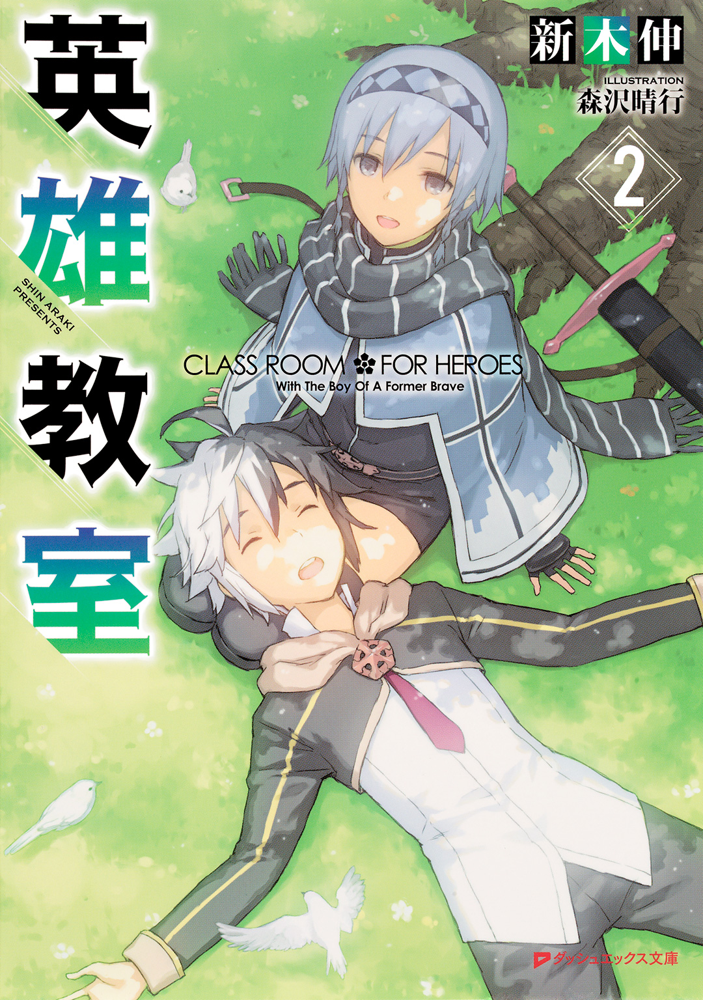
この本は縦書きでレイアウトされています。
また、ご覧になる機種により、表示の差が認められることがあります。
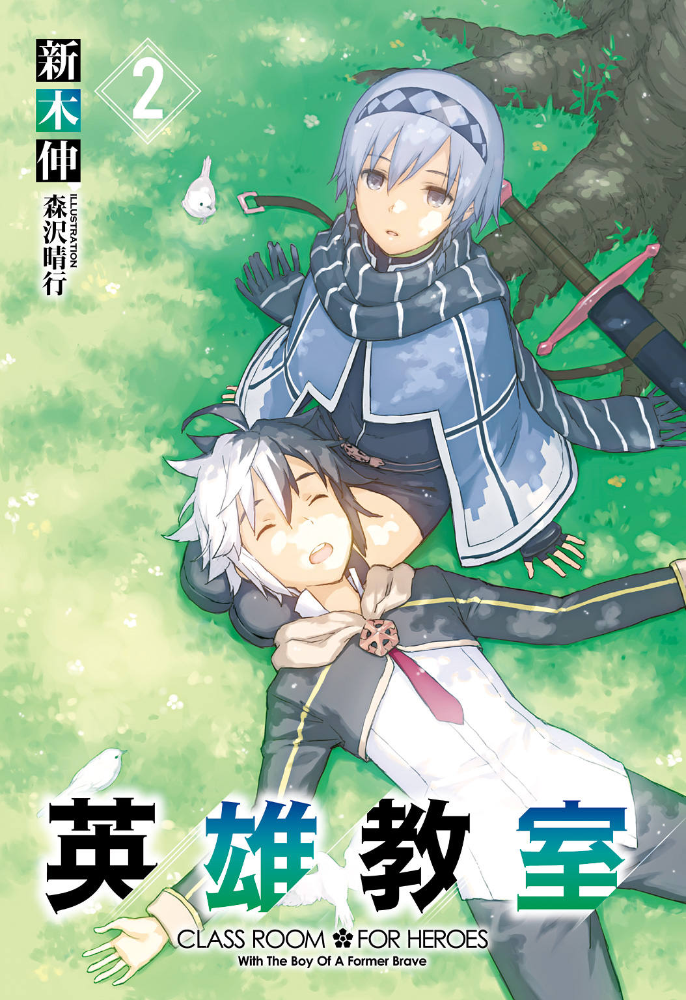
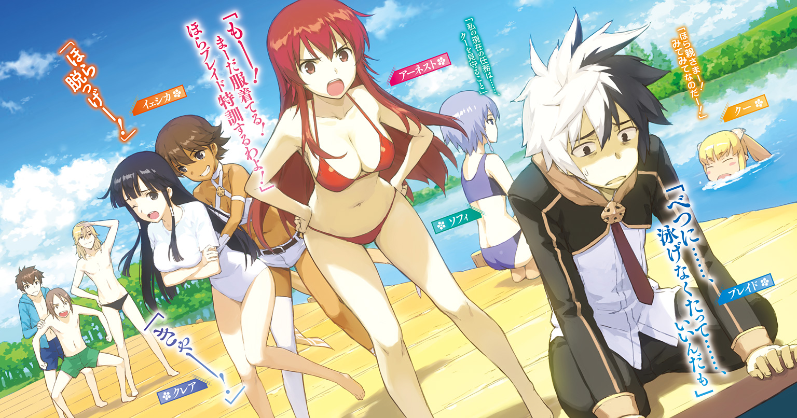
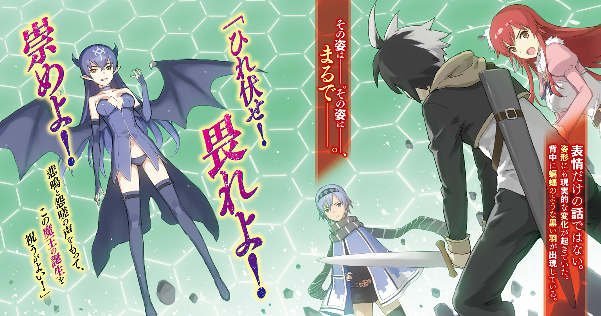
 ダッシュエックス文庫DIGITAL
ダッシュエックス文庫DIGITAL
英雄教室２
新木 伸
第一章「ローズウッド学園の訓練」
第一話「とある実戦的な訓練」
○ＳＣＥＮＥ・Ⅰ 「いつもの訓練風景」
ある日の午後。平和な実技教練。
いい日だなー。こんな日は、ゆっくりひなたぼっこでもできると最高なんだけどなー。
とか思いつつ、ブレイドは、カキンカキンと剣を受けていた。
もうめっちゃ雑。気にしないで剣を剣で受けてると、すぐに刃こぼれを起こすのだが、どうせ練習用の剣だし。なまくらだし。アーネストのほうは刃こぼれしないのでもう遠慮なく斬りつけてくるし。
脇で見ている試練場の光景は、以前とは違って見えている。
まず、今日の訓練は合同訓練であるということが違う。上級と下級に分かれての訓練ではなくて、百八人全員が一堂に会している。皆で楽しく実技の練習を――。
「もう！ 真面目にやりなさいよ！」
アーネストが剣を止めて文句を言ってくる。ブレイドも構えを解いてアーネストに言う。
「いや。皆がさ。いきなり変わったよな......って」
「まあね」
なぜか得意げな顔をみせるアーネスト。
ブレイドは周囲をふたたび見やった。人数はいつもともちろん違うのだが、いちばんの違いは、皆のやっていることのレベルである。
「いっくよー」
「よし。こい！」
イェシカが魔法鎧を放り投げる。クレイドのやつは抜刀して斬る。返す剣でも斬る。斬る斬る。斬る斬る斬る。みじん切りになった破片が、ばらばらと落ちる。
「すごーい！」
ぱちぱちとクレアが拍手。「いやあ」とイケメン剣士は頭をかいている。
「すごいな。あれ」
「すごいの？」
「すごいだろ。あれただの気じゃなくて闘気だぜ？ そうでなかったら魔法鎧があんな簡単にバターみたいに斬れないだろ」
「闘気？ なにそれ？ そんなの使わなくたって、斬れるけど？」
小首を傾げるアーネスト。
ああ。おまえはそうだっけ。これだからできちまえるやつは......。てゆうか。闘気の存在も知らんで闘気使ってたのかおまえ。
「クレイーッ！ つぎー！ いくよー！」
交代したクレアが持ってきたのは、そこらの大岩だ。「おう」と叫んで、クレイが剣を構える。最近、クレイドは、〝クレイ〟という愛称をゲットしていた。
「せーのっ！」
投げる。クレアってば意外と力持ち。
「クレイ！ ブリリアントカットでよろしくっ！」
イェシカが、突然、叫んだ。
「えっ？ ええっ!? ちょ――ちょっ!?」
慌てながらもクレイは剣を振るう。そして大岩が落ちた、その形は――。
半端な宝石型だった。せいぜい十二面体といったあたり。
「クレイー......、しょぼっ」
くびれた腰に手をあてて、イェシカが笑う。
「いきなり言うなよ！」
クレイたちのやりとりを、ブレイドは笑って見ていた。
――と、脇から飛んできたファイアボールを、剣で弾き飛ばす。
「おーい、気をつけろー」
「す、す、す――すいませんっ！」
三つ編みがびゅんと振られる。黒い髪の魔法使いの女の子が、杖を手にして、ぺこぺこと頭を下げている。ドジっ子と名高い女の子だ。名前は......なんだったっけ？ 運動の苦手な彼女は、魔法を専門とする道に進むことを決めたらしい。
他の生徒もおおいに遊んでいた。気やら魔力やらが発現している。あちこちで燦めく光があがっている。悪ふざけして力試し的なことをして遊んでいる。
まあ覚えたてというのは、そういうものだ。
クーとの戦いを経てからというもの、全員が飛躍的なレベルアップを果たしていた。
気や魔力といったものをもともと会得していたのは、上級クラスの連中だけで――下級クラスの皆は、その手前の生体エネルギーあたりを発散しているのが関の山だった。
闘気や精霊力あたりともなると、素でナチュラルに使っていたのはアーネストぐらいなもの。他の皆が使っていたのは、ごく普通の気や魔力でしかなかった。
それがいまやどうだ。下級クラスの者は全員が気や魔力を普通に使い、上級クラスの連中は闘気や精霊力を発揮しはじめている。無意識のうちに、というのが意外とすごい。普通は何年か、それだけを念入りに修行してはじめて身につくものなんだが。
つまり下級クラスの者でさえ、以前の上級クラスの腕前に到達しているということだ。上級クラスの者たちは、さらに一段階上に届いてしまっている。
あのときの戦いで、生徒たちは、アーネストに全員のエネルギーを集約させる伝導回路の一部となった。そこで気と魔力が伝導したことで、強制的に回路が開いてしまったらしい。力の感覚を得たといったほうが正しいか。
「親さま？ もうよいのか？」
「んー？」
アーネストとの練習を中断していると、クーが話しかけてきた。
「親さまー！ かーまーえー！」
ロケットのようなタックルを受ける。親としてはよろけずに受け止める。練習中は抱きつくの禁止と言ってあった。さぼっていたので練習が終わったと思ったようだ。
練習中はクーは見学しているだけだ。竜種であるクーは「修練」というものを行わない。
「アーネスト。なんか不満そうだな？ いいじゃん。レベルアップしたんだし」
ブレイドはそうアーネストに話しかけた。
彼女は、皆の様子を、あまり面白くなさそうに見つめている。
「力を持つものは義務も持つべきなのよ」
そんなつぶやきがあがる。アーネストらしい一言だと思った。
○ＳＣＥＮＥ・Ⅱ 「国王の発表」
「おいっ。あれ」
と、誰かが気づいた。
肘で小突かれた隣の生徒が、おなじほうを向く。それが連鎖していって、全員が揃って一方を向くようになるまで、十秒かそこらしか必要でなかった。
生徒たちを二つに割って、歩いてくる男がいた。何人も美女をはべらせて歩くその男は、ブレイドたちのもとにまっすぐにやってきた。
「陛下――」
アーネストが膝をついて、低く頭を垂れる。
ブレイドは立ったままで国王を迎えた。上に見てもいないが、下に見てもいない。まったく対等の関係である。
「なんだよ。授業の邪魔だぞ？」
ブレイドは言ってやった。皆もきっとそう思っているに違いない。
「ブレイド」
礼をしたままの姿勢で、アーネストはブレイドのふくらはぎに攻撃してきた。すげぇ器用。
「ああ。私に構わず続けてくれたまえ」
国王は生徒たちを見回すと、鷹揚に言った。もちろん生徒たちは動かない。アーネストのように膝をついているか、直立不動で国王に注目を向けている。
「アーネスト君。君も頭をあげたまえ。少女を平伏させて愉しむ趣味は、私には......まあ、なくもないがね」
「はっ」
アーネストは頭をあげた。オヤジギャグに対して殺人ツッコミも入れずに、素直に従う。
「なんかご機嫌すぎるぞ。怪しいな。いったいなにを企んでいるんだ？」
「静聴なさい」
アーネストから肘鉄を食らった。避けずにあえて食らっておく。
「君たちは大変よろしい。進歩が著しい」
国王は賛辞を惜しまず褒め称えている。あまり人を褒めるやつではないのだが......。ブレイドはますます怪しんだ。
「そんな君たちにぴったりの訓練を用意したのだ。ひどく実戦的な訓練だぞ」
国王は両腕を広げた。マントも一緒に広がって、ただでさえ大きな体軀が、より大きく偉大に見える。しかしブレイドは騙されない。動作も台詞もすべては演出だ。無意識で演出をやっている。こいつは一種の天才なのだ。
「これよりも実戦的な訓練はあり得ないと――私の名において断言しよう。君たちもきっと気に入るはずだ」
かつての大戦で人類側の八ヶ国同盟をまとめあげた雄弁術が、生徒たちに向けて無駄に振るわれる。アーネストなど、ごくりと、固唾を呑んで国王の次の言葉を待っている。
「では、君たち――。やってくれたまえ」
国王が後ろに向けて合図をする。ぞろぞろと作業服を着た一団が試練場に入ってきた。
何十人もいる作業員たちは、すぐに作業にとりかかりはじめる。道具からすると土木作業をはじめる模様だ。
「え？ えっ？ ちょっ......。陛下？」
「実戦的訓練のためには、準備がいるのだ。少々、ここを掘り返す必要があるのでね」
「え？ 掘り返すって......ええっ!? そんな......、まだ授業が......」
「学園長として午後の授業は中止を決定する」
生徒は総員退去させられた。そして午後の授業は休講となった。
ブレイド的には、ひなたぼっことお昼寝ができるので、これはむしろ、ご褒美といえた。
「どんな訓練なんですか？」
「詳細は、工事完了まで待ちたまえ。楽しみはあとに回したほうがより大きくなるぞ」
「はぁ」
○ＳＣＥＮＥ・Ⅲ 「青空庭園」
ちょっとだけ、と言っていたはずなのに、工事は長く続いた。
そのあいだブレイドたちは、試練場が使えず、運動不足の日々を送っていた。
そして工事完了の日――。
「うわぁ」
おもに女の子たちの歓声があがる。
改装された試練場は、以前とはまったく趣が異なっていた。まず第一に、屋根がなくなった。青空のもとで、日光がさんさんと降り注いでいる。第二に、床が変わった。これまでの試練場の床は、むきだしの土だった。それが不思議な光沢で覆われた床に変わっている。
改装された試練場は、元の面影がすっかりなくなっていた。緑の樹々が、そこかしこに植えられている。試練場というよりは、青空庭園といった趣だ。これでベンチでもあったら、昼食を摂るのにぴったりだ。
「このタイル。見たことないわね」
ショートブーツのヒールで、こつこつ蹴りながら、アーネストが言う。
床のタイルは、石なのか金属なのか不明な素材でできている。白い大きなタイルは、ところどころ、青やピンクや緑や黄色になっていて、女子たちはその配色を見て「カワイー」などと叫んでいる。ブレイドにはなにがどう可愛いのか、まったくこれっぽっちもわからない。
「へぇ......。センスがいいわね」
「わかる側だったか」
ブレイドはアーネストを見て、そう言った。
「なんなの？」
歩く度に足元に色の波紋が生まれる。それが面白いのか、女の子たちは、床を光らせて走り回っている。
ブレイドは空を見ていた。青い空を見上げていると、鳥が降りてきたので、指先に止まらせる。あ。こいつ。この白い鳥。芝生で昼寝してると、よくやって来る、いつものやつかな？
「わー」
すぐ隣から声が聞こえたので、そちらを見ると――。アーネストが、ぴょんぴょん跳ねて、床を光らせていた。信じられないものを見た気分で、じいっと見つめていると――。
「うおっほん！」
おもいっきりわざとらしい咳払いを一発――。
「整列！」
女帝の大声で、皆は我に返って――。整列を果たす。
「どうかね。楽しんでくれたかね？」
「いえあの。実戦的な訓練の話だったはずですが？ 遊園地に改装する話ではなかったはずですけど」
「ふむ。遊園地か。なるほど。その利用法も可能だな。それは妙案だ。君は本当に優秀だね」
「そんな」
だから、なぜそこで顔を赤らめる？
「ですが、これでは授業に差し支えるんですけど」
アーネストはそわそわと地面を走る青赤黄のサークルを見ている。
わくわくしてたまらないのは、おまえ一人っぽいぞ。
「心配ない。こちらは特殊教練専用だ。通常教練については、いま新たな試練場を建設中だ。第二試練場はすごいぞ。魔力障壁の強度はなんとこれまでの十倍だ。ブレイド君が多少暴れたとしても破れない」
「本当ですか？」
アーネストは疑り深い目を国王に返す。
「......破れないと思う」
「思うってなんですか。はっきりしてください」
「仕様変更だ！ 百倍にしたまえ！ いますぐにだ！」
「障壁強度をいまの設計の十倍にしますと、予算は百倍となりますが」
国王の隣に立つお姉さんがクールに指摘する。
「かまわん！ 私がすべて責任を持つ！」
「早く用件に入れよオッサン」
「ブレイド！」
アーネストが怒られる。〝不敬〟だとか言って、すぐ怒るのだ。こいつは。
床の起動準備がはじまった。六角形のブースに一人ずつ入って立つ。
王様が王紋を発動。王紋を押しあてると活性化。ぴゅるぴゅると電極付きのコードが伸びてきて、額に張り付く。そうすると、くてっと生徒たちは次々倒れる。
まだコードに捕まっていないのは、アーネストをはじめ、上級クラスの数名ばかり。
「よけずにいたまえ」
「でもっ！」
「おーい。アーネスト。おまえの忠誠心が試されてるぞー」
ブレイドは無責任に言ってやった。
アーネストはこんどは避けなかった。額に電極が貼りついた瞬間、くたっとくずおれる。
つぎはソフィだ。
「それは命令？」
「命令だ」
「了解」
ソフィもくたっと倒れる。
「さて。ブレイド。君は私を信頼してくれるかな？」
答えない。でも避けない。電極が額に貼りつく。
そしてブレイドは、虹の道を通って――。もとの場所に立っていた。
○ＳＣＥＮＥ・Ⅳ 「仮想世界へ」
《転送はすべて成功だ》
声でない声が皆の頭に直接響いた。国王の声だ。
皆、混乱している。国王の気配はどこにも感じられない。なのに声だけが頭の中に響く。
ブレイドは一人冷静だった。
「ここ。現実じゃないんだろ」
《なんだ。もうわかってしまったのか。もう少し驚いてくれてもいいのではないかね？》
「幻術には何度もかかったことがあるからな」
なにか違う。なんか違和感がある。ここが現実ではないと、心のどこかが告げてくる。
《ほう。さすがだね。現実となにひとつ変わらないように調整を重ねておいたのだが》
「ねえ？ どういうこと？」
アーネストが聞いてくる。ブレイドは説明してやる。
「ここは現実じゃないんだよ。魔術か幻術か、なんかそんなもので作られた空間なんだ。おでこに何か変なのが貼りついただろ」
《カガクという名の失われた魔術系統だがね》
「そっか。アスモデウス......と戦ったときの、精神世界みたいなものなのね」
「いや。それは俺。しらんけど」
「そういやそうよね」
「なにをすればいいの？」
ソフィはまったく気にしていないようだ。彼女はいつでもブレない。
「おいオッサン。なにをするのか知らないが。これだとまずいぞ。――そっくりすぎる」
《なにがだね？》
「もっと現実じゃないとわかるようにしとけ。でないと戻ってから区別がつかなくて大変なことが起きる」
《ふむ。一理あるな。――これではどうかね？》
皆の頭の上に、ぽん――と、文字が浮かぶ。それぞれの名前だった。
「うわ。なにこれっ？」
アーネストは手でさわろうとするが、すっかすっかと、手は素通りする。
《これでどうかね》
「もう一声」
《ふむ。......では女の子たちの夢を叶えるとしよう》
周囲の光景が急にファンシーになった。地面も木も花もレンガも、すべてお菓子に変わる。
「あまい！」
「くってるし」
「まだここが現実ではないことに疑念を持つ者がいれば、各自、おのおのの方法で存分に試してみるとよい。それなりの方法で確認できるように、粗は残してあるよ」
言われて、皆が試しはじめる。生徒たちの何人かが、何通りかの方法で、現実でないことを確認する。絶対座標表示魔法などが使われた。そしてクレアの復元能力が発動しなかった。
《彼女の能力を再現するには、演算能力が足りなくてね。それに今回は必要なかろう》
「なにをすればいいの？」
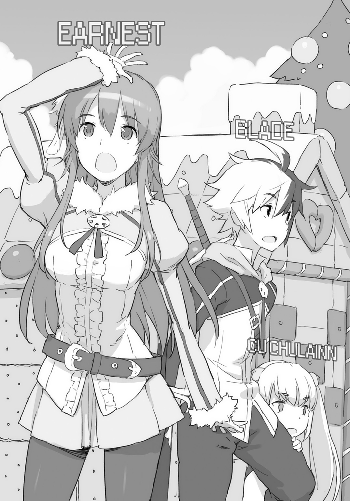
「ソフィが早く用件を言えこのタコオヤジ、と言ってるぞ」
「言ってない言ってない」
アーネストが笑う。
《諸君等にはこれから実戦的な訓練を行ってもらう。刃を当てずに寸止めを行ったり、刃引きの剣を用いたり、これまで君たちには不自由をかけていたが......。これからの教練では、そんなことをする必要はない。思うように〝実戦的〟な訓練を重ねてくれたまえ》
「ふーん」
ブレイドは軽い返事。だがブレイド以外は、しばらく意味がわかっていないようだった。十数秒も経ったころに、ようやく、すこしずつわかってきた模様であった。
「えっ？ あ、あの......？ ま、まさかとは思いますが......。本当に、斬り合えと？」
《なにか問題があるのかね？》
「え？ いえでも......、そんなことをすれば、死んで――」
《ここは現実ではないのだろう？ なら死ぬはずはないね》
「いえ？ でもあの......？ えっと......」
アーネストはまだよくわかっていない顔だ。他の者の顔に目をやると、わかっているものとわかっていない者との比率は、１：１ぐらいの割合か。クレアはわかっていない派。クレイのやつもそう。イェシカとレナードとカシムはわかっている派。ソフィとクーはどうでもいい派。
「そっか。夢みたいなものなんですね......」
アーネストの理解がようやく追いついた。ちょっと違うけど。まあだいたい正解だ。
「じゃ。なんでもやっちゃっていいんですね......」
やっぱりなんかちょっと違うぞ？ 大丈夫か？
《ああ。言い忘れたが。最後の一人になるまで諸君等はここから出られない。では訓練の成果を発揮して、盛大に殺し合ってくれたまえ》
「えっ!? ちょ――!?」
《それでは諸君。訓練の開始だ》
○ＳＣＥＮＥ・Ⅴ 「血まみれ日和」
阿鼻叫喚の渦だった。青空庭園はいいお天気で、今日は、まったくの血まみれ日和だった。
ブレイドは血だまりを特に避けずにまっすぐ歩いていた。時折、足元に血まみれの肉塊が落ちている。誰かの膵臓か脾臓か腎臓か。踏んでしまうとさすがに悪いので、それは避けて歩く。
ったく。なにが実戦的な訓練だ。
ブレイドは肩を落として歩いていた。
がっかりだ。しょんぼりだ。学校に入って、もう殺し合いをしなくて済むと思ったのに......。
「ブレイド！ もらっ――！」
茂みから、なにかが、誰かが、飛び出してきた。たぶん、「もらった！」と叫ぼうとしていたのだろうが、その言葉が口を抜ける前に、たぶん、分断していた。
たぶん、というのは、ブレイドが意識して剣を振るったわけではなかったからだ。意識しなければ斬れないようでは勇者などやっていられない。反射行動で切り倒しているようでなければ、到底、千対一とか万対一とかいう戦いで、生き残れない。「斬るぞ！」という決心を何十万回もいちいちやっていられない。とりあえず三十万対一あたりから戦局をひっくり返すのが勇者というユニットの役割だ。いや。もう勇者じゃないんだけど。
「はあぁ――」
ブレイドは深く大きくため息をついた。
クラスメートを斬るのは、たいへんに哀しい。やりたくはない。
ふと目を向けて、クラスメートの〝断面〟を見てまって――ブレイドは天に向けて怒鳴った。
「おいこら！ せめてモザイクぐらいかけろ！」
《君以外にはＲ指定にしているよ。上級クラスはＲ18で、下級クラスはＲ15相当だな》
「ならいいか」
ブレイドはしぶしぶ納得した。
これでもなるべく人と遭遇する確率の少ないルートを選んで移動をつづけている。なるべく自分が斬る人数は少なめに抑えたい。だがさっきみたいに襲いかかられたなら別だ。斬りたくはないが、斬られたくもない。
「うわぁー！」
「きゃあー！」
「化け物だぁ！」
――と。前方から悲鳴と怒号が聞こえてきた。
数名の男女がこちらに向かって逃げてくる――。だがその途中で、人数は、一人減り、二人減り、ブレイドの脇を駆け抜けて行くときには、ほんの一・五名ほどとなっていた。なぜ〇・五の〝半端〟が出るのかというと、一人は、片手と片足と片目とがなくなって、腸を引きずりながら走っていたからだ。あの出血だと、もうすぐ――死ぬ。
まっすぐに続く血の道の先に、赤い女が立っていた。
もとから赤い髪は、血を浴びてさらに真っ赤になっていた。血でべっとりと赤く染めあげられた顔が、こちらに向く。その狂気に染まった目が、ブレイドの姿を捉える。
「けけけけけ」
「おーい。正気にもどれー」
無駄かなー、と思いはしたものの、ブレイドはいちおう声をかけてみた。
「逢いたかったわ......。ブレイド......」
なんと返事があった。まだいくらかは正気を残していたようだ。言葉を解せる。まだ「けけけけけ」と笑うだけの魔物にはなっていない。
「ねえブレイド？ 貴方の内臓は何色なのかしら？」
アーネストはうっとりとつぶやいた。
そして血と臓物とで汚れた剣を、恍惚とした表情で――べろおーっと、舌で舐めた。
ああ。やっぱりだめだ。
「人を斬るのって......。こんなに楽しいことだったのね......。わたし。ずっと我慢していて......バカみたい。アスモデウスも、ほうら、こーんなに喜んでいるのよ......？」
魔剣を握った手を見せる。手は肘まで剣と融合していた。血管のような太い筋が、何本も肩のあたりまで潜りこんでいる。
ああほら。同化しちゃってる。ぜんぜんだめだな。これはもう。
ふう、と、ブレイドはため息をついた。以前、アーネストと交わしたある〝約束〟のことを考える。その〝約束〟を果たすときが、来たようだ――。
「だめだろー。アーネストぉー」
「うふふ。うふふふっ。うふふふふふっ......。ブレイド。ねえ斬っていい？ 斬っていい？ いいわよね？ うふふっ......。ふふふっ......。け......、けけけけけ」
「おーい。だめだろー。アーネストぉー」
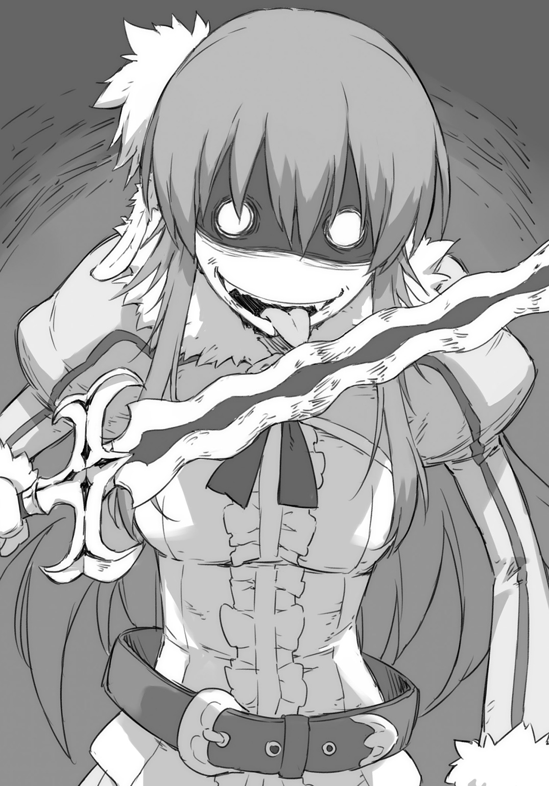
もう言っても無駄だろうと思いつつ――ブレイドは、いちおうは、言った。
「魔剣に取り込まれたらー、人斬りの魔物になったらー、俺が斬ってやるってー、そう言ったろー？」
「けけけけけ」
ブレイドは剣を振るった。無造作に。縦に一閃。
アーネストの笑いは止まっていた。まだ数秒は、アーネストはそのままの姿勢で立っていた。
だがやがて、一本の縦線がその身に現れる。
頭頂から額――。額から喉――。喉から胸――。胸から腹――。腹から股間――。
アーネストは、縦に割れた。右半身と左半身とに分かれる。脳と脊髄と、その他もろもろ、人体の内側をさらして、左右に割れてゆき、地面へと倒れる。湿った音が二つ聞こえた。
〝Ｒ勇者指定〟にはモザイクがない。すべて鮮明に見えてしまう。
「ふう」
ブレイドはため息をついた。〝約束〟は――果たした。
○ＳＣＥＮＥ・Ⅵ 「ソフィと遭遇」
「ここにいたのね。ブレイド」
しばらく移動したところで、今度はソフィに出会った。
急に背後に現れた気配にブレイドは振り返る。
「ソフィ......。おまえもか？」
「......？」
ソフィは小首を傾げる。
よかった。まともだ。このバトル・ロワイヤルのなかで、ソフィだけは、唯一、正気を――。
「ブレイド。貴方と勝負がしたいわ」
「おまえもか」
「......？」
ソフィはよく分からない、という顔で、首を横に振った。
「一度貴方と全力で戦ってみたかった。ここは仮想の世界。ここでなら本気を出して、貴方と戦える」
そう言うと、ソフィはすこしだけ笑った。なんかクレアがよくやるみたいに、ぽっと頰を赤らめる。やっぱりソフィもちょっとおかしい。だから、なぜそこで頰を赤らめる？
「私が全力を出したら......、いまの貴方に勝てる？」
「やってみればわかるさ」
ブレイドはため息とともに、そう言葉を吐き出した。
「やるわ」
ソフィの全身が青い輝きに包まれる。勇者力の発動だ。わずか十秒間だけの限定だが、ソフィは人工的な勇者力を発生させることができるのだ。
「時は停まる」
そして時間が静止した。あらゆる物理法則を意のままに操る勇者力は、仮想空間の中でさえ機能した。
静止した時の中を、ソフィだけが動ける。
手が肘が、腕が――躍った。ソフィによる流れる連撃が、ブレイドのあらゆる急所に叩きこまれる。
主観時間のわずか十秒ほどの間に、攻撃回数は百を越えた。
そして十秒が終了する。ソフィの全身から青い輝きが消えると同時に、時は再び秒を刻みはじめた。
「こおおおおぉぉ......」
ブレイドは吐息とともに、体内に留めていた〝氣〟を体外へと排出した。単なる生体エネルギーではない。気でもない。闘気でさえない。限りなく純度を高めた気――。九九・九のあとに、九が四つも連なるほどに純度を高めると、気は単なる気ではなくなる。
これを使って行う《金剛身》という防御の技は、一定時間のあいだ、あらゆる攻撃を防ぐことができる。
ただし持続時間は、一呼吸程度。一秒にも満たない短時間なのだが――。
時間を停めておいてもらえれば、その効果はずっと続く。そして時間停止が来るとわかっているなら、〝氣〟を練る時間も作れるというものだ。
「だめだろー。ソフィー」
ブレイドは言った。アーネストにやったのと同じように、ソフィに対してもダメ出しをする。
「いくら時間停止させたってー。百回攻撃したってー。ダメージいかなきゃー。だめだろー」
だが十秒間を使い切ったソフィは、衰弱しきっていて、倒れずにいるのがやっとだった。聞いているやら、いないやら――。
「あとソフィーのそれはー。相手に凌ぎきられたらー、おわってるだろー、だめだろー」
ブレイドは剣を持ち上げた。正直、あまり気は進まないのだが――。前に歩きだして、ソフィの横を歩き抜けると同時に、すれ違いざまに剣をふるった。
ぽーんと、ソフィの首が飛んだ。
ソフィの首は空中にあるあいだに、ゆっくりと回転し――。
はじめその目は、驚いたように、大きく見開かれていたが――。やがて静かに閉じていった。
「ふう」
ブレイドはため息を洩らした。まあ「全力」で「本気」の決闘を挑まれたのだから、首くらい飛ばさないことには、終わりはしないのだが――。
○ＳＣＥＮＥ・Ⅶ 「我が子と遭遇」
「ひい！ ひいいいィィ！」
しばらく歩くと、横手の茂みの向こうから、なにやら断末魔の悲鳴らしき声が聞こえてきた。
「ギアアアアア！」
茂みの向こうは、それきり静かになった。
あまりいい予感を覚えなかったが、茂みを越えて、向こうに行ってみる。
ふしゅうううぅ......。
炎とも蒸気ともつかない息を吐く、大型肉食魔獣がいた。
ドラゴンの幼生体――つまり我が子だ。
「おい、クー。なんだおまえもこっちに来てたのかー」
ドラゴンは答えない。ぎょろりと本能が剝きだしになった野生の眼で、くっちゃくっちゃと、口の中の肉を咀嚼している。
「おーい。クー。こっちに戻ってこいー」
「ぐぐ......、ぐが......、く......、くれあー、お、おいしいよー......、くれあー」
そうか。喰われていたのはクレアか。その肉はクレアか。いやもうすでに元クレアか？
「だめだろー。クー。変な肉の味を覚えちゃー」
親としてたいへん嘆かわしい。人肉の味なんて覚えちゃいけない。
「先に出てろー」
ブレイドは剣を振るった。
ぴう、と音速を超えた剣先がドラゴンの装甲も筋肉も骨格さえも断ち切って、最初の一太刀で、まずは二等分。返す一太刀で四等分。さらにもう一太刀で八等分――。
ブレイドは高速で剣を振るいつづけた。どんどん剣速は増してゆく。《無尽閃》という剣技であるが、ようするに、いっぱい剣を振るうという、ただそれだけの技だ。一秒間に数十回を越えたあたりから《無尽閃》と呼ばれる。そこを越えるには、腕の筋肉をただ力ませるだけではだめで、完全な脱力と完璧なフル稼働。その果てしのない繰り返しができなければ――。
「――と。こんなもんかな」
ブレイドは剣を止めた。
「ドラゴン・ハンバーグ。一丁あがり」
挽肉の巨大な山が、目の前に、うずたかく積み上がっている。
そういえばクレアも混じっていたっけ。ならこれは、ドラゴンとクレアの合挽肉のハンバーグとなるのだろうか？
肩の上に剣を載せて、巨大なハンバーグを見ていたブレイドは、どこからともなく鳴り響くサイレンの音を聞いた。
いまのクーで最後だったか。それともどこかで誰かが相打ちにでもなったか。
なにはともあれ、バトル・ロワイヤルは終了したらしい。
○ＳＣＥＮＥ・Ⅷ 「現実」
虹色の道を通り抜ける。
不意に、自分が目を閉じていることに気がついて、目を開けた。
床に寝転がっていたらしい。額に貼りついていた電極付きのコードが、ひとりでに外れて、床のタイルのなかに引きこまれていった。電極の消えた先を、しゃがみこんで、じいっと見ていたブレイドは、皆の視線が自分に集まっていることに気がついた。
「よ」
手を挙げる。まだ見られている。
「俺。ブレイド」
自己紹介してみる。
「知ってるって」
ようやく皆の顔に笑いが浮かぶ。
「ちぇ。やっぱブレイドかよ」
男子の誰かが、そう言った。ちょっと悔しげに――。
そこでブレイドは気がついた。
ああそうか。最後まで生き残るのは誰か!? ――とかいう、バトル・ロワイヤル形式の〝実戦的訓練〟だったっけ。そしたらアーネストあたりは中盤あたりに退場で、相当悔しがっているだろうと思い、赤い色を探してみたら――。
隅っこのほうで、うずくまって、膝を抱えてイジケていた。
「おーい。アーネスト」
「話しかけないで......」
アーネストはげっそりとやつれた顔でそう言った。
「ええわかっているわ。わかっているのよ。私。あんな......。まさか。私。自分が......。あんな......」
あんな――なんだろう？
「ああ。内臓の色とか訊いてたあれか」
ブレイドは言った。
「だまれ！ おだまりなさい！」
これは近くに放りだしてあった愛剣に対する言葉。アーネストはアスモデウスをばしばしとぶっ叩いている。いや。蹴った。いま蹴ったよ！
「気にすることはないよ。アーネスト。君は大変に、妖しく、そして美しかったよ。君に斬られて、僕は最高に光栄だったよ」
髪をかきあげて、レナードがナルシス気味にポーズを取る。
「うるさい！ 斬るわよ！」
レナードに叫び、そしてアーネストは足元の剣に向けて、また叫ぶ。
「だから斬らないっての！ あんたは黙ってなさい！」
もうしっちゃかめっちゃかだった。
ブレイドはアーネストから目を離した。もうひとりの落ちこみ具合の大きな二人に、その目を向ける。
「クレアー！ クレア！ ごめんね！ ごめんねー！ 食べちゃってごめんねー！」
「いいの。いいのよ......。おいしかった？ ならよかった。う、うう......。でも......。でも痛くて......、あんなっ......、ごきん、ぼきんって......」
「ごめんね！ ごめんねー！」
クーとクレアの二人は、抱き合って、なぐさめあっている。
「ブレイド！ ちょっと貴方に言いたいことがあるんですけど！」
二人を見つめていた視界が、アーネストによって遮られる。
「――縦はないでしょ！ 縦割りは！」
「なんだ？ 横がよかったのか？ いやでもあれはお薦めしないぞ。輪切りにすると腸とか出るし。すぐに絶命するわけじゃないから自分の内臓に顔を突っこむはめになるし。だいたい腸も輪切りだから――そうそう腸の中味って、知ってっか？ ウンコが詰まってるんだぞ？」
「そういうことは言ってない！」
アーネストはぷんすかと怒っている。
「私は首を飛ばされたわ」
「ああ。あれだと、わりとすぐに終わるよな」
「なにそれ！ なんでソフィだけ!? なんで私だけイヤらしい斬りかたなのよ!?」
「いやらしい？ なんで？ なにが？ どこが？」
「見えるでしょ!? 見たでしょ!?」
「よくわからないのだが。首を飛ばすほうがよかったのなら、言っといてくれれば――」
「おおう。青春とは良いものだな」
その声は会話の途中で割りこんできた。よって全員が一斉にそちらを向いた。
アーネストなど、ぎぬろ――と、心臓が弱い者ならショック死するほどの目線を向けた。
彼女の「ぎぬろ」は、ひさしぶりに見た。だがデッキチェアでくつろぐ男には、まったく通用しなかった。
燦々と降り注ぐ陽光のもと――。国王はすっかりくつろいでいた。
美女軍団が傘をさしかけ、扇で仰ぎ、口元にドリンクを運ぶ。国王が自分でやるのは、ストローでちゅーと吸うところだけだ。それだって放っておけば、そのうち「口移しで」とか言いかねない。
このおっさん。自分ではなんにもやんない。
「実戦的な訓練はどうだったかね？」
国王はそう言った。服まで着替えている。南国風の薄い衣で、すっかりくつろぎきっている。
「.........」
アーネストたちは無言だった。無言で国王に詰め寄ってゆく。
ブレイドは皆の気持ちを汲みとって、国王に言った。
「こんなんじゃ足りないそうだ」
「ほほう？ それは殊勝な心がけだね」
濃い色ガラスの眼鏡をずらして、国王は、満足そうに笑った。
「よろしい。大変よろしい」
ブレイドは背中側に――百八人と一匹の仲間たちに向けて、手で合図を出した。
以心伝心。皆。配置についている。
この男がいかに迷惑な存在か、ブレイドが以前から持っていた心証に、皆も、いまなら完全に同意してくれるに違いない。
ブレイドは――まずデッキチェアを蹴り飛ばした。国王を地に落とす。
「うお。ブレイド。なにをする」
つぎに国王の襟首を引っ摑み、ずるずると――手近なタイルのところまで引きずっていった。
「ああ。王紋がいるんだっけ」
国王の掌をタイルに押しあてる。仮想空間による〝実戦的な訓練装置〟が再び起動した。
「こう見えても、王様は元英雄でいらっしゃる。みんな――存分に、稽古をつけてもらえー」
しゅるると伸びてきたコード付きの電極を、国王の額に、ぺとりと押しあてると、国王は意識を瞬間的に失った。ぱたりと倒れてタイルの上に寝る。
見回せば、皆も仮想空間に突入していた。全員が倒れている。
なるほど。現実側からは、こう見えているわけか。
「これって、設定いじれんの？」
美女軍団に訊く。いずれ劣らぬ美貌と才覚とを持ちあわせたお姉様方である。実質、この国を動かしているのは、彼女たちだといってよい。
彼女たちは、皆、笑っていた。口元に手をあて、身を折って、肩を震わせ、それぞれの仕草で上品に笑っている。
最も古く長く国王の傍にいて、宰相の地位にある女性――セイレーンが、お姉様方を代表して、目尻の涙を拭いながら、ブレイドに答える。
「ええ......、できますよ。どういうふうに、おいたをしますか？」
「皆は無限復活。終了条件は国王が絶命するまでな。回数は――そうだな。じゅう――いや、ひゃっかい！」
「はいはい」
国王の肉体は、床のタイルの上で、びっくんびっくん跳ね回っていた。
仮想空間のほうで、いったいどんな目に遭わされているのか......。
いくら元英雄とはいえ、怒れる百八人と一匹を相手にするわけだ。
ブレイドは国王の寝ていたデッキチェアに身を横たえた。拾った色眼鏡を顔にかける。
美女たちの微笑みを受けながら、昼寝を決めこんだ。
第二話「ブレイドの特訓」
○ＳＣＥＮＥ・Ⅰ 「水上実戦演習」
多くの小舟が水上に浮かんでいる。
本日の訓練は、水上における戦闘訓練だった。
王城とその城下町は、大きな湖の上にあった。教室の窓からも、寮からも、青い水面はよく見えている。
その湖にいくつもの舟を浮かべ、水上教練は行われていた。
戦いは地上で起きるとは限らない。空中で、あるいは水上、水中で起きることもある。
国王が学長となって、カリキュラムを見直してみたところ――地上戦の訓練ばかりをやっていたことに気がついてしまった。
そこで本日の訓練は、湖をまるごと使った水上戦の大演習となったわけだった。
装備を整えた生徒全員――百八人が、数名ずつに分かれて小舟の上に乗っている。
午前中はまず二軍に分かれて、大軍同士のぶつかり合いをやった。そして午後からは、いくつかの軍に分かれて、乱戦も経験した。
そうして徐々に水上戦に慣らしていって、最後の一戦――いま行っているのは、自分たちの舟以外はすべて敵という、ハード設定の戦いだった。
「あのオッサン。つくづく、バトル・ロワイヤルが好きだよな......」
ブレイドはつぶやいた。湖を渡る風を頰に浴び、髪をまかせながら、苦い顔をしていた。
ブレイドとアーネストとソフィ、三人の乗るこの小舟は、学園の最強戦力と見なされていた。怖れられて距離を取られる反面、命知らずのチャレンジャーにも事欠かない。
さっきも一艘、沈めてやったばかりだ。
ざばっ――と、近くで水柱が立った。水中から誰かが引き上げられてきた。
教師たちの救助船に助けられる。鎧をがっちり着込んでいるので、船上にあげるのも大変そうだ。あれは「戦死」の判定。戦線離脱。
もう。アホかと。
服を着て水に入っただけで泳ぎにくくなるというのに、鎧など着ていては、相当の達人でもなければ溺れてしまう。
「おおお俺！ 俺俺！ お姉さんに！ くくく――空気っ！ 空気もらったー！」
男子は雄叫びをあげる。苦しげに水を吐いているが、それよりも喜びのほうが上回っている。
その意味は――。まあ、ブレイドにも、なんとなくはわかった。水中に落ちて空気をもらったということは、当然、口移しになったということだ。
水面でばちゃっと水が跳ねた。「お姉さん」が水面に顔を出す。尾びれを一回打ち振るって、水面を叩く。そしてウインクと投げキッス。
この水上模擬戦では、湖底に住むマーメイド族のお姉さんがたに、ライフセーバーとしてご協力いただいている。
マーメイド族は女性ばかりの種族で、皆、美人揃いだそうだ。美醜の区別というのも、ブレイドにはよくわからないものの一つだ。強そうとか、弱そうとかなら、よくわかるんだけど。
「おおおおお！ 俺俺俺！ ファースト！ ファ――ストオォォォ！」
さっきの男子がなにか雄叫びをあげている。
口をくっつけあう行為の、いったい何が楽しいのか――そこについては、もっとわからない。
あ。いや。そうでもないか。
前にソフィのくちびるに対して、ドキドキしたことがあって――。それ以来、ちょっと――。
「なに？ ブレイド？」
ソフィが言う。くちびるを見ていた視線のしっぽを捉えられてしまった。
「いいや。なんでもない。まったくなんでもない」
「ソフィ、ブレイド、ふざけてないで真面目にやりなさい。――来るわよ！」
アーネストが怒鳴る。次の命知らずの舟が、こちらに向かってこようとしていた。
「お......、おおお、まかせとけ」
ブレイドは体の震えを押さえた。これは武者震いというやつだ。
「はーっはははっ！ アーネスト！ 君に挑戦する栄誉を僕に与えてくれるかーい!?」
舟の舳先に足をかけ、腕組みをして立つのは、レナードだ。
学園きっての色男だが、少々、バカな感じのするやつだ。ブレイドはわりと好きだった。
「レナード！」
アーネストは叫び返す。学園の女帝は挑戦を受けて立つつもりのようだ。
「死になさい！」
いきなりアスモデウスを抜刀。火球を生みだして、投げつける。
しかし、死になさいとか――アーネストのやつ、かなりエキサイトしている。水上戦闘を楽しんでいるともいう。
ブレイドは――といえば、アーネストが大砲をぶっ放したおかげで、小舟が揺れて、舳先に摑まっているので忙しい。
「ブレイド！ なにしてんの！」
アーネストに怒鳴られた。女帝を怖がる一般生徒の気持ちが、すこしわかった。このおねーさん。おっかない。
「ソフィ！ ブレイド！ 接舷するわよ！ 白兵戦用意！」
「それは命令ね」
「へいへい......」
命令されると従うソフィをよそに、ブレイドは適当な態度で返した。
舟が近づく。ブレイドは中腰になって激突のショックに備えた。
ちなみにさっき投げた火球は完全に防がれてしまっている。レナードのやつ。気の応用技で、舟を覆いつくす大きさの球形のバリアとか張っている。器用なやつめ。
舟が激突した。木の破片が舞いあがる。
ブレイドは跳躍した。タイミングを合わせて体を宙に躍らせた。
舟から舟への飛び移りは、足場とバランスが悪いために、よく注意しないと足元が――。
足元が――。足元が――。
狂った。
跳躍したブレイドの着地地点は、敵の舟の上でなく――。水の上だった。
ざっばーん。
がぼごぼげぼ。
「ブレイド！ ばか！ なに落ちてんの！ 早くあがりなさい！ ――って！ レナード！ このっ！ 卑怯者おっ！」
「彼がいない間はチャンスだからね。遠慮なくかからせてもらうよ――全力で！」
「ごっめーん、アンナ。――あたし今日はイケメンの側だからー！」
アーネストにはレナードとイェシカの二人がかりだ。苦戦している。
「えいっ！ えいっ！ えいっ！」
さらにそこにクレアも参戦。凶悪なモーニングスターを打ち振るって、アーネストを撲殺しにかかる。避けた足元のその床に、いくつもの穴が穿たれる。
がぼごぼげぼ。
ブレイドはずっと溺れていた。
手足をめちゃくちゃに振り回していた。でも体は浮かばない。水面に顔が出ない。
がぼごぼげぼ。
た、たす――。
遠ざかってゆく水面に向けて、手を伸ばす。
○ＳＣＥＮＥ・Ⅱ 「溺れたブレイド」
「ブレイド？」
舟の上で戦っていたアーネストたちは、戦いの手を止めた。
ドジを踏んで水に落ちたが、鎧を着込んでいたわけでなし、すぐに舟に登ってきて、参戦してくると思っていたのだが――。
「ちょ......、なにやってるのよ？ 早く上がってきなさいよー......？」
だがブレイドの沈んだ場所からは、気泡があがってくるばかり。
その気泡も、見ているうちに途絶えてしまう。
「もう、趣味わるいわよー？ 溺れたふりなんて......」
「あの......、アンナ？」
モーニングスターの柄をぎゅっと握りしめて、クレアが言う。
「あれ......、ひょっとして......、溺れているんじゃ？」
「えっ？」
「まさか。そんな」
アーネストは水面を見やった。気泡も消えて、もうだいぶ経つ。ブレイドはあがってこない。
「ばっ――バカっ！」
アーネストが水中に飛びこむ。ソフィも同時に飛びこんでいた。
二人で水底に向けて潜って行くと、青と黒との境目あたりの領域で、マーメイドたちに支えられて運びあげられるブレイドの姿を発見した。
アーネストはソフィと二人でブレイドを受け取った。二人で協力しあって、水面まで運ぶ。
「ぷはぁっ！」
水の上に顔を出すなり、アーネストは叫んだ。
「早く！ みんな！ 手伝って！ ブレイドが――!? ブレイドが死んじゃう！」
「大丈夫。彼は死なさない」
ソフィが言った。激昂するアーネストと真逆に冷たく落ち着き払っている。舟が近づいてくるあいだ、ブレイドの首筋に手をあてて脈を測る。
意外な人間の意外な形の脱落により、水上での戦闘訓練は中止となってしまった。
○ＳＣＥＮＥ・Ⅲ 「ブレイドの秘密」
「あのね？ 泳げないのならね、泳げないって――そう言っておきなさいよね？」
舟からおりて陸にあがり、ずぶ濡れのまま、緑の芝の上に正座をさせられている。
水はそれほど飲んでいない。
人工呼吸で息を吹き返して、正気に返ると、ブレイドはすぐにアーネストから説教を受けた。
「はい」
「貴方が落ちたせいで演習中止よ？ わかってるの？ 皆に大迷惑をかけたんだからね？」
「はい」
ブレイドはうつむいて返事するばかり。
「ほんと、わかってんの？ はいはい言ってりゃいいとか――そう思ってるんでしょ？」
くびれた腰に手をあてて、アーネストは睨めつける。
ブレイドはついに「はい」も言えなくなって、うつむいて黙った。
「あー。アーネスト君......」
見かねた国王が口を挟もうとするが――。
「陛下は黙っていてください」
「はい」
七ヶ国を束ねる大陸の盟主は、ブレイドと同じく「はい」と一言をもって黙らされた。
「もう......。素直じゃないんだから。アンナってば......」
次に仲裁にはいったのは、アーネストの親友であるところのイェシカだった。アーネスト以上にくびれた腰に手をあてて、むっつりと不機嫌そうなアーネストに笑顔を向ける。
「心配した、って、ひとこと、そう言えばいいのに」
「なっ――!?」
アーネストは、ぼっと、一瞬で真っ赤になった。
「わ、わわわ――わたしはべつに!? 心配したとかどうだとか！ そんな自分の個人的な感慨を言っているのではなくてねっ!? 皆の利益のために必要だし迷惑になるからブレイドが隠していたことを責めているのであって――!?」
「でも......、ねえ？」
「そうだよ......、ねえ？」
イェシカとクレアは、顔を見合わせてうなずきあう。
「真っ先に飛びこんだの、アンナとソフィだし。すごいわよねー......。も、一瞬もためらわなかったもんねー？」
「うん。わたし。服脱いでから飛びこまないと自分も溺れちゃうかとか......。そんなこと考えてたら出遅れちゃって......」
「ある意味あんたのそれも凄いと思うけど。あたしはー。まあー。誰かが飛びこむかなー、って、そう思ってたけどぉー。誰も行かなけりゃ、あたしが行くかなー、ぐらいで」
イェシカは頭の後ろで腕を組んだ。飛びこまなかった側――のほうに自分を置く。
「だ、だ、だ――だって！ ブレイド本気で溺れてたしっ！ ぜんぜん浮かんでこないしっ！ このまま浮いてこなかったらどうしようって！」
目に涙まで浮かべて、髪を振り乱して、アーネストは叫んだ。
ブレイドはちょっとびっくりして――アーネストを見つめていた。
「心配だったのよ！ 心配したんだから！ 心配したのよッ!! ――わかってんのッ!!」
ぎぬろ。
「はい」
まだ顔を上げてはいけなかったらしい。ブレイドは膝を摑んで、芝を見つめて、「反省」のポーズに戻った。
「だけど。意外よねー」
イェシカが言う。
「そ、そう......かなっ」
クレアも同意する。
「あのブレイドがねえ......」
自分への追及がやんで、落ち着きを取り戻したアーネストも、したり顔でうなずく。
「私はべつにどうでもいいわ。ブレイドが生きてさえいてくれれば」
ソフィも同意はしないが、否定もしない。
ブレイドにとっていちばん堪えたのは、じつはソフィの一言だ。
「べつに俺。泳げねーわけじゃねーし」
「溺れたでしょ」
ぴしりとアーネストに言われる。
「あはははは。ブレイド君。そこらの男の子みたい」
イェシカにはウケている。
「あの......。ブレイド君......？ べつに恥ずかしいことじゃないですよ？」
クレアがとどめを刺しにくる。
「べ......べつに泳げなくたって、困んねーし」
「溺れたでしょ」
「あはははは。やだもうマジウケる。ブレイド君が――！ ブレイド君がっ!! クレイやカシムみたいに意地張ってるーっ!!」
引き合いに出されたクレイとカシムの二人が、自分の顔を指差して、むっつり顔になる。
なんだかひどい誤解だった。まるで自分が「泳げない」という前提で皆は話をしている。
ブレイドは「誤解」を解くために必死になった。
「あのな。さっきから何度も言ってるけど。俺はべつに泳げないわけじゃないんだ。ただ水の中がちょっと苦手っていうだけで......。だいたい、さっきから言ってるけども、泳げなくたってべつに困らないんだ。気をコントロールすれば水の上にだって立つことができるんだ。わざわざ水に浸かってノロノロ泳がなくたって、ほら――水の上を走っちまえばいいじゃん！ な？ な？ な？ 俺って！ あったまいーだろ!?」
しーん、としていた。
「溺れたでしょ」
アーネストが指摘した。
「ちょっと笑えないわね。これは」
イェシカも、もう笑わない。
「お......、俺！ 俺！ べつに泳げないわけじゃないも！ 泳ぐ必要がないだけだも！」
「子供か」
アーネストから、ひどく冷めた目を向けられる。
「どうでもいいけど。だも！ ――って、それなによ？ そこ〝だもん！〟じゃないの？」
「ちがうも！ 俺！ 俺！ 泳げないんじゃないも！ 泳がないだけだも！」
「あのぅ......。ブレイド君――？ ちょっと、それは......だめだと思うよ？ ああっ――ちがうのっ。ブレイド君がだめなわけじゃなくって、なんていうか......、その......ね？」
クレアにはひどく気を遣われている。
「べつにブレイドが泳げなくても、言いわけばかりしていても、私は構わないわ」
ソフィからは援護を受けている。
みんなの対応はどれもブレイドには痛かった。痛すぎた。
「う......、うわ――ん!!」
ブレイドは走った。走って逃げた。
「泣いた！」
「あーあ。泣かしちゃったー。もーだーれだー？ 泣かしたのー？」
「えっ？ ええっ？ な、なんで......？ わたしのせい？」
「ブレイド。だいじょうぶだから」
ブレイドが逃亡したあとの場所で、女性陣は立ち尽くし、それぞれにコメントを述べていた。
○ＳＣＥＮＥ・Ⅳ 「食堂にて」
しばらく日の経った食堂にて――。
ブレイドがいつものようにカツカレーを食べていると、アーネストがトレイを持ってやってきて、テーブルを挟んだ向かい側に座った。
ブレイドは無言で立ち上がった。カツカレーはまだ残っていたが、トレイを持って歩き去ろうと――。
「待ってよ！」
アーネストの声がかかる。ブレイドは立ち止まった。
「なんなのよ！ なんで行くのよ！ なんでわたしそこまで嫌われてんの!?」
「だっておまえ。俺が泳げないことバカにしてくるし」
ブレイドは素直なところを白状した。数日が経って、反省して、そこはさすがに自分でも認めた。
「え？ あ......そこんとこは認めるのね」
アーネストはぽかんと、意外そうな顔をしている。
「もう〝だも！〟って半ベソで否定はしないわけね」
泳げないことをまた馬鹿にされることは覚悟していた。あと「だも！」とかは言ってない。ぜってー言ってない。捏造カンベンだ。
「ああそうだよ。認めるよ。俺は泳げないよ。悪かったな。残念だったな。がっかりだろ。俺にだって出来ないことの一つぐらいあるよ。いいよもうほっといてくれよ」
「なにこの面倒くさい男」
「め、面倒くさい......」
ブレイドはよろめいた。がっくりと膝が折れそうになる。
そうか俺は面倒くさかったのか。......あはははは。ごめんな。
膝に力を入れて、砕けそうになる腰を支えた。よろめきながら、歩き去っていこうとする。
「もう！ ブレイド！」
背中を向けたまま、アーネストに片手を振る。
「ソフィ！ つかまえて！」
「え？」
気配もさせずにそこにいたソフィに、ブレイドは、がっしりと捕まえられてしまった。
あの。放してくれないかな。カツカレーが落ちるから。
ブレイドは再び椅子に座らされた。
「もうっ。頼りなさいよね。一人じゃ解決できないことなら......、頼りなさいよ。貴方とわたしの......じゃなくてっ！ な......仲間でしょっ？」
にっこり笑ったアーネストだが、すぐに怒り顔になった。ばしばしと腰の剣をぶっ叩く。
この光景には、もう慣れた。
「はーっ......、はーっ......、ああそうだ。ブレイド。だいじょうぶだからね。教えるから。わたしが。わたしたちがっ」
「わたしたち......？」
首を巡らせると、アーネストとソフィの他に、イェシカやクレアやクレイやカシムの姿があった。もうみんな昼食のトレイを持って席についている。
「あの？ 教えるって......」
「だからもちろん、泳ぎ方を――」
「いや......、やめろ」
ブレイドは椅子から腰を浮かせた。さっき逃亡をしかけたが、また逃亡の態勢に入る。
「いい。教えなくて」
「教えてあげるってば」
「いいよ。俺は泳げないままで」
「水上戦闘はどうにかなるのかもしれないけど。水中戦闘はどうするのよ？ 困るでしょ？」
「いいよ。困るから」
「もう......。しょうがないわね......」
アーネストはため息をついた。
ブレイドは彼女のようすを、じっとうかがった。自分の思いが伝わったのだろうか。アーネストは諦めてくれるのだろうか。
「じゃ、やっちゃって――クー」
やっぱり諦めてなかったーっ!!
振り向けば、そこにクーがいた。
「親さま。我はほんに情けないぞ......」
いつもの可愛いクー。すぐに膝に乗ってくるクー。懐きまくりで、可愛いクーではなくて。顔をしかめて険しい顔をしたクーが、そこにいた。
彼女はまったくくびれていない腰に手をあてると、大きく、ため息をついた。
「情けないのだ。最強生物ドラゴンの親たる親さまが、そんな泳げない程度のことで、隠すわ認めないわ、開き直ってダダをこねるわ。床に寝転がって手足ばたばたやるわ」
「いやそこまではやってないけど」
「口を開けば出てくるのは言いわけばかり。我は子として、情けないのだ」
「いや。でもな？ おまえだってニンジン嫌いだろ？ それと同じことだろ？」
「親さま！ それでも竜か！」
「いや。俺。竜じゃないし」
手をぱたぱたと振ってブレイドは言った。単なる元勇者だし。
「また言いわけなのだ」
「いやこれ言いわけじゃないし。事実だし」
「聞きとうない！ 聞きとうない！ 親さまは、親失格なのじゃ！ ×なのじゃ」
×をもらってしまった。
「じ、じ、じ......じゃあ、ど、ど、ど、どうだってゆーんだよ......？」
「そんな親さまは嫌いなのじゃ！ 親さま勘当なのじゃ！」
ずびし――と、指を突きつけられて、そう言われた。
がーん。がーん。がーん。
ブレイドは頭を殴られるようなショックを受けた。アーネストから見下げられても、イェシカに笑われても、クレアから軽蔑されても、まだ耐えることができた。でもクーからそう言われるのは......最も堪えた。
「もう、おはようのとき、ちゅっちゅっとやってやらないのだ」
「してるの!?」
アーネストが急に叫ぶ。
「してないし」
「おやすみのときにだって、ちゅっちゅっとやってやらないのだ」
「してるの!?」
「だからしてないし」
「ごはんのときにも、あーん、と、されてやらないのだ。我にとっても親さまと縁を切るのは忍びがたきことではあるが、これも親さまを思っての愛の鞭なのだ。そのくらい親さまはダメダメなのだ。親さまはカッコよくないとだめなのだ。情けなくてダダこねてる小僧は親さまじゃないのだ」
「そうか......」
ブレイドは、がっくりと肩を落とした。ついにクーにも見捨てられてしまったか......。
「だがもし親さまが泳ぎを教わるとそう言うのであれば、我ら全員で親さまを特訓してやらないこともない。やぶさかではない。そしてもちろん、親さまが前向きであるならば、我は親さまの勘当を撤回してやらんこともない」
「勘当......？ 撤回してくれるのか？」
「うむ。竜に二言はない。竜の誓いなのだ」
「お、俺、泳ぎ教わって......、それでもし......泳げなくても......？ おまえ......いいのか？」
「どんだけ自信ないのよ」
くびれた腰に手をあてて、アーネストが呆れ声で言う。
「うむ。ベストを尽くせばそれでよい。その結果、もし泳げないままであったとしても、我は親さまを決して見捨てたりはしないぞ」
「じ、じゃあ......、お、俺......。やる」
ブレイドはそう言ったのだった。
○ＳＣＥＮＥ・Ⅴ 「湖畔にて」
とある日。とある放課後。
学園からもほど近い、王都の湖の、とある岸辺――。
ブレイドを含む一同は湖畔に来ていた。ボートを泊めるための小さな桟橋が、水の中に向けて伸びている。その木の床を、ブレイドは怖々と歩いていた。足元には板がたったの一枚。その下は水なのだ。板が割れたら水の中かと思うと、気が気ではない。
「ブレイド。しゃんとする。落ちたりしません」
「だってさぁ......」
ブレイドはアーネストに振り向いて、そう言った。水が恐いことは皆にバレている。したがって怖いことを隠す必要は、もうなくなった。よってブレイドは、へっぴり腰で歩いていた。
このあいだの水上教練のときには、もう本当に......大変だった。怖いことを隠そうとしていたからだ。平然と振る舞っていなければならなかった。
秘密を持たないでいることは......、けっこう楽だった。
「ブレイド。怖いの？ ――手を握っている？」
「あ。うん」
ソフィに手を繫いでもらった。ちょっと嬉しい。
「はいはいはい。ソフィ。あんまり甘やかさないの」
「私は甘やかすほう担当でいいわ。厳しいのは、アーネスト、貴女が担当で」
「はい。切ーった！」
アーネストが割りこんできて、繫いだ手を、ちょっぷで断ち切っていった。......ひどい。
「担当ってなによ？ いつ決まったのよ。だいたいいつわたしが厳しくしたっていうのよ？」
これには一同からブーイングがあがる。
レナード、クレア、イェシカ、クレイ、カシム――と、本日の水泳特訓についてきた面々は、アーネストが「ぎぬろ」と目を向けると、さっと全員で目線を逸らした。
「あとね、ブレイド――ひとつ言っておくことがあるんだけど」
ブレイドは身構えた。アーネストが口を開くと、決まって必ず、きつい言葉が出てくるのだ。
「――なんで普段着なの？」
ちがった。今回はそんなにきつくなかった。
「泳ぎの特訓だってわかっていたわよね？ なんで水着着てこないのよ？」
くびれた腰に手をあてて、アーネストは言う。その腰は、たしかにいつもよりくびれて見えていた。肌を大きく露出しているせいだ。
アーネストは服を着ていない。いや着てるけど。水着という、ほとんど下着みたいな面積の布地で、よく鍛え上げられた体を覆っている。布の色はもちろん赤。アーネストは、おまえは赤以外身につけないのか、というぐらい赤色を選ぶ。
そしてソフィのほうは――青。アーネストに比べると肌を覆う面積が多少増えているものの、こちらも水着だ。
水着の二人は、ふだん見ないくらいに肌の露出が増えている。
ブレイド自身は、女子の肌の露出が増えることに、特別な関心はなかった。ソフィもアーネストも、生まれたままの姿を見たこともあるし。
しかしレナードとかクレイとかカシムとかは、女子のそうした姿に、そこはかとなく多大な関心を向けているようで......。相手が向こうを向いているときに限って、ちらりちらりと目線をやっている。
「ねー。アンナもソフィも、言ってあげてよー。クレアに。なんで水着じゃないの――って」
イェシカがクレアを引っぱってきた。そういえば露出度に関して言うなら、イェシカはいつも水着で歩き回っているようなものだった。イェシカの背中やらお尻やらうなじやらおっぱいやらを、クレイたちが見ているかというと......まったく見ていない。
「もうっ。イェシカっ。私はいいのっ。いいんだからっ――やめてー！」
「この子って、脱ぐとスッゴイのよー？ ――ほらほらっ。どうせ下に着てきたんでしょ？ 脱げ！ 脱っげー！ 脱いじゃえーっ！」
レナードとクレイとカシムの目線を追ってみると――。いま服をひん剝かれつつあるクレアに対して、ビシッと向いている。まるで揺らぎがない。
クレアも服の下に着ているのは水着で――。それはすぐ隣のイェシカより、ソフィより露出の少ないもので――。仮に肌の露出の多さが男子一同の視線を引きつける要素であるとするならば、なぜ隣のイェシカを見ない？
「さっきから、なにをきょろきょろやっているのだ？ 親さま」
クーが隣にやってきて、手を握ってきてくれる。ちっちゃい手でも、すこし安心できる。
「さあな。俺にはわからん」
ブレイドはそう返した。この問題は自分には難しすぎる。
「うう......。ひどい」
服をひん剝かれおわって、すっかり水着となったクレアが、よよと、泣き崩れている。
「――で。話は戻るけど。ブレイド。貴方。なんで服着てるのよ？」
「イ、イェシカだって、着てるじゃないかっ。あれ水着じゃないだろ！ あとクーだって！」
あっちにいるイェシカと、こっちにいて、ちっちゃい手でしっかり摑まえてくれているクーのことを、ブレイドは指差した。
「あたしっ？」
「我か？」
自分の顔を指差して、二人が言う。
「あたしは。これ。水着みたいなもんだしー」
「我のこれは服ではなくて模様であるぞ？」
皆、水着に着替えていて......。泳ぎを教える気まんまんで......。ブレイドは大きな哀しみを味わっていた。水辺で足をちゃぷちゃぷやってるくらいなら楽しいんだけど......。本日の予定は特訓でなくて、水遊びぐらいにまからないだろうか、だめだろうか？
「みんな準備してきてるのに――。肝心のブレイドが、なんで水着を着てないのよ？ 特訓やめて、水遊びにでも、してもらえると思った？」
図星を指される。
「俺。持ってねーし。水着」
ブレイドは唇を尖らせぎみにして、そう言った。
「なんで持ってないのよ？」
「俺。泳げねーし。だから水着なんて。必要ねーし」
「その芸。もう飽きたわ」
飽きたとか言われた......。
○ＳＣＥＮＥ・Ⅵ 「アーネストのターン」
「はい。じゃあまず、誰から教えるのか。それを決めましょう」
アーネストがきびきびと仕切る。
「み、みんなで教えればいいんじゃないかと......」
指先だけをちょこっと上げて、決死の覚悟でクレアが言う。ちなみにクレアは、服をひん剝かれて水着になってから、ずっと猫背ぎみになっている。あれはたぶん恥ずかしいのだろうと見当はつく。だがなぜ恥ずかしいのか。これがまったくブレイドにはわからない。
「却下」
アーネストは言った。
「教えかたなんて、人それぞれなんだから。みんなで一斉にやったって、きっとうまくいかないわよ。わたしたちのいまの目的は、ブレイドが泳げるようになることなんだから、それを第一に考えるべきだわ。――って、なによ？ その目？」
ブレイドはアーネストをまじまじと見つめていた。
「い、いや......。意外とまともなことを言うんだな、って」
「意外ってなによ？ どういう意味よ？」
「ぎぬろ、はやめろ。耐性ないやつがダメージ受けるから」
アーネストの眼力が飛んでくるたび、クレイあたりが巻き添えを食らって、パンチでも食らったように吹き飛んでいる。
「いや。つまり......。ごめんな。おまえ。本当に俺のこと考えてくれてたんだな」
「な、なによ......、急に？ そうじゃなかったら、いったいなんだと思ってたわけ？」
「嫌がらせをされているのかと」
「......あのね」
ぴきぴきぴきっと、アーネストのこめかみに青筋が浮かぶ。やっぱ怖いよこのお姉さん。
「じゃ――誰から教える？」
アーネストが皆に訊く。もちろん、手を挙げる者などいない。一番手をアーネストから奪い取ろうなどという、勇気のある者など、いるはずがない。
「安心しなさいよ。ブレイド。私だって、昔は泳げなかったんだから」
「え？ おまえもか？」
ブレイドは意外な顔で訊き返した。
「そうよ？ 四つか五つか、そんな小さな頃の話なんだけどね」
アーネストはぺろりと舌を出して笑った。ブレイドは、すこしだけほっとした。そんな小さな子供に教えるやりかたなら、だいぶ優しい教えかたのはずで――。
「お父様は、泳げない私のことを、こうして――」
どん。ブレイドは背中を突き飛ばされた。気がつけば、水の上にいた。
空中で手をばたばたとやってみたが――。元勇者といえども、さすがに飛べない。
ばっしゃーん！
盛大な水しぶきをあげて、ブレイドは水の中に落っこちた。
「ちょ――！ アンナ！」
「――こうしてお父様は、私を水の中に突き飛ばして、って？ え？ なに？」
目をぱちくりとやって、アーネストはクレアを見た。
「なにじゃないよ！ ブレイド君のこと、突き落とすなんて！」
「え？ だめなの？」
「だめだよ！」
「だって、うちでは......フレイミング家では、教えるっていったら、まずこうやって、放りこんで......。命がけで......、特訓で......。だめなの？」
「だめだよ！ ブレイド君！ 溺れてるよ！ ――ほらっ！」
ふだん見せないような強い声と強い顔で、クレアは叫んだ。腕を振って、ブレイドを示す。
がぼごぼげぼ。
ブレイドは溺れていた。誰も助けにきてくれないから、そろそろ、だめっぽかった。
「ブレイド！」
誰かの叫び声が聞こえるのと同時に、ブレイドの意識は、闇にのまれていった......。
＊
ぴゅう、と水を噴き出して、ブレイドは息を吹き返した。
「俺！ 死んでた！」
「ほら生きてるじゃない」
「ブレイド君――死にそうだったよ！ だめ！ 突き落とすの！ もうだめ！ 絶対！」
「し、死にそうになれば......、泳げるようになるのよ......？ なるんだから......。私......。そうだったんだから？」
「死んじゃうよ！」
「そだよ......。俺......。死にかけたよ......？」
かばってくれるクレアの声に、ブレイドもつぶやきを重ねた。
「ほら！ じゃあいいんじゃない」
「泳げるように......。ならなかったよ......？」
「それはブレイドが......、だめだからでしょ？ わ、私のせいじゃないわよっ！」
アーネストは腕組みをしたまま、ぷいっと、そっぽを向いた。
「だいたい......。おま。落ちたりしないって。言ったじゃないか。言ったじゃないか」
ブレイドは恨みがましく言った。最初はアーネストは優しく思えた。子供に教えるように優しく教えてくれるのかと思った。
「言ったわよ？ 落ちる心配しなくてもいいって。あとでちゃんと突き落としてあげるからって、そうも言ったわよね」
「言ってない！ おまえはぜったいそっちは言ってない！」
「駄々っ子か」
「おまえ言ったじゃん！ 優しく教えてくれるって言ったじゃん！ 言ったじゃん！ 子供に教えるみたい優しくやるって......！」
「それこそ言ってないわよ。だいたいフレイミング家の教育方針は厳しいのよ。常に心に獅子を――ってのが、うちの家訓なんだから」
「おまえの家の家訓なんて聞いてない！ ぜーったい聞いてない！」
「もうしっちゃかめっちゃかねー」
イェシカが呆れ声で言ってくる。
クーはクレイとカシムに遊んでもらっている。ばしゃばしゃと水しぶきがあがっている。ドラゴンは生まれつき泳ぐことができるのだ。犬かきだが。うらやましいことに。
今日は親さまは休業なのだ。よってブレイドは盛大に駄々をこねる構えでいた。
○ＳＣＥＮＥ・Ⅶ 「ソフィのターン」
「次は私の番でいいの？」
「えっ？」
ソフィの声がした。ブレイドはそちらを向いた。
呆れてあっちを向いてしまったアーネストのかわりに、ソフィがそこに立っていた。
「怖かったわね。ブレイド」
ブレイドの首筋に腕が絡む。ソフィは背中側からブレイドを抱きしめにきてくれた。
「うん怖かった。あのおばさん怖かった」
「おばさんっ!?」
イーッてやってやると、向こうはもっと十倍ぐらいの物凄い顔で、イーッと返してきた。そのさらに十倍ぐらいになるように、舌を出して、べろべろべーとやっていたら、背中にソフィの体がぴったりと押しあてられてきた。
なんでか、どきっとして、ブレイドは「イーッ」を忘れた。
「アーネストのことはもう忘れて。つぎは私が教えるわ」
「うん」
ブレイドはうなずいた。ソフィならアーネストとは違う教えかたをしてくれそうだ。すくなくとも突き落としてきたりはしないだろう。
＊
「水に入るだけなら怖くはない？」
「い、いや......」
桟橋を降りて二人で水に入った。ブレイドは水着を持っていなかったから、服を脱いで下着一枚という、なんとも情けない姿だった。いっそ全部服を脱ごうと言ったのだが、それは全員から物凄い勢いで止められた。あ。除くイェシカとクー。イェシカは一人だけ賛成派だった。クーはよくわかんないようだった。まあドラゴンだし。
「ち、ちょっと......、こ、怖いんだが」
水に肩まで浸かりながら、ソフィの手をしっかりと握って、ブレイドはそう言った。
「まだ足がつく高さだけど？」
「そ、そうだけど......」
肩のあたりまで来ている水が......すこし怖い。だいぶ怖い。ソフィに手を握ってもらえているから、なんとか我慢できているものの、そうでなければ確実にパニックになっているだろう。
「なによ。平気なんじゃない。なんでわたしのときには、あんな大袈裟に騒ぐのよ？」
「おまえが突き落とすからだろ！」
ブレイドはアーネストに叫んだ。その拍子に、湖底の泥で足が滑って、バランスを崩した。
「わっ！ わっ！ わーっ!?」
「あはははははは」
アーネストの笑い声があがる。くそう。泳げるからって。高見の見物しやがって。
「ブレイド。大丈夫。私がついているわ」
ブレイドはソフィの体にしがみついて、なんとかバランスを保っていた。体勢だけでなくメンタルのほうもギリギリで、パニックを起こす寸前で踏みとどまっていた。
「ひー......、ひー」
「ひぃひぃだって......、あのブレイドが......、ブレイドがっ......」
アーネストのやつは、お腹を抱えて足をばたばた。悶死しそうなほど笑い転げている。
「マイロード。彼は本気で怖がっているんだから。ちょっと酷いんじゃないかな」
そう言ったくれたのは――なんと、レナード。
「え？ わたし？ 叱られるの、わたしっ？」
アーネストはレナードにきょとんとした顔を向けている。
「だってあれブレイドよ？ 超生物よ？ ちょっとくらい笑ってもいいわよね？」
どういう理屈だ。だいたい超生物ってなんだ？ 俺は単なる元勇者でしかないんだぞ。
レナードのことをちょっと見直した。軟派で軽くてチャラくて顔がいいだけじゃなかった。いいやつだった！
「ブレイド。大丈夫よ。落ち着くまで――こうしていてあげる」
ブレイドはソフィの胸に、ぎゅうと抱きしめられた。
女性の胸にあって男性の胸にはない二つの膨らみが、ちょうど顔にあたってくる。
おかしい。なんかどきどきする。ほっぺたが〝おっぱい〟といわれるその場所にくっついていると、なんだか、ドキドキしてくる。
おかしい。くちびる以外には、ドキドキを感じなかったはずなのだが......。
二つの膨らみが......、その柔らかさが......。ドキドキもするし......、安心する感じで......。
「ちょ――！ なにっ!? あれなにやってんの!? ふ――不謹慎よ！ く――くっつけて！ お――!? おぱ――!? おぱ――ぺったぺた！」
「落ちつきたまえ。マイロード」
レナードがアーネストを止めてくれている。羽交い締めにしてくれている。
「ブレイド。落ち着いた？」
「え？」
ソフィに言われて、ブレイドは目をぱちくりとやった。
「怖くない？」
「え？ あれっ......？」
そういえば怖くない。怖いよりもドキドキのほうが優先されていて......。
「なるほど。他のことで水への恐怖心を忘れさせるという作戦なのかな。ブレイド君も男子だったということだね」
桟橋に腰掛けるレナードは、すっかり解説者ポジションについている。
「ねー。クレア。あなたもアレやったら――」
「むり！ わたし無理っ！」
イェシカがクレアになにかを勧めていて、クレアが物凄い勢いで否定している。
「なによ！ 甘やかして！」
アーネストはぷんすかと怒っている。
「私は甘やかすほう担当でいいわ。アーネスト。貴方は厳しいほう担当で」
「だからなんなのよそれ！ なんで勝手に決めるのよ！」
「じゃあブレイド。泳ぎの練習をしましょう。まず、足をばたばたと......」
「おう！」
ブレイドは言われたとおり、バタ足の練習からはじめた。
ソフィのおっぱいに顔を埋めているかぎり、水は怖くなかった。
○ＳＣＥＮＥ・Ⅷ 「やっぱりだめ？」
「おぶっ！ ごぶっ！ た――たすけ......！ わぶっ、へぶっ」
「あらー。やっぱりだめねー」
「あははははは！ おぶっ！ だって！ ブレイドが！ へぶっ！ だって！」
「ちょ――!? ブレイド君！ 溺れてますよ？ 溺れてますよねそれ!?」
うん。溺れてるよ。
バタ足にクロールに平泳ぎ。泳ぎの型をある程度身につけたところで、ソフィのおっぱい補助なしで、一人で泳いでみようということになった。その途端、こうだった。すぐに溺れた。水への恐怖を忘れられていたのは、おっぱい成分が供給されている間だけだった。一人で泳ごうとしたとたん、恐怖で手足が動かなくなってしまった。
水に沈んで、水面とサヨナラしようとしたブレイドは、飛びこんできた誰かに助けられた。
「ブレイド君！ しっかりしてください！ ブレイド君！」
ブレイドは――目の前にあるおっぱいに、とりあえず顔を埋めた。
「き、きゃあああ！ だめ！ だめだめ！ ブレイド君だめっ！ み――みんないますから！」
「ねえクレアー？ それって、みんながいなければいいって、そういうふうに聞こえるよー？」
イェシカの声が上からかかる。
助けてくれたのはクレアだったようだ。ソフィよりも体感で二倍はありそうなおっぱいにほっぺたを押しつけているおかげで、ブレイドはかろうじて平静を得ることができた。
「ほらソフィ。貴方もだめだったじゃない。ブレイドが泳げたのは、おっぱいに顔を押しつけてるときだけで、離れたら、すぐだめじゃない。やっぱり泳げるようにならなかったじゃない。〝甘えんぼさん〟も、結局、だめだったわねー」
「.........」
アーネストの声には、どこか、嬉しそうな響きがある。
ソフィは無言だ。
「あとブレイドって......。誰のおっぱいでもよかったのねー」
「.........」
アーネストの声には、ちょっとイラつきがある。
ソフィはもっと無言になった。
しかしブレイドは、パニックにならずにいるために、クレアのおっぱいから顔を離すわけにはいかなかった。
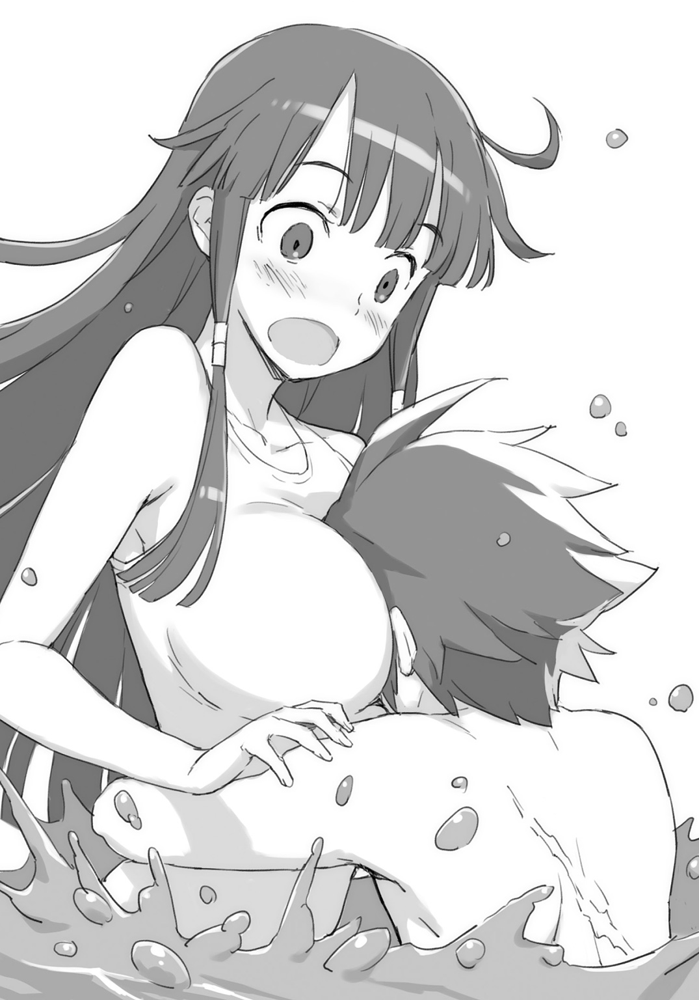
たとえ、クレアのげんこつで、頭をぽかぽかぽかぽか、と叩かれていようとも――。
○ＳＣＥＮＥ・Ⅸ 「クーのターン」
「うまいもんだなー......」
犬かきでそこらを泳ぎ回っているクー。ばしゃばしゃと物凄い水柱をあげつつ泳いでいる。あんまり効率のよいとは思えない泳ぎかただが、スピードはすごい。
ブレイドは桟橋からぼんやりとクーをながめている。
泳ぐのはもう諦めた。「アーネスト流・厳しい式」も「ソフィ流・甘えんぼさん」も、その他、「クレア式」も、「イェシカ式」まで試したが、結局、泳げるようにはならなかった。
「しかし、あなたたち......体力ないわね？」
「無理いうな......」
「これでも頑張ったんだぞ......」
クレイとカシムは二人してぐったりしている。無限の体力を持つクーを、二人して、ずっとあやしてくれていたのだ。ブレイドの「親さま」の苦労を十分の一ぐらい味わったことになる。
「レナードだってもうすこし体力あるわよ？」
「ふっ。毎朝十キロのランニングを欠かしていないからね」
髪を払って、色男がカッコつける。
「あ――あぶっ！」
なにか聞こえた。皆を見ていたブレイドは、クーのほうに顔を戻した。
「お――親さま！ 親さまっ！」
クーがばしゃばしゃと水をかいている。
「おーう」
ブレイドはゆるゆると手を振った。「親さまー♡」と声がかかったら、手を振り返してやるのが、親さまの仕事だ。
「わ――わぶっ！ お――親さま！ 親さまっ！ た――たすけ！」
「ん？」
ブレイドはゆるゆる振っていた手を止めた。――なにかが、おかしい？
「え？ あれって......？」
「え？ クーちゃん......？ 足でも攣った......、とか？」
イェシカとクレアがそう言う。
「え？ あれ？ ねえブレイド......。クーちゃん......。あれ、溺れてるんじゃないの？」
アーネストもそう言う。
クーのやつが、遊んでいるのでもふざけているのでもないということに――ブレイドは気がついた！
――溺れている!?
そう認識したのと、体が動いたのとは、まったく同時だった。
ブレイドは桟橋を蹴って、水に飛びこんでいた。
水をかく抜き手の十数回でクーのところまで到達する。泳げるようにこそならなかったが、〝クロール〟の泳法は今日の練習で身につけていた。
「クー！ だいじょうぶか！ つかまれ！」
「親さまー」
クーの腕が、くるんと、ブレイドの首筋に回される。
ブレイドはクーを摑まらせたまま、桟橋まで戻ろうと――。
「親さま......。泳げるようになったのだー」
すぐ間近にあるクーの顔が、笑いかけていた。
「え？」
ブレイドは、はっと気がついた。
「あれ？ ......そういえば？」
泳いでいた。泳げていた。一人でいま泳げている。泳いでいる！
おっぱいサポートもない。クーはおっぱいないし。なのに水が怖くない。体が動く。
「お！ おおお！ 俺俺俺！ 泳げる！ 泳いでる！」
「さすが親さまなのだ。あっちの岸まで競争だぞ！」
「さあ！ 親さま！ 我を捕まえてみるのだ！」
「あはは！ 待てー！」
クーと水の中で追いかけっこをやった。
「ぜんぶ持ってかれたわね......。なに？ 結局。親子の愛？ 厳しいのも甘えんぼさんもだめだったわね」
アーネストが言う。がっくりとくずおれている。
「別に構わないわ。ブレイドがしあわせなら」
見守るソフィ。こちらは満足そう。
「つかまえてみるのだー！」
「あはははは！ まてー！」
夕陽が落ちる方角に、ブレイドとクーはどこまでも泳いでいった。
第三話「アーネストの特訓」
○ＳＣＥＮＥ・Ⅰ 「アーネストとの練習」
放課後の試練場。剣の音が響きわたる。第二試練場は新規オープン。ブレイドはアーネストの放課後の自主トレに付き合っていた。
アーネストの鋭い剣撃を受け止める。あー。刃こぼれした。あー。真芯で受けちゃった。もうだめだこの剣。そんなことばかり考える。やってみればわかる。難しい。普通の剣で魔剣を受けるというのは、木の枝で真剣を受けるようなものなのだ。
「もうちょっと真面目にやってくれないと練習にならないんだけど！」
アーネストの挑発だかお叱りだかがやってきた。
そういや受けるばかりで攻撃していなかった。攻撃に移る。
「ちょっ――！ 待っ――！」
とたんにアーネストは防戦一方となった。アーネストの流派は正統派剣術。正統派の斬り込みだと、ワルツのような流れに誘われてしまう。だから奇策をつづけて放りこむ。奇策の四つ目でついに崩れて隙が出来た。
「ほい。ラスト」
ぶうんと振った。そしたら剣がぽきんと根元から折れてしまった。
喉元に剣先を突きつけられた。
「これは私の勝ち？」
「だな」
うなずいた。実戦だったら命はなかった。実戦だったら、剣が折れたという言いわけもない。
「いい汗をかいたわ」
アーネストが言った。突然、はっとこっちに顔を向ける。
「あ......、あんまりこっちに近寄らないでよねっ」
そう言われたので......。くんかくんか。ブレイドは自分の匂いをかいでみた。
「ああ。すこし汗かいてたな」
自分の体はちょっと汗くさかった。だから近寄るなと言われたわけか。納得。
「俺にもかしてくれよ」
アーネストの使うタオルを示して、そう言った。
「それ本気で言ってる？」
「俺だって汗くらいかくぞ？」
「じゃなくて――」
アーネストは、ばしばしと腰の剣を何回もぶっ叩いてから――。
「はい。これ使いなさいよ。もう一枚あるから」
わざわざべつのタオルを渡してきた。べつにおまえが使ってたやつでいいのに。
「これ。洗濯して返せばいいのか？」
「べ、べつにいいわよどっちでも。いえ洗わなくていいわ。そのまま返してくれていいわ。いえ。むしろそのままで」
「むしろ？」
「ちがうから！」
またやってる。《アスモデウス》をばしばしとぶっ叩いている。
「嗅いだりなんて！ しないから！」
ものすごい大きい声。ブレイドは気にしなかった。もう慣れた。
ブレイドは試練場の壁にあるボタンを押しにいった。第二試練場にはすごい装備がある。なんとボタンを押すと飲み物が転がり出してくるのだ。あと床材も固くもなくて柔らかくもないという、へんな新素材で、土まみれにならなくて済む。これは女子には特に好評だ。
よく冷えた飲み物を飲みながら、ふと、ブレイドは気がついた。アーネストの体をぼんやりと眺めていたときのことだ。練習中、ずっと感じていた違和感の正体が、ようやく、わかった。
「おまえ。重くなったか？」
「え゛？」
と、アーネストは固まった。
「な......、なんのことかしら？」
わからない感じのアーネストに、説明を加える。
「なんか。今日。動きにキレがないと思ってたんだよ。具合でも悪いのかなと思えばそうでもないようだし」
「わ、私......そんなに調子悪く見えたかしら？」
「ああ。余裕で避けられる剣の軌跡も紙一重になってたし」
「そ、それは技量が向上したって......、言わないかしら？ 紙一重で避けているんなら」
「そゆこと言ってると。皮一枚で斬るぞ」
ブレイドはアーネストが余裕で避けられるように攻撃していたのだ。それで紙一重になってしまっていた。ということは、紙一重で避けられるように攻撃すれば、今日のアーネストの動きでは、皮一枚分だけ斬られてしまうことになる。仮想空間ならいいが、現実空間でやっていたら、血まみれだ。女医の世話になるか、クレアに復元してもらうことになるか......。
「おまえ。やっぱ。重くなったんだよ」
ブレイドは言った。きっとそれだ。絶対それだ。ほかに理由は考えられない。
問題が解決してすっきりした。
――が。アーネストはふるふると震えていた。
「わ......、わかってるわよ」
「ん？」
すっきりとしていたブレイドは、アーネストの変化に気づくのが、だいぶ遅れた。
「自分でも......わかってるわよ！ わざわざ言わなくたっていいじゃない！」
「ん？ ん？ ん？」
「ブレイドの......バカ――っ!!」
うおっ!! ブレイドでなければ斬り殺されていた剣撃を一閃。
アーネストは駆けていってしまった。
なんだなんだ？ いまのは俺が悪いのか？ 悪いのは俺か？
○ＳＣＥＮＥ・Ⅱ 「断罪裁判」
「なぁ。悪いのは俺か？」
アーネストは夕食に顔を見せなかった。
三日が経過した夕食の場でのこと。ブレイドはついに根を上げて、皆に訊いてみた。
アーネストから口をきいてもらえなくなって――三日が経っていた。話しかけても、ぷいっとされる。食事の席で同席になると、アーネストは席を立ってさっさと行ってしまう。
まわり中から心配されて、なにがあったのかと、訊きまくられた。「なにもない」と答えていたブレイドだった。自分が悪いとは思わなかった。単にアーネストが怒りんぼなだけで、そのうち機嫌を直すだろうと、そう高をくくっていた。
一日目あたりなら、それでもよかった。だが二日経ち、三日経ったところで、ブレイドのほうが音を上げることになった。
「これが噂に聞こえた〝絶交〟という刑罰か......」
重い。重たすぎる。
「だからブレイド君ってば、いったいなにをやったわけ？ なんでアンナが怒っているわけ？」
「いや......。とりたてて覚えはないのだが......」
ブレイドは三日前に起きたことをすべて話した。どれが原因なのか、よくわからなかったので、これは関係ないだろうということも含めて、包み隠さずにすべてを話した。体重を指摘したことについても、「関係ない」とは思ったが、いちおう、言った。
皆の反応は――というと。
「当然ね」
「有罪だな」
「ひどいと思います」
「信じらんねえ」
そこまでか？ そこまでのことなのか？
「なぜ親さまが悪いのだ？ まるでわけがわからないのだ」
味方はクー一人だけだった。しかし、人間界のことに対して、ブレイドより常識がない愛娘に味方されても......。不安が増してゆくばかり。
「やっぱり俺が悪いのか？」
「そっかー。アンナが怒って、部屋に閉じこもってた理由は、それかー。ブレイド君。それはないよー。アンナのやつ。絶交って言ってたわよ」
「それは聞いてる。口をきーてくれないという――」
「絶交って〝もう友達じゃない〟って意味だけど？」
「え゛？」
ブレイドは固まった。
「そ、そ、そ......それは、トモダチやめるって意味か？」
「その通りだけど。あんたなんか友達じゃない、っていうのが、絶交」
「ええええええっ!!」
ブレイドは大声をあげて立ち上がった。なんという重い刑罰か。「くちきーてくんない」よりも重たい刑罰があったなんて！
「い――いやだ！ 絶対にいやだ!! 俺！ 俺俺！ アーネストとトモダチでいたい！ あっあっあっ......！ あ――！ 謝れば許してもらえるのか!?」
「まあ誠意にもよるかしらね」
「謝って来る！」
「待って。ちょっと待って。ねえブレイド君？ なんでひどいのか、わからないんでしょ？」
クレアに呼び止められる。こくこく――とうなずいて返す。
「そんなんじゃ、謝りにいったって、余計に怒らせるだけです」
きっぱりと正論を告げられる。
「そそ。だからね。――あたしたちがついていってあげる」
「ホントかっ!?」
「トモダチでしょ？」
「うんっ！ うんっ！」
○ＳＣＥＮＥ・Ⅲ 「アーネストの部屋」
アーネストの部屋を訪れたのは、夜もだいぶ遅くなってからのことだった。夕食後も宿題やら鍛錬やら色々あって、皆の都合を合わせたら、ほとんど寝るような時間となってしまった。
ソフィ、クレア、イェシカ、クレイ、カシム、レナード、そしてクー。だいぶ大所帯となって、ぞろぞろとアーネストの部屋を目指す。
アーネストの部屋は寮のなかでも特別な一角にあった。個室となっている。
前を行くイェシカが、こちらに向いて、しぃーっとやった。
ブレイドも後ろを振り向いて、しいーっとやった。後ろにいたクレアが、さらに後ろのレナードに向けてしいーっとやって、以下略。
もう消灯時間を過ぎている。怖い怖い寮母さんに見つかってしまうと大目玉だった。
アーネストの部屋の前に辿りつく。イェシカが、手の甲でこんこんと軽くノックする。
「アンナ？ 起きてる？ あたし。――みんなも一緒。ブレイドがこのまえのことで謝りたいんだって」
しばらく待つ。だが返答はない。
「入るわよ？」
イェシカの手がドアノブを回すが、鍵がかかっていた。
彼女はグローブの手首から針金を取り出すと、ささっと、ほんの数秒で解錠してしまった。
彼女がいてくれてよかった。ブレイドひとりなら、開かないドアを前に、半ベソで逃げ帰っていたところだ。
ドアをぶち破ることぐらいは簡単なのだが、それはやってはいけないんだろうという判断くらいは――さすがにつけられる。
こう見えても、自分はけっこう〝常識〟のわかる男なのだ。
「入るわよ？」
ドアを薄く開いてから、もういちど声をかける。
返事はなかったが、イェシカは皆を手招きした。
「ほら。入って入って。アンナいるから。起きてるから」
ドアの向こうの気配までよくわかるなぁ、と感心しつつ、ブレイドたちは手招きを受けて、ドアの内側にぞろぞろと入っていった。
部屋は灯りもついていなくて、真っ暗だった。
最後の一人がドアを閉めたので、本当に真っ暗となってしまう。
真の暗闇の一歩手前にある暗さだが、ブレイドの目は、二間続きの奥のほうで、ぺたんと座りこむアーネストの姿を見つけていた。
「あうっ」
クレアが椅子の背もたれに下腹部をぶつけている。イェシカがすうっと避けたのになんでわざわざぶつかりに行くのかと思えば――。そうか。普通は見えないものなのか。この暗さだと。
ブレイドはまたひとつ〝常識〟を身につけた。
「アンナ......？ なにやってるの？」
アーネストはしゃがみこんだまま。こちらを向かない。その肩が震えているように見える。
「泣いてる......の？」
イェシカは問う。
「そっち行くわよ？」
おそるおそるという感じで、イェシカはアーネストの背中に声をかける。
「おいしそうなのだ」
こいつも夜目の利く側か。クーのやつが、素っ頓狂な声でそう言った。皆の脇をぴゅうと駆け抜けていって、アーネストの背中に飛びついた。
「アーネストー。我にもそれ、食わせるのだー」
「むが？」
背中にかじりついたクーに、アーネストが顔を向ける。
「ムガガガガガガガ！」
「むががが、じゃないのだ。それをくれ。そんなにあるのだ。すこしいいのだ。くれー！ くれー！ お菓子くれー！」
「え？ お菓子？ え？ なんですか？」
「誰かランプをつけてくれ。そこらにあるだろ」
種族特性で赤外線でも視えるクーはともかく、ブレイドにも細かなところまではわからない。
いったいなにがどうなっているのやら......。
「ここにありました。――つけますよ？」
灯り石が所定の場所にはめられると、ランプは煌々と輝きだした。
部屋の中に光と影が生まれて――。アーネストの姿もよく見えるように――。
「げ......」
「え？ なに......？」
「うわっ......」
ブレイドたちは、一様に絶句した。
お菓子の山。ビスケットにクッキーに、チョコレートに、各種ドライフルーツ、黄金色のマドレーヌにパウンドケーキに焼き菓子の数々。七色の輝きを放つ飴玉。瓶丸ごとの真っ赤なジャム。
そのお菓子の前に座りこみ、わっしわっしと、手づかみでお菓子を口に運びつづけるアーネストの姿があった。
「お......お菓子がおいしいのっ......、お菓子がっ......」
暗がりでうずくまって、半ベソをかきながらお菓子を食べ続ける。皆が見ているのはわかっていても、手が止まらないらしい。
「あ......アンナっ？」
「見ないで......、お願いっ、見ないでぇ......」
わっしわっし。もぐもぐ。もぐもぐ。
口の端からぽろぽろと破片を撒き散らしながら、お菓子を食べ続ける女の姿が――そこにはあった。
「なんだ。それが体重の増えた原因か」
ブレイドは頭の後ろで手を組みつつ、そう言った。
原因がわかった。理由が判明した。そしてほら。やっぱりアーネストは重たくなっていた。
「毎日毎日。それだけ食えば、たしかに重たくもなるわなー」
お菓子の山の量は、ちょっと一人で食べるような量じゃない。
「は......、はじめは、ちょっとだけ......って、そう思ったのよ？ もぐもぐ」
アーネストは言いわけでもするように、そう言った。――お菓子を食べつづけながら。
「わたし......、こんな美味しいものがあるなんて、これまで知らなかったから......、もぐもぐ」
「食うかしゃべるか、どっちかにしろ」
「.........」
「しゃべれ」
「......だ！ だからっ！ ......止まらないのよっ！」
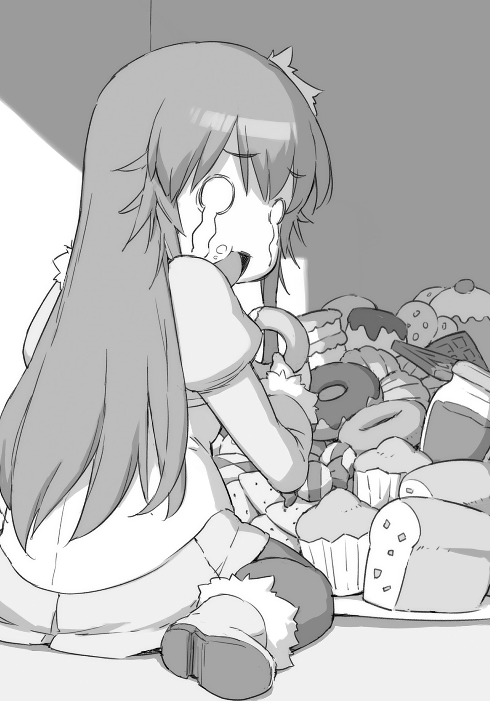
「食うの止めなくていいから」
「もぐもぐ......。ちょっとだけ......、もうちょっとだけ......って、毎日、増えていって......、気がついたらこんなに......、もぐもぐ」
「ひとつ訊かせてくれ。俺。絶交されてたのか？」
「そ、それもちがうのっ......。こんな......、こんな姿、貴方に見せられないって思って......、だからっ......、口もきけなくて......、もぐもぐっ」
手づかみでお菓子を口に詰めこみながら、アーネストは言う。涙ながらにそう語る。
「そっか」
ブレイドはひどく安心していた。
そうか！ アーネストに絶交されてたんじゃなかった！ トモダチやめられたんじゃなかった！ よかった！
心配事が片付いた。今夜はよく眠れそうだ。
「じゃ。俺帰る」
「えー？ 我もちょっと食べたいのだー」
クーの手を引いて、帰ろうとすると――。
「ちょおっと待てえぃ！」
「待って！ ブレイド君っ、待って！」
イェシカとクレアの二人にすがりつかれた。足が重たい。
「なんだよ？」
「このまま帰ったら！ アンナ！ 再起不能でしょ！」
「ブレイド君！ なんかこう――！ 優しい言葉！ 優しい言葉かけないとだめーっ！」
「優しい言葉......？」
アーネストを見る。彼女は涙目になって、もっくもっくと食べている。
顔の輪郭が変わっているように見えるのは、口いっぱいにお菓子を頰張っているからだけでもないのだろう。ほっぺたとか顎のあたりとか――ぷっくりとしている。
顔を合わせてもらえなかったから、変化に気がつかなかった。だが灯りのもとで正面から見つめ合うと、よーくわかった。
そんなにも肥えてしまったアーネストに対して、ブレイドがかけられる言葉といえば――。
「お菓子。うまいか？ よかったな」
そう言ってやると、アーネストの目に、じわーっと目に涙が広がっていって――。
「だめ！ ぜんぜんだめだよ！ ブレイド君！ それぜんぜん優しくないよ！ むしろトドメ刺しにいってるよ！」
「じゃあなんて言えばいいんだよ？」
「太っていても君は綺麗だよとか！ 太っていても君は君じゃないかとか！ ――はい！ レナード君！ お手本っ!!」
クレアに話題を振られて、ずっと放心していたレナードが、はっと我に返った。
「マイロード――僕の君への忠誠は変わらないよ。たとえ君がどんなに太っていようとも」
「誰が太ってるのよ!!」
レナードの顔にパイが命中する。投げたのはアーネストだ。
「面倒くさいぞ？」
「面倒くさくても言うの！」
「わた......わたし？ め、面倒くさい......？ 面倒くさい......デブ女？」
「わかった。わかった。みんなの言いたいことは、よーくわかった」
「ごめん......。ごめんねみんな。ブレイドごめんね。デブでごめんね。......もぐもぐ」
アーネストは謝りながらもお菓子を食べつづけている。
「ブレイド君！ ひどいよブレイド君！ アンナを救えるのブレイド君だけなんだよ！」
「マイロード。君の囓りかけのパイを食べる栄誉を許してくれますか」
「我もー！ お菓子すこし欲しいのだー！ ひとりじめはずるいのだー！」
「がるるるっ！」
「ああもう。アンナってば。野性に目覚めちゃってるわ」
もうしっちゃかめっちゃかだった。
「聞け！」
ブレイドは一喝した。皆を黙らせた。
「アーネスト。おまえ。だめだろ。一人でどうにもならないんだったら、皆を頼れ。俺たちを頼れ。多少、体重がアレなことになっていたって――そう、減量だよ。減量とかゆーのをやればいーんだ。そうだ特訓だ。俺たちが手伝ってやる。――トモダチだろ？」
「と、友達......？ ......もぐもぐ」
「そうだ。トモダチだ」
「わ、わたし......やるわ！ ......もぐもぐ」
「そうだな」
ブレイドは歯を見せて、優しく笑いかけた。
まず食うのやめてから言おうな。――とは思っても、口に出さないくらいの優しさはあった。
○ＳＣＥＮＥ・Ⅳ 「風呂場にて」
「おーい！ そっち、どうだー！」
天井ごしに〝向こう側〟へと声を投げる。
こっちは男湯。あっちは女湯。学生寮の共同浴場は男女別に分かれているが、天井のほうの空間は繫がっていて、声を掛け合うことができる。向こうで起きていることが、こちらからは、な～んもわからない。だから聞いてみたわけだが......。
返事がない。
有効な作戦立案のためには、まずは現状把握から。これ兵法の基本なり。
ということで、ブレイドたちは寮の風呂場へとやってきていた。アーネストの現状を知るためだ。体重を計らねばならない。一緒に「女湯」というほうに入って行こうとしたのだが、なぜか当然のような顔で追い出された。そしてブレイドは、いま、クレイやカシムやレナードといった男組で、「男湯」という側にいる。
「おーい！ ちゃんと計ってるかー？」
「女湯」のほうからは、声だけが聞こえてくる。きゃっきゃうふふと、非常に賑やかだ。
それに比べて男湯のほうは、葬式のように静まりかえっている。あまりに静かなので、後ろを振り返ってみると――。
「なぜ脱いでる？」
レナードのやつが素っ裸になって、肉体美をさらしていた。イケメン剣士のクレイと、カシムのやつも、半脱ぎ状態。
「いや。暇だから風呂にでも入っていようと」
「そうか」
ブレイドは納得した。そして壁の向こうに声を投げる。
「おーい！ ......ったく、もう」
「おっ――おいっ!?」
ブレイドは壁をよじ登っていった。顔を出して向こうを覗く。
アーネストたちがいた。特別私室で風呂のついた部屋に住むアーネストは、共同浴場の大きな風呂に慣れていないのか、キョロキョロとしていて、それがもう、おっかしーの。
イェシカがアーネストを体重計に乗せていた。体重計があるのはここだけだ。
「ありゃりゃー。これはだめだわー」
身をかがめて、その針を覗きこんでいる彼女に、ブレイドは訊いてみた。
「何キロなんだー？」
「いやー、ちょっとこれは言えないわー」
「言えないって、どのくらいなんだー？」
「いやー、アウトでしょー」
「そうか。アウトなくらいか」
ブレイドは顔を引っこめた。
「アウトだってさ」
情報のまったく入ってこない男性陣に、見てきたことを語ってやる。
「おまえ......、勇者だな」
クレイに言われた。
「いやちがうちがうちがう！ 俺は勇者なんかじゃないよ!! もう一般人だよ！」
「いや。勇気があるなって意味なんだが」
「えあ？ 勇気？ いや勇気は関係ないだろ」
「なっ......、なっ？ みんな、脱いでたか？ どうだった？」
こんどはカシムに訊かれる。なんでか鼻息が荒い。
「はて？」
ブレイドは首を傾げた。アーネストが全裸に剝かれて計測されていたのは目にしたが、他の皆はどうだったろうか？ 気にしていなかったので、ぜんぜん見てもいなかった。
『やだ！ もうイェシカやめてやめて！』
『あはははは！ ぷにぷにー！ ここ！ つまめる！ ここもつまめる！ ぷにぷにだー！ ここなんか握れる！ それにここんとこの手触り！ もー！ やみつきになりそうぅっ！』
向こう側から、なにやら楽しげな声が響いてくる。
「ど......、どこだよ？ どっ、どこのことなんだ......？」
ごくり、と、男子たちが生唾を飲み込む。
「じゃ、行ってくる」
ブレイドは壁に手をかけた。もういっぺん見てこようと、壁をよじ登っていくと――。
「なにをあたりまえのような顔をして覗いてんのっ！」
桶。カゴ。タオル。ナイフ。様々なものが投げつけられてきた。ブレイドは撃墜された。
○ＳＣＥＮＥ・Ⅴ 「毎朝の特訓」
アーネストの減量のための特訓が始まった。
基本は運動と食事制限。朝は十キロのランニングに始まり、朝食と昼食はカロリーを厳密に計算した減量食。午後の教練の終わったあとの個人練習のメニューは二倍。
「ヒッヒッフー――、ヒッヒッフー――、ヒッヒッフー」
二回吐いて、一回長く吐く。いかにも苦しげな呼吸音を響かせて、アーネストが朝靄のなかを走る。
ブレイドはアーネストのランニングに付き合って、彼女の後ろを走っていた。
そういえば勇者時代には「運動」というものをしたことがなかった。そんなことしなくても、毎日が戦いで、へろへろになるまで肉体を酷使していたからだが――。「鍛錬」なんて無意味だと思っていた。しかし、こうして勇者を辞めて一般人になったからには、わざわざ「運動」というものをするということは、体にとって、大変良いことなのかもしれない。そう思うようになった。実際、だいぶ鈍っているようだ。アーネストに付き合って学園の周りを何周か走った程度で、脈拍が平脈からほんのわずかに上がってしまっている。
「べつに......っ、付き合って......っ、くれなくても......っ、いいんだからっ」
いかにも苦しげに、呼吸の合間に――アーネストは喘ぐように言ってくる。
「もうすこしペース落としたらどうだ？」
「ばかね！ 苦しく......、なかったら......、なんの......、特訓......なんだかっ......」
以前のアーネストであれば、牝鹿のように軽々と駆け抜けていっていたはずだ。砂利道の石ころを一つも跳ね飛ばすことなく。しかし哀しいかな。いまのアーネストは、どすどすと鈍重に走るばかり。動物に喩えると――いや、よそう。相手の動物に悪い気がする。あと、そもそも......？ これは走っているといえるのか？
「やあアーネスト。おはよう！ よい朝だね！」
レナードが後ろからやってきて、追い抜いていった。もう二回くらい追い抜かされている。
「ぜひー......、ぜひー......」
本日の朝のノルマがようやく終わる。
「ほらアーネスト。水飲むか」
荒い息をついているアーネストに、ブレイドは飲料水のボトルを差し出してやった。
貪るように水を飲み、そこでアーネストは、寮の入口を背にして立つ優男の姿に気がついた。
「やっ――れ、レナード!?」
「やあ。マイロード。......このタオルを使ってくれるかな？」
「いやよ。そんなの。なんで貴方が使ったタオルなんか......」
アーネストはぷいっと横を向いた。
「いやこれは新品で......」
レナードはもごもごと言う。アーネストはなにかに気がついた顔になって、その首を戻す。
「だいたい、なんでレナード......、あなた？ なんでこんな朝早くに走っているわけ？」
「え？」
優男は固まった。
「い、いや、それは君が......、毎朝、十キロ走れと言うから......、僕はずっと......」
「言ったっけ？」
「今後一生......と」
「言ったっけ？」
「あは......あはははは、君がそう言うなら......そ、そうなのだろうね」
「ね？ ブレイド？ わたしそんなこと言った？」
「いやー......」
腕組みをして考える。〝空気〟とかいうのを読むのは、果てしなく苦手であったが――。
「言ってないんじゃね？」
「そうよね」
アーネストは我が意を得たり、と、うなずいた。
覚えてはいたのだが、肯定すべきか否定すべきか、どちらのほうがレナードの傷が深くなるか。それを考えたうえでの答えだった。
レナードの姿は、翌日のランニングでも見かけた。たいしたヤツだった。
○ＳＣＥＮＥ・Ⅵ 「食事制限」
厳しい減量特訓の続く、とある日の昼食――。
「うう......」
ナイフとフォークを手に、アーネストは世にも情けない顔で、目の前の皿を見つめていた。
減量中のアーネストのために、食堂を預かるオバ――もとい、マダムの作った特別食である。
「これっぽっち？ ......なの？」
「昔のアンナはそのくらいしか食べていなかったわよ？」
イェシカが言う。
「む、昔って......」
すっかり〝別人〟扱いされて、アーネストはがっくりと肩を落とした。
まあ仕方がない。ブレイドには外見の美醜というのはよくわからないのだが――。女性の体つきには何通りかがあって――。ソフィやクーみたいな、スレンダー系といわれるスタイルと、いわゆるイェシカやクレアといった美人とされるスタイルと、〝ぽっちゃり系〟ないしは〝癒やし系〟とされるぐらいの、やや肉付きの良いスタイルとがあって――。
だいたいそのぐらいの区別は、ブレイドにも〝物理的〟につけられる。
だがいまのアーネストの体型は、その〝ぽっちゃり系〟や〝癒やし系〟でも〝アウト〟となるような領域だった。
「食べたらやるわよ！ 次は昼の教練なんだから！ いっぱいカロリー燃やすんだから！」
ぱく、ぱく、ぱく――と、三口ほどで料理を平らげて、アーネストは立ち上がった。
「昼は〝仮想〟だからカロリー減らんぞ？」
旧第一試練場は、青空庭園に改装されていた。〝実戦的な訓練〟を行う仮想空間への入口だ。
がくりと膝が折れそうになったアーネストだが、立て直して――。
「午後の講義は――第二試練場にて！ 超実戦的な現実教練へと変更します！」
ここしばらく聞かなかった〝女帝〟の強権発動。カリキュラム変更。だが百八人の生徒たちに、否はなかった。
皆、頑張るアーネストを応援していた。
○ＳＣＥＮＥ・Ⅶ 「体重計測」
片ほうずつ、体重計に足を乗せてゆく。
じっと針を見つめる。ぶれていた針が、止まった数値は――。
「なんで......、落ちないの......？」
体重計の針を見て、アーネストは絶望にとらわれていた。
「おーい！ ――何キロだったー？」
男子の側の脱衣所から、壁をよじのぼってブレイドが顔を出す。
「だから覗くなーっ！」
アーネストは手近な手桶を投げつけた。いつもいつも同じタイミングで、同じ場所に顔を出してくるから、今日なんて、顔が出てくる前に桶を投げつけておいた。
「だから何キロだーっ!?」
うっさい。まったくうっさい。乙女のヒミツをどうしてそう聞き出したがるのか。
しかし言わないとまた顔を出してくるから、アーネストは、しかたなく――口を開いた。
「ゴニョゴニョ......七キロよっ！」
「よく聞こえなかったぞー!?」
「だから！ ――ゴニョゴニョ......七キロだってばっ！」
「それ？ 十の桁、かわった？」
「かわってない！」
「じゃあ減ってないだろ」
「減ってないわよ！ 悪かったわよ！ でも減らないんだからしょうがないでしょ！」
「でもアンナ？ 体重は変わらなくても、筋肉量は増えてるんじゃない？ そしたら代謝率もあがるから、だからすぐだって」
「そ、そっかな......？」
イェシカに言われて、ちょっぴり嬉しくなった。
「やっぱり......、瘦せてたほうがいいよねっ？」
「ん？ ブレイド君？ ......うーん。どうだろ？ あれは判別不能のタイプなのよねー。ひょっとして、まったく、気にしていないとか？ むしろいまのが好みとか？ 六十日間飲まず食わずでもビクともしなさそうだ！ ――なーんて思ってたりしてー」
「もう！ ばかばか！ そんなに太ってません！」
「いや......あるでしょ」
「おーい！ 呼んだかー？」
「呼んでない！」
アーネストは手近な桶を投げつけた。
○ＳＣＥＮＥ・Ⅷ 「アーネストの決心」
アーネストは悩んでいた。
毎朝十キロのランニングを欠かさずやっている。教練はカリキュラムを変更して、午前も午後も、体を動かしまくる肉弾系授業だ。お菓子だって、イェシカとアンナが泊まりこみで監視にきてくれているので、食べていない。そんなに食べてない。ちょっとしか。
なのにどうして減らないのか。
「ねえブレイド」
放課後の自主練の最中、アーネストは剣を下ろすと、正面に立つブレイドに声をかけた。
「うん」
ブレイドは剣を肩にかついで、屈託のない笑顔を返してくる。
剣戟を途中で止めて、剣を腰の鞘に戻してしまったにもかかわらず、ブレイドは不審そうな顔の一つも見せない。
この男にとって「意外」というものはないのかもしれない。まったく憎たらしい男だった。
こいつは――。ブレイドは――。屈託のない子供みたいな顔で、彼女の言葉を待っている。
「今日はちょっと......、荒療治を試してみたいの。いっかな？」
「おう、かまわないぞ。――どんなの？」
「あ、あのさ――」
それは、とてもとても言いにくいことだったので、アーネストは、言うのを躊躇った。
「もしね、うまくいってね、成功して......、瘦せられたら、あの、アレ......またしてくれる？」
「あれってなんだ？」
「だからあれよ」
「あれじゃわからん」
「だからあれだってば」
「ああ。縦斬りか」
「なんでそうなるのよ！」
アーネストは怒鳴った。縦斬りとは、仮想現実のなかで、縦に真っ二つにされた時のことだ。
「わかんねーよ。言えよ。してやるから」
「ほんと？ 本当にしてくれる？」
「ああ。してやるよ。だから言えよ」
「言ーわない」
「なんだそれ」
ブレイドは笑う。アーネストも笑った。
「だってしてくれるんでしょ？ じゃあ、そのときに言えばいいじゃない？」
「そうだけど」
「うふふっ......」
アーネストはもういちど、よく笑った。
〝あれ〟というのは、もちろんあれのことだった。頭をなでなでとしてくれることだ。彼女の記憶のなかでは、最後になでなでとされたのは、五歳の時だった。それ以降、彼女は、誰にも褒められたことはない。トップでいることは彼女にとって〝当然〟のことであり、褒められるようなことではなく――。彼女の〝上〟にいる者は、同世代はおろか、教師たちの中にも存在せず――。彼女は誰からも褒めてもらったことはなかった。
よし。成功させよ。そして褒めてもらおっ――ブレイドにっ。よくやったな――って。
腰のアスモデウスがぶるぶると震えた。
「今日はぶっ叩かねーの？ ばしばしって？」
「なによそれ？」
彼女は剣を抜いた。
「今日は〝彼〟にも手伝ってもらうのよ......」
○ＳＣＥＮＥ・Ⅸ 「炎化」
「今日は〝彼〟にも手伝ってもらうのよ......」
アーネストがそう言った。そして剣を抜く。
「うお？」
ブレイドは驚いた。膨大な熱量が、掲げた剣からあがる。剣が燃えあがった。
「ちょっとね。自信がないから。みんなは呼んでないの」
アーネストは真剣な顔になってそう言った。
「いざってときには頼むわよ？ そして、うまくできたら......あれ、お願いね？」
「お、おう......」
アーネストの言葉になにか気迫を感じて、ブレイドはたじろいだ。
「我！ アーネスト・フレイミングの名において命じる！ 剣よ！ 我が身を喰らえ！ その力とせよ！」
「お？ おっ？ おおっ？」
ブレイドは注目した。剣を包む炎の勢いが、みるみる増していく。
アーネストが《アスモデウス》を使ってなにかをやることはわかっていた。このあいだ仮想現実の世界の中で、浸食されて一体化しかけていた。あの系統の延長で、なにか新しい技にチャレンジするのかと思っていたのだが――。
「お？ おっ？ おおおっ!?」
みるみる火勢があがる。剣はもう一本の火柱だ。そして柄を握るアーネストの手も燃えはじめていた。
「お！ おいっ!? アーネストっ!? 燃えてるぞ！」
「黙って見てなさい！ 超生物がビビるな！」
「はい」
ブレイドは驚いていたが、黙って見た。口を閉ざして、変貌してゆくアーネストを見守った。
手から肘、肘から肩、肩から胴、胴から足――。全身がすっかり包まれてしまうまで、数十秒ほどかかった。
そのあいだ、ずっと、アーネストは苦しみに悶えていた。
身を焼かれているのだ。想像を絶する痛みに耐えているはずだ。
そして第二試練場には、人の脂の燃える匂いが充満した。ブレイドにとってはおなじみの臭いだった。戦場にて、高位の魔法使いが炎系の殲滅呪文をぶっ放したあとには、たいてい、こんな臭いが満ちている。
「なに？ なんなの？ この臭い？ なにが燃えてんの？」
「ブレイド君？ どうしたんですか？ ブレイド君？」
クレアの声もする。クレイやカシムたちの気配もある。レナードのいじけた気配も。
「ねえブレイド君。アンナ見なかった？ アンナは――って？ それいったいなにが燃えて――って？ ええっ!?」
人の形に燃える火焰の正体に気がついたのは、イェシカが先だったか、クレアが先だったか。
「えっ？ アンナ！ アンナあっ!?」
「きゃあああ！ きゃああアアア！ ギャアアアア！ いやぁ！ いやああっ!? アンナっ！ アンナーっ!?」
クレアが駆け寄る。掌を輝かせて、自身の復元能力でアーネストを助けようと――。
「さわるな！」
ブレイドは一喝した。クレアを止めた。そして皆にも叫ぶ。
「あいつを信じろ！ できないやつは――ここから去れ！」
立ち去る者は一人もいなかった。
苦しげに悶えながら、人体は燃え続けた。やがて――。
《ふう......。過ぎ去ったみたい》
炎の人体は、燃えたまま――まっすぐに立つと、落ち着いた声でそう言った。言った――というか、音声を発したというべきだ。
どこから発せられたのか定かではない音声が聞こえてくる。
《ブレイド。クレアを止めてくれてありがとう。元に戻されちゃってたら......わたし、もう二度と挑戦できなかったかもしれない》
それはたしかにアーネストの声だった。
《いやー。熱かった。熱かった。死ぬかと思った》
《肯定だ。汝は肉体的には一度は滅びている》
別の音声が聞こえた。ブレイドたちは初めて耳にするが、それが《アスモデウス》の声なのだろうと、すぐにわかった。意外と渋い声である。
《誇るがよい。この領域にまで立ち入ったのは、初代の他には、汝一人のみぞ》
《ふん。そのうち超えてみせるわ。その初代とやらも。――私を誰だと思っているの？》
いかにもアーネストらしい物言いに、皆の顔が、わずかにほころんだ。
「アーネストの体って、いま、どうなってんだ？」
ブレイドは《アスモデウス》にそう訊いてみた。
《炎となった》
「見ればわかる」
《つまり。不滅だ。通常の物理攻撃は一切通用しない。主の肉体は一度滅び、我の力で炎として蘇った》
「やっぱりあれは燃えてたのか」
《熱かったわよ？》
《さあ敵はどこだ？ この形態をとったのだから、滅ぼすべき強敵がいるのだろう？ 焼き尽くすべき敵は――どこにいる？》
《いないわよ》
《え？》
《この〝炎の魔人〟になったのは、ダイエットのためなんだから》
《......だいえっと？》
炎の人型は、完璧な女性のフォルムを持っていた。
《そうよ。貴方、話していたじゃない。魔人フォームは消費エネルギーがもの凄いんだって》
《うむ。炎の魔人フォームの熱量は、いかなる敵をも滅しうるが、欠点はそのエネルギー消費量が莫大なことだ。長くはもたない。毎時一〇〇万キロカロリーが必要で――》
《毎時一〇〇万！》
うっとりとした声で、アーネストが言う。
《一〇キロランニングして五〇〇キロカロリーとか、ちまちま燃やしている場合じゃないわ。ぱーっと燃やしちゃえばいいのよ。うふふふふ》
《戦意向上しているな。主よ。頼もしいぞ》
ブレイドたちからすると、女の声と男の声とが同じ体から交互に聞こえてくるわけで――。まるで一人ボケツッコミだ。
《――で。滅ぼすべき敵はどこにいる？ なにを燃やせばいい？》
「滅ぼすべき敵はな。《アスモデウス》――アーネストの贅肉だ」
だいぶ哀れになってきたので、ブレイドはそう言ってやった。
《贅肉ゆーな！》
大音量で叫んだアーネストは、そのあとで、くらり――とよろめいた。
「おい？ だいじょうぶか？」
ブレイドはちょっと心配になった。炎の魔剣との合一を果たして「炎の魔人フォーム」なるものに開眼したはいいが、「変身」ともいえる変化を初めて経験したわけで......。あまり無理をしないほうがいいのかも。
ちなみに「変身」自体は、ブレイドは割とよく見かける。英雄連中には、けっこう変身するやつらがいる。
《あ。なんかだめかも》
「お、おいっ......」
アーネストの声が響く。
《......お腹空いてきた》
「は？」
《おなか......、すいた......》
「アーネスト？」
「あの？ さっき毎時一〇〇万キロカロリーとか言ってませんでした？」
クレアが言う。イェシカがうなずく。
「だよね。一日って、普通、二五〇〇キロくらいでしょ？ あたしたちって運動量あるから、四〇〇〇くらいだとしても......」
イェシカが指折り計算する。
「ええと......。一分ごとに、四日分ずつ消化してる計算？ えっ？ まじ？」
アーネストが変身してから、もう二分くらいは経っている。ということは、もうすでに、一週間なにも食べていない状態？
いくらアーネストが脂身を〝蓄えて〟いたとしても、空腹を超えて飢餓状態のはずで――。
《はら......、ぺこ......》
アーネストの言葉はどんどん断片的に、カタコトになってゆく。
《うま......》
「お、おい？」
上体を前に傾け、手を地面につく。獣のように両手両足をついて、皆の周囲をゆっくりと歩き回りはじめる。
《るるるるるるる》
威嚇の声か攻撃音か、なんか鳴いている。
「あの......？ アンナ？」
クレアがビビってイェシカにすがりつく。クレイが剣を抜いて皆の前に出て立ちふさがる。前から思っていたことだが、クレイはヒーロー体質だなぁ、と思う。
アーネストの体のフォルムはどんどん獣じみていった。しまいには尻尾まで生えはじめる。
「なんかしっぽまで生えてきてねーか？」
手足をついて四本足で歩くアーネストのフォルムは、形まで獣じみてきていた。
《これはビーストモードだ。人を捨てることで得られる強さもあるということだ。炎化の第二段階といったところだな》
「アンナ！ 人間やめないで！」
「もう手遅れじゃないか」
《ぐるるるるる......、くれあ》
「ほら！ 呼んだよ！ わたしの名前――呼んでくれた！ まだ手遅れじゃないから！」
《くれあ......、おいしそう》
「おいしそうって言われてるぞ？」
「いやあぁぁ！ 食べられるのはもういやあぁ！」
クレアはクーに引き続いて、アーネスト（獣）からも「美味しそう」と言われている。ひょっとしたら本当に美味しいのかもしれない。
《此度の主は、精神面が弱いな。特に食欲に関しての意志が弱すぎる》
アーネストは所持する魔剣にダメ出しをされていた。
「だからダイエットしてるわけだからな」
《――で、その、だいえっと？――の敵はどこだ？ 贅肉とやらはどこにいる？》
「脂身なら、いまおまえがやっつけてる最中だ」
《るるるるるるる》
魔剣との対話をそこそこに打ち切って、ブレイドはそろそろマジになった。皆の周りをぐるぐると回る元アーネスト――いまやすっかり炎の魔獣――の放つ殺気が、そろそろしゃれにならなくなってきたからだ。いや、〝殺気〟じゃなくて......。これは〝食気〟か？
「ブレイド――？ どうする？ なんか本気であたしたち食べられちゃいそうなんだけど？」
イェシカが言う。彼女も武器の鉄扇を広げている。
「十......、いや三十秒ぐらいくれ......。なんとかする」
「三十って......、それ長いわよ。もうちょっとまからない？」
「.........」
ブレイドは答えなかった。もう気を練り始めていた。剣を正眼に構えて、目を閉じる。あらゆる雑念も、周囲への認識も断って、体内感覚のみに意識を集中する。
「ほら来た！ クレイ！」
「応っ！」
炎の魔獣に一太刀を浴びせる。――が、その剣は、魔獣の顎から尻尾までを素通りした。
「実体がないだと!?」
「ええっ!? ちょっ!? じゃ――!? アンナの体って！ いまどーなってんの!?」
「また来るよ！」
クレアが叫ぶ。
《るるるるるるぅぅぅ！》
「せいっ！」
次の突進は、イェシカが開いた鉄扇で受け止めた。真正面から受けるのではなく、勢いをいなして、角度を逸らせて斜めに放りあげる。
「あちっ！ あちっ！ あちちっ！ ――ほ、ほらっ！ つぎ！ つぎっ！ クレアかカシムかソフィかレナードっ！」
「えっえっえっ？」
クレアが慌てる。
ソフィが出た。飛びかかってきた炎の魔獣に後ろ回し蹴りをくれる。そして右フックで叩き落とした。炎化した非実体の存在に打撃が通用するのは、手足の先端を氷の精霊力で覆っているからだ。精霊力は魔力の上位に位置する力だ。気と闘気の関係に等しい。
「つぎは誰っ!?」
「えっえっえっ？」
クレアはまた慌てている。
「マイロード......」
なにをそんなにショックを受ける必要があるのか。レナードはぼんやりと突っ立っていた。
――が。突如、くわっと目を見開くと、色男は唐突に、大地に槍を突き立てた。そこに全身のオーラを流し込む。
球形のバリアが発生する。
「レナード？ これって、どれだけ保つの？」
「全力なら二十秒......。ふっふ......。毎朝のランニングを欠かしていないからね」
「ならオッケ。あとはブレイド君が......」
イェシカの流し目をもらっても、ブレイドは気を練ることに徹していた。周囲で起きていることはわかっている。だが認識はしていない。
バリアの内側に退避すること十数秒――。ブレイドの闘気が、完全に練りあがった。
「破竜系、三の太刀――」
下から数えると三番目に弱い技。上から数えると四番目に強い技。その技の〝構え〟に、ブレイドは入った。二の太刀では剣を横凪ぎに払う。だが奇数の太刀では、縦に振るう。
大上段から地面の下まで――。ブレイドは剣を振り抜いた。
破竜摧滅――ただし風圧だけバージョン。
第二試練場の空気の半分くらいが、一気に、炎の魔獣へと押し寄せた。闘気をまとったエネルギー風をくらって、魔獣の身を構成する炎は――。吹き払われた。
炎が吹き払われると同時に――少女の裸身が再構築されてくる。
生まれたままの姿のアーネストは、数瞬ほどその場に立っていたが、やがて、くらっと、前のめりに倒れた。
「おっと」
大技をぶっ放したあとは、硬直がきっついのだが――。なんとか間に合った。
ブレイドは倒れこむアーネストの裸身を腕の中に受け止めた。
「ブレイド......」
体力の限界まで絞り出したのだろう。アーネストは意識はあったが、息も絶え絶えだ。
「わたしね......、やったよ......？」
いや。今回頑張ったのは俺たちなんだけど。食われないように必死になって。
だがそこに関してはコメントせず、ブレイドはアーネストの髪をくしゃっとやって――。
「よく頑張ったな」
頭を撫でてやった。アーネストは目だけでかすかに笑って、そして目を閉じた。
「アンナ......？」
「気絶しただけだ」
心配するイェシカたちに、そう言ってやる。みんなが、ほっとした顔をした瞬間――。
ぐう――っ......！
ものすごい大音量で――誰かのお腹の鳴る音が響いた。
誰のお腹が鳴ったのかは、確認するまでもなく、あきらかだった。
○ＳＣＥＮＥ・Ⅹ 「再び計測」
後日。例によって学生寮の共同浴場にて――。
アーネストの体重が計られることになった。
「ど、どうかな......？」
アーネストは服をすべて脱ぎ去った。そのプロポーションは完全に復活していた。脇腹には肋骨の陰影さえも戻ってきている。
足のつま先から、体重計の上に乗ってゆく。
針のびりびりという震えが収まっていって、やがて数字を指し示す。
「や――！ やった！ 元に戻ったあぁぁ！」
アーネストが顔を押さえる。感極まって体重計の上にしゃがみこんでしまう。
「よかったね！ アンナ！」
「おめでとう！」
クレアとイェシカが口々に言う。感激しているアーネストは、いまにも泣きだしてしまいそうだった。それは大変よいことなのだが......。
問題はブレイドのところからは体重計の数字がよく見えないということだった。
そこでブレイドは――。
「おーい。いったい何キロに戻ったんだー？」
「だから平然と覗くなっつーてんでしょうがあぁ！」
カゴと桶とタオルとナイフが、編隊飛行をして飛んできた。ブレイドは今日も撃墜された。
○ＳＣＥＮＥ・Ⅺ 「再びアーネストの部屋」
前を行くイェシカが、こちらに向いて、しぃーっとやった。
ブレイドも後ろを振り向いて、しいーっとやった。後ろにいたクレアが、さらに後ろのレナードに向けてしいーっとやって、以下略。
もう消灯時間を過ぎている。
こんな時間にアーネストの私室を皆で訪れることには、理由があって――。
ダイエットを完遂させたはいいが、そのあとで、アーネストがまたつまみ食いに走っていないか、確認するためである......。
（開けるわよ？）
イェシカが表情だけで訊いてくる。皆は揃ってうなずいた。
針金による解錠の手際は、前のときよりも鮮やかになっていた。
ノックもせずにドアを薄く開き、中の気配を確認。
イェシカはこくりとうなずいてみせた。
（よし！）
全員でうなずき合う。
そしてドアを開けるなり――速やかに突入した。
「ふえっ？ ふええええぇぇ――っ!!」
暗闇の中にアーネストの姿がある。ぺたんと座りこむアーネストは、びっくりした顔で、こちらを振り向いてきて――。
「み――みひゃいへっ！ みひゃいへっふぉふ！」
涙目になって、もっくもっくと食べ続けている。
山のように積まれた「お菓子」をわしづかみにして、口元に運び続ける。目をうるうるとさせているが、その手はなにか別の生き物であるかのように、一向に止まらない。
「あー。......やっぱ食べてた」
イェシカが腰に手をあてて、呆れ顔で見下ろす。
「ら――らっふぇ！ らっふぇ！ おっふ！ ......もぐもぐ」
「食うかしゃべるかどっちかにしろ」
「.........」
「しゃべれ」
ブレイドはため息とともに、そう言った。
「い――いいんだも！」
アーネストは叫んだ。
「いいんだも！ 毎日一時間！ 炎の魔人化すれば！ どれだけ食べても平気なんだも！」
学園の女帝とは思えぬ幼稚な言いわけが、その口を抜けてくる。
「あー。これー。まえに聞いたわー」
イェシカが言う。
「だな」
ブレイドもうなずいた。この種の言いわけは、前に聞いた覚えがある。はて？ どこでだったっけか......？
「いいんだも！ 食べてもいいんだも！ 一〇〇万キロカロリーすぐに落とせるんだも！」
アーネストは食べる。食べる。まだ食べる。
「だめな人のだめな言いわけって、どうして、こうおんなじになるのかしらねー......？」
イェシカがブレイドの顔を見る。
「そうだな。ブレイドも泳げなかったときに......」
こんどはクレイのやつが、こっちを見る。
「そうでしたね」
クレアも見る。カシムもレナードも――。
「親さまとアーネストは仲良しなのじゃ！」
クーのやつまで、こっちを見やがった。
「え？ え？ え？ 俺――アーネストと一緒？ か、かんべんしてくれよ......」
ブレイドは途方にくれた。
とほほだった。
第二章「魔王の娘」
○ＳＣＥＮＥ・Ⅰ 「定期検診」
「はい。おしまい」
検査用の手袋を片方ずつ引っぱって外し、ぽいとゴミ箱に投げ入れながら、女医は言った。
ブレイドはしくしくと泣きながらズボンを引き上げた。
「なんで泣くの？」
「いや......。なんとなく」
検査を受けるたびに、なにか大事な物を失っていっているような気がする。男の子として。
「そういや男の子って、みんな嫌がるのよねえ？ この検査。......なんでなの？」
「そんなことより、結果はどうなんだよ？」
「そうねえ......」
女医は唇に手をあてて考えこむ仕草をした。
クラスメートの女子たちと違って、女医の唇は真っ赤だった。あの真っ赤な唇には、なにかが塗ってあるのだ――と、ブレイドは唐突にそのことに気がついた。おおすっげぇ。ひょっとして、そのことに気がついたのは、世界で自分だけかもしれないな。
彼女はブレイドの担当医だった。勇者をやっていた頃からの顔馴染みだ。初めて出会ったのは、彼女がちょうどブレイドぐらいの歳で、ブレイドのほうは、六つだか七つだか八つだったか。まあそんな頃だ。
ブレイドは定期的に学園の医務室を訪れて、女医から精密検査を受けていた。魔王と相打ちとなった時の後遺症がまだ残っている。全盛期の何十パーセントを出すと死ぬわよとか、いつも脅かされている。回復具合がパーセントで聞けるのは便利なのだが......。
「今回は三〇パーセントってとこかしらね」
「このまえと同じだぞ？ 三〇パーセントまでなら出してもいいって、まえ、言ったよな？」
「いいえ。今回は出してもいいじゃなくて、出したらダメってほう。全盛期の三〇パーセント出したら......貴方、死ぬわよ？」
「下がった！」
尻穴の内側まで調べあげられて出した結果は――前よりも下がってた！
「なにか無理でもした？ それとも一人で無駄づかいでもしてる？」
「なにを？」
「あら？ なに？ まさか知らないの？ そっか。じゃあ今日ここで覚えてく？」
赤い唇をぺろりと舐めて、女医は診察台の上を膝でにじってきた。タイトなスカートのスリットが深々と割れて、黒々とした下着が、ちらりと見える。
肉食系の魔獣と遭遇したような戦慄を覚えて、ブレイドは身を引いた。
「なんかよくわからんが、遠慮しておいたほうがよさそうだ」
迫ってくる女医をするりとかわして、診察台から立ち上がった。
「じゃあな。――また来週来るわー」
かけておいた上着をかっさらうようにして回収すると、ブレイドは廊下に飛び出した。
すれ違う女生徒から悲鳴があがる。なんでだろ。――と思ったら、上半身が裸だった。
いっけね。女子が男子の裸をみて「きゃー」というのは、男子が女子の裸を見て「うおー」というのと同じ意味なのだ。異性の裸を見て「うおー」も「きゃー」も特に感慨のないブレイドとしては、わけがわからないのだが、とにかくそれが世間の常識なのだ。
上着を着ながら、ブレイドは食堂へと走った。早くしないと昼休みが終わってしまう。
○ＳＣＥＮＥ・Ⅱ 「いつものメンバー＋１」
「わっりー。遅くなった」
「とっといてあげたわよ」
食堂に入っていつもの席につく。もう料理は片付けられてしまっていたが、アーネストがブレイドの分の食事をとっておいてくれていた。
ブレイドのいつもの大好物。カツカレー大盛り。アーネスト気が利く。
ブレイドはいつもの席に腰を下ろした。いつもの席とは、つまり、アーネストの向かい、ソフィの横、クーの下――のことである。
愛娘のクーを膝の上に載せて、好物のカツカレーにぱくついた。
「あの......、ブレイド君。......あのね？」
「なに？」
スプーンを何回か往復させたところで、クレアがおずおずと口を開く。クレアの顔を見返したブレイドは、なにかそこはかとなく違和感を覚えて――。
皆の顔を、スプーンで順番に数えていった。
「一......、二......、三......、四......、五......、六......、七......、八......、九......、十......」
自分、アーネスト、ソフィ、クー、クレア、イェシカ、クレイ、カシム、レナード......で九人のはず。しかしテーブルには十人いる。あれれ？ 一人多い？
「だれ？」
見慣れない女の子が、一人、テーブルにいた。
「やっぱり私......、迷惑だったでしょうか」
三つ編みお下げのおとなしそうな女の子だった。地味な雰囲気の彼女は、暗い笑顔で、遠慮がちに笑った。
「いや、そうじゃないけど......」
（だれだっけ？）
クーのつむじに、こっそりと聞いてみる。なんたってクーはすごいのだ。なんと百八人全員の名前を完璧に覚えているのだ。
（マリアだぞ。親さま）
「そうだよマリアだよ。うんマリア。だいじょうぶ。覚えてる」
「ばか......」
アーネストが片手を顔に当て、ほうっとため息をついた。
「そのくらい、覚えときなさいよね」
「じゃあおまえ。彼女の苗字のほう、言えるのか？」
「え？ も、もちろん......言えるわよ。当然でしょっ？ だ、だって私は、この学園の主席なんですからね。みんなの名前どころか成績だって、当然、言えるわよっ？」
いばりんぼをしているアーネストは、皆で、親切心でスルーしてやった。きっと言えない。言えるようなら、もうとっくに言ってる。
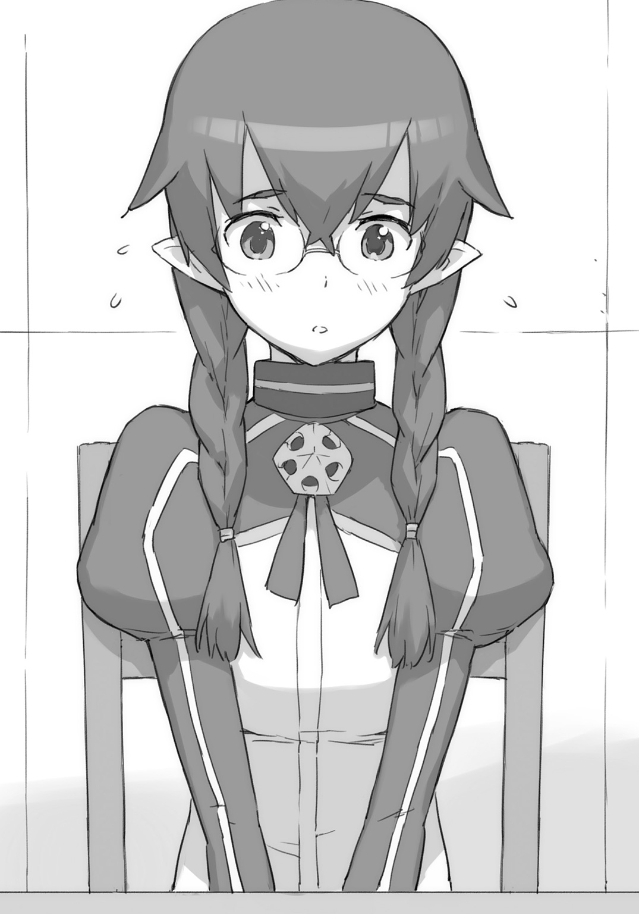
「あの。彼女。私の友達で......、相談したいことがあるからって、それで来てもらって......、ブレイド君のこと待っていたんです」
クレアが言う。地味めのその友達が、隣で、こくこくとうなずいている。クレアの友達といわれれば、たしかに納得できてしまう。なんとなく似たもの同士というか。性格が真反対にみえるイェシカよりも、納得しやすいというか。
「言えるわよ。当然でしょ。もちろん言えないわけはないわよ」
「おまえ。まだやってたのかよ」
「まだって......」
「もうその芸はいいから。いまはマリアの話だろ」
ブレイドはそう言った。アーネストは見てわかるほどに、ぷうと頰を膨らませた。
「俺。名前は覚えてなかったけど。彼女がどんな子かはわかってるぞ。なにが得意なのかとか」
「うそおっしゃい」
「ほんとだって」
以前、百八人を指揮してクーと戦った。全員の能力を知らないで指揮官は務まらない。
「マリアが得意なのは魔法だな。クーと戦ってから、みんな一次元上がったっぽいから、いまは精霊力くらい練れるんじゃないのか？」
彼女――マリアは、びっくりしたような顔をした。ずれた眼鏡を懸命に直す。
「補足事項としては――。欠点ってゆーか弱点っつーか、うっかりさんで、よく転んでて、ファイアボールを変なほうにぶん投げて、ええと、なんつーんだっけ？ そーゆーの？ ああそうだ。ドジっ子だ。ドジっ子！」
「ばか......」
アーネストがため息をもらす。
「え？ だめだった？」
「いえ。いいんです。私。ドジですから......」
彼女はそう言うと暗い笑顔を浮かべた。
「あああああ......。ごめん」
「いえ......」
しばらくうつむいていた彼女だったが――。ややあって、その顔を持ち上げた。
笑いの一つもない思い詰めた顔をブレイドに向けてくる。そして彼女は、その口を開いた。
「ブレイドさんにお願いがあるんです。もし私が自分で自分を抑え切れなくなったら、私のことを――殺してくれますか？」
「え？」
ブレイドは目をしばたたいた。なにかそんなようなことを、昔、誰かに言ったよーな覚えがある。「殺す」じゃなくて「斬る」だったが――。まあ意味的にも結果的にも同じことだが。
ブレイドは視線をアーネストに向けた。
じとー......っと、意味のこもった視線を、そっぽ向いてるアーネストの首筋のあたりに投げ続けていると、やがて圧力に耐えきれなくなったのか、アーネストは――。
「わたし......じゃ、ないわよ？ わたし言ってないわよ？ わたしがそれを話したのは、クレアとイェシカの二人だけで......」
「え？」
こんど声をあげたのはクレア。イェシカのほうは、ぺろっといたずらっぽく舌を出している。
「あ、あの......、ご、ごめんなさい。わたし。あの、つい......マリアにも話しちゃって」
「きっとそれ、もう、ガッコの全員知ってるわよ。アーネストが、のろけた話」
「のろけ――!? ちがうちがう！ ちがうから！ のろけてなんかいないから！ ブレイドがどれだけ頼もしかったか――それを言っただけだから！」
「それがのろけっていうものよねー」
イェシカが頰杖をついて、微笑ましい目でアーネストを愛でている。
「ちがうから！」
「それはどーでもいいから。――で、なんでだ？ もっと詳しく話してくれないか？」
変な話で盛り上がっているアーネストを切って捨てる。だいたい〝のろけ〟ってコトバの意味を知らない。よくわかんない。
気弱そうな彼女は、大声をあげて騒ぐアーネストのまえで、だいぶ恐縮して縮こまっていた。
カップを手の中に収めて、じっと我慢するように、うつむいている。
ブレイドは彼女をじっと見つめた。彼女が自発的に話しはじめてくれるまで、辛抱強く待った。待つのは得意だった。戦場では、半日で半月でも、平常心と戦意を保ったまま待つ事態も生じる。――いや。ここ戦場じゃないけど。
「あの......。誤解させちゃったみたいで、すいません。私、べつに殺して欲しいわけではなくて......、それはいざという時だけの話で......、つまり、その......。できれば制御できるようになりたいです。もしできるなら、そっちがいいです。ぜんぜんいいです」
眼鏡のガラス越しに、上目遣いで彼女は言ってきた。
そのガラスに度が入っていないことにブレイドが気がついた。きっと視力補正のための眼鏡ではなく、なんらかのマジックアイテムなのだろう。たぶん自分の魔力を抑えるためのアイテムで――。昔の知り合いで〝魔眼〟の持ち主が、なんでも魅了してしまわないように、そうしたものを付けていたことを思いだす。
「それでクレアに無理を言いました。この学園で一番の実力者であるブレイドさんに相談――」
「ちょっと」
アーネストが急に口を挟んだ。
「聞き捨てならないわよ。この学園の一番は――。私、アーネスト・フレイミングで――」
「まあまあ」
「どうどう」
「いいからいいから」
「ここは話を聞こうよ。マイロード」
「うんアンナが一番だよ。だから――ね」
アーネストは皆でよってたかって取り押さえられた。ちなみにイェシカ、クレイ、カシム、レナードときて、最後のクレアの仕打ちが、なぜだか一番堪えたようだった。
ブレイドは軽くうなずいて、彼女――マリアに先を促した。
「これまでは......、なんとかできていたんです。でもこのあいだから、なんだか体が変で......」
「みんなパワーアップしたもんな」
彼女を安心させるように、ブレイドはうなずいてみせた。
彼女一人だけに起きたことではない。皆、新しく身につけた技や力を試して仕方ないらしい。毎日のようにどこかで騒ぎが起きている。暴れるのは仮想空間でだけ――というルールを作ってはいるのだが、現実のほうでも騒ぎが絶えない。
「あの......、私......」
しばらく黙っていた彼女だったが、なにか秘密を白状するような顔で、ブレイドを見つめた。
「じつは......人じゃないんです」
「うん」
ブレイドはうなずいた。
「驚きませんね？」
「ハーフだろ？」
「わかるんですか？」
彼女のほうは驚いた顔だ。
「うーん......。まあ......。なんとなく」
ブレイドは彼女から魔獣の〝におい〟を感じていた。〝におい〟というのは物理的な意味合いではなく、決して、くんかくんかと嗅いでみたとか、そういうわけでもない。気配とかオーラとかそういったもののことである。気の質が違うというか。
昔の知り合いにはハーフの連中はわりといた。魔王側にはもっと多くいた。たくさん知っているから、ブレイドにはなんとなくわかるのだ。
「クーと戦った時にパワーアップしたんだろ。あっちこっち気脈が開いたり魔力回路が通っちまったり、強制的に目覚めさせられたおかげで、うまくコントロールできないんだな」
「ん？ 我か？ 我のおかげか？ では感謝するのだー。そして感謝は具体的には、あーんとやって示すのがよいのだー」
「えと......、はい。あーん......」
マリアは、クーに、あーんとやった。
「んー......」
ブレイドの皿からカツが一切れフォークに刺されて持ち去られる。彼女はフォークを置くと、ブレイドに向いた。
「気とか魔力とか......よく、わかりません。ずっと抑えて生きてきましたから」
「それが、もう抑えきれなくなった？」
ブレイドが訊くと、彼女は硬い表情で、こくりとうなずいた。
手にしたカップを包む手に力がこもっている。――と。
ぱきん。――と、音がした。カップが砕けた。中味が飛び散る。
「あ！ ごめんなさい！ ごめんなさい！ 本当にごめんなさい！ 割るつもりじゃないんです！ 怒ったわけでもないです！ 力加減間違えちゃうとこうなっちゃうんです！ ごめんなさいごめんなさい！」
彼女は何度も謝った。誰もそのぐらいのことを気にしたりしない。だが彼女は物凄く謝った。
「だいじょうぶよ。マリア。慌てなくていいから」
クレアが優しい声で言う。割れたカップの破片を拾って、こぼれた紅茶をクロスで拭う。
「ごめんなさい。ごめんなさい」
彼女はごめんなさいと繰り返すばかり。きっと彼女はいつも謝ってばかりなのだろう。ブレイドはふと、そんな確信を持った。
「マリアは下級クラスなんだよな」
「はい」
「なんで上級にあがってこないんだ？」
ブレイドはそう訊いた。
「え？ ......あのっ？」
「彼女。実技はさっぱりなのよ」
言葉を詰まらせている彼女のかわりに、アーネストが言う。
「学力のほうはけっこう良いから、それで実技が赤点なところをカバーして、かろうじて落第にならずに済んでいるってところね」
「は、はい......。そうなんです」
「でも、もうすこし頑張ってもらわないと。ここは英雄を育成するための場所であって、文官を育てる場所ではないんですからね」
ひさびさに女帝の貫禄を発揮して、アーネストが言う。マリアはかしこまってうなだれる。
「は、はい......。わかってます。落第......しません。私。ここを追い出されたら、行くところがないんです......」
彼女は膝の上に揃えた手を、ぎゅっと握りしめた。
「だから、なんで、わざわざ落第すれすれでやってるんだ？」
ブレイドはそう訊いてみた。落第したくないというなら、なおさらの話だ。
「えっ？」
「え？ なに？ どういうこと？」
アーネストとマリアと、両方がブレイドを向いた。
「ん？ 言った通りの意味だけど......。なんでわざわざ、実力を隠して下級クラスにいるのか」
「そんな......、隠してなんか......、いません」
「なんでわざわざ、赤点ぎりぎりでやってるんだ？」
「なに言ってるのよブレイド？ なんでそんなことがわかるの？」
「いや。見りゃわかるだろ？」
「わからないから訊いているの。彼女は......その、ごめんなさいね？ べつに悪気があって言うわけじゃないのよ？ ......その、ほら、ドジっ子でしょ？」
「ああ。よく転んでいるな」
「だから見ての通り。実技のほうはからっきしで――」
「さっきカップ割ったろ。握力で」
「ごめんなさいごめんなさい。弁償します。お給料から引いといてください」
「いや責めてるわけじゃないんだが......」
ブレイドは頭を搔いた。彼女は潜在能力でいえば、上級クラスにいてもおかしくない。いや。いないとおかしい。なんで皆にそのことがわからないのかと考えて――ああそうか。普通はわからないものなのか。――と、ようやくそこに思い至る。
相手の実力を見誤ると生きていられない。相手がどれだけ底力を残しているのか、わからないようでは、勇者などやっていられない。
ちがった。もう勇者じゃなかった。引退してた。一般人だった。
「マリアはわたしと同じローズウッド・ジュニア・スクールの出なんです」
友達をかばうように、クレアが言う。
「わたしずっと見てました。知ってました。マリアは一人で、ずっと頑張ってきていて――、ローズウッド校に上がれなかったらどうしようって、心配していて――。それで、なんとかここに入れて......」
友人の言葉に励まされたのか、マリアは、膝の上に揃えた手を、ぎゅっと握った。
「私。ここしか居場所がないんです」
思い詰めた顔で、そう言う。
「父も母もいません。帰る家もありません。頑張ります。なんでもします。だからお願いです」
ちらりと横目を向けると、アーネストがバツの悪そうな顔をしていた。成績トップの彼女には、底辺の人間の苦労は初耳なのだろう。ブレイドも初耳だ。
そうか。学園から追い出されたら、メシ食うのにも困るのか。それはお腹がすくな。
寝るところもないのか。父親も母親もいなくて自分一人で生きているのか。ならそうだよな。
「俺も同じだ」
「え？」
眼鏡の下で、マリアの目がぱちくりとまばたきを繰り返している。
「俺も同じだって。父親も母親もいないし。てゆうか。知らないし。俺の名前のブレイドっていうこの名前も、傭兵団に拾われたとき、俺が剣を抱きかかえてたからって、オヤジにつけてもらった名前で――って、ああ、オヤジっていっても父親じゃないぞ。傭兵団のみんながオヤジって呼んでただけで」
「あ......、私、お父さん知らないけど。お母さんはいました。もう......死んじゃいましたけど」
「そうか。お母さんは知ってるんだ。覚えてるんだ。よかったな」
「はい」
ブレイドは、笑った。彼女も眼鏡の下の目で、笑い返してきた。
「え？ ちょっちょっ？ なに見つめあっちゃってるの？ 共感しちゃってるの!?」
「ブレイド。私もよ。父も母も知らないわ」
「そうだったな」
ブレイドはソフィにうなずいた。
「ちょ――ちょっと！ ちょっと！ ちょおーっと！ 私だけ仲間はずれ!? なに！ なんなの!? そりゃお父様もお母様も生きていますけど――ッ！」
ブレイドは今度はアーネストに笑った。
彼女が――マリアがなぜ自分の力を抑えているのかはわからない。だが彼女のために、できることは、なんでもしようと思った。
○ＳＣＥＮＥ・Ⅲ 「試練場にて」
その日の放課後。ブレイドたちは第二試練場にやってきていた。自主練に励んでいる生徒たちもいたが、別の場所でやってもらうことにして、貸し切り状態を作りあげる。
「あの......？ なにをするんでしょう？」
「うん。ちょっと待ってな」
不安そうな顔でいるマリアにそう言った。
待つことしばし。コントロール・ルームのドアから、ソフィが出てきた。
「ソフィ。魔力障壁は？」
「言われた通り。最大にしてきたわ」
「ちょ......、魔力障壁、強度、最大って......？」
「ん。念のためだな」
アーネストにうなずいた。理論上は、英雄レベルの一撃でも耐えうるはずだ。
「――じゃなくて！ 全開なんてしたら！ 一時間いくらかかると思っているの！」
「国王のやつにツケとけよ。いつもいつも〝私が責任を取るッ！〟とか言ってんだから、責任取らせりゃいいんだよ」
「不敬よ。ブレイド」
「へいへい」
どうしてもあの国王に敬意を払う気になれない。長年の付き合いで、貸しもあるし借りもないとはいえない。だがいつもいつも無理難題を押しつけてられて、どう考えたって〝貸し〟のほうが多い。債務超過だ。
新たに作られたこの第二試練場は、障壁強度はこれまでの百倍になっているという。一時間全力で稼働させると、国家予算の一時間分ぐらいが吹き飛ぶはずだが、そのくらいでは、まだまだぜんぜん勘定が合わない。
ほかにも用意をしている。学園の実力者を上から順に呼んでいる。ブレイド自身のほかに、アーネスト、ソフィ、クー、レナード――の五人だ。
クレアは友人のことを心配していたが、ここは遠慮してもらった。
いまこの場にいるのは、上位クラスの古株だけだ。クーとの戦いで大幅なレベルアップするまえに、すでに上位クラスに君臨していたような連中だけだ。
ソフィが戻ってきたので、ブレイドはマリアに向き直った。
「さ――。これでいいな」
「あの......、なにが......、はじまるんでしょう？」
「ああ。言ってなかったっけ」
マリアは不安そうに立っている。自分が説明していなかったせいだと気がついて、ブレイドは申しわけなく思った。
「いや、ほら、力をわざわざ抑制しているわけだろ。その抑えこんでいる力を、いっぺん解放してみたらいいんじゃないかと思ってさ」
「だめ！ だめです！」
「だから準備したんだ。結界もメンバーも最強だ」
「はぁ？」
アーネストがじろっと視線を向けてくる。
「ブレイド、それ本気で言ってる？」
くびれた腰に手をあてて、これみよがしに、大きなため息をつきながら――。
「ばかじゃないの？」
「名案だと思ったんだけど」
「ばかでしょ」
「おまえんときにも、抑えて抑えて十何年も抑え続けて、でもそのやりかたじゃだめだったわけだろ。――で、はっちゃけて上手くいったんじゃないか？」
「そ、それは......、そうだけど......」
そもそもこのやりかたはアーネストをみて思いついたものだった。アーネストは《アスモデウス》をずっと抑えつけようとしていた。だが解放して融和を計ってからは、ずっと上手くやれているように見える。
「だめ......、です。絶対だめです。よくないです。やめたほうがいいと思います。解放しちゃだめなんです。一生閉じこめておかないとだめなんです」
「ね？ ブレイドの言うとおり、やってみましょうよ。ちょっとばかっぽい方法だけど。効果は実証済みだから」
「ばかゆーなー」
アーネストも納得いったのか、説得に回ってくれる。でも一言余計だ。
「俺がばかなら、おまえだってばかだろ」
「......」
「ばかの方法を採用するおまえがばーかー」
「斬るわよ」
びゅっと通り抜けていった剣をブレイドはひょいとかわした。
「斬ってからゆーな」
アーネストとそんなやりとりを交わしていると、マリアがちょっと笑った。
緊張が解けたようで、なによりだった。
「わかりました......。ブレイドさんを信じます。いざというときには......、お願いします」
彼女は念を押すように、そう言った。
「ああ。任された」
ブレイドはうなずいた。
「じゃあ......」
と、彼女はまず手首に手をやった。なにをするのかと思えば、手首に着けていたアクセサリーを外した。そして落とした。
どずぅん、とか、アリエナイ音が響いた。地面にめりこんでいた。
「これ一つで力が半分に抑えられます」
うえええっ!? それ筋力鍛えるために着けてたんじゃなくて!? 抑えるために着けてたの!?
それはブレイドにも予想外のことだった。
マリアはもう一方の手首からも手枷のようなアクセサリーを外した。
どずぅん。
両の足首からも一つずつ。
どずぅん。どずぅん。
――これで合計四つ。一個で二分の一にしていると言っていたから、四個では二の四乗――つまり一六分の一になっている計算だ。
さらにマリアは制服の襟首からネックレスを引っぱり出した。小さなロケットがついている。
「これがいちばん強い封印アイテムで――。これ一つで十分の一ぐらいになります」
「ま、待て――」
ブレイドは言いかけた。一六分の一でもけっこう大変なことなのに、そのさらに十倍――？
つまり、普段の彼女は、力を一六〇分の一に抑えていたということで――。
「え？」
彼女は声をあげた。ブレイドを見てくる。制止にいま気づいたという顔だ。
しかし間に合わなかった。彼女はもうロケットを首から外してしまっていた。隣に立つソフィが、手を伸ばして受け取るところだった。
最後の封印アイテム――銀のロケットが、ソフィの手に預けられる。
それと同時に――。ものすごい魔力が噴きあがった。
「きゃ！」
いちばん近くにいたソフィが吹き飛ばされてくる。ブレイドはその背中を抱きとめた。
「だいじょうぶか？」
「へいき。でも。ブレイド......、あれは？」
無感情なはずのソフィの目にも、ほんのわずかな畏怖がみえる。
「ああ......。やっぱり、だめ、だめ......、魔力が......、魔力が......、抑えられないです......」
噴き出しているのは魔力ばかりでなかった。彼女の苦手とするはずの武力方面のエネルギー――闘気も噴き出して暴れ回っている。
「だめ......、だめ......、わたし......いやっ！」
「抑えるな！」
ブレイドは怒鳴った。無理に抑えようとすれば、彼女が危険だった。
おそらく、彼女のはじめての〝覚醒〟のはずだ。出るものをすべて噴き出させなければ――最悪、破裂してしまいかねない。
「でも......！ でもっ――!? 彼女が......、彼女が......出るッ！」
「いいから！ 信じろ！」
ブレイドは叫んだ。なにを言っているのか。〝彼女〟とはいったいなんのことなのか。まるでわからない。わからなかったが、言うことは――ひとつだった。
「信じろ！ 俺を！ トモダチを！」
「でも――」
「なんとかする！ ――信じろ！」
「はいっ！」
よい返事だ。
彼女は――マリアは、もう、迷わなかった。力を抑えることなく、自分自身の意志によって解放する。ずっと抑え続けていた彼女のことだ。おそらく――これが初めての解放となるのだろう。その顔には恍惚とした表情が浮かんでいた。膨大な魔力と闘気の奔出に耐えきれず、服が千々に破けて飛散する。
吹きつけるエネルギー風のなかで、ブレイドは立っているのもやっとだった。
ソフィは近くにいる。身を低くして地に伏せて――床石に腕を突きこんで、吹き飛ばされないように耐えている。
他の者はレナードの張り渡した球形バリアの中にいた。アーネストがこちらに向けてなにかを叫んでいるが、轟音の中で、もちろん、なにも聞こえやしない。
「――ハーッハッハッハッハァ！」
なにも聞こえない轟音の中で、ブレイドは哄笑を聞いたような気がした。耳の錯覚か。いや錯覚などではなかった。
マリアが笑っていた。確かに笑っていた。
全裸の彼女は、エネルギーの噴き出す中心点に立っていた。三つ編みはとっくに解けきり、裸体をさらして長い黒髪を振り乱した彼女は、まったく違う別人に見えた。
表情だけの話ではない。姿形にも現実的な変化が起きていた。背中に蝙蝠のような黒い羽が出現している。
その姿は――。その姿は――、まるで――。
「魔王......」
ブレイドはつぶやいた。隣で踏んばるソフィが、一瞬、こちらに顔を向けてきたが――。まさかこの轟音の中、聞こえたわけでもないだろう。
黒き蝙蝠の羽を持つ魔族、《夜魔族》――。かつて魔王を輩出した強力な種族である。彼女、マリアは、その《夜魔族》とのハーフなのだった。
「出れた！ ついに出たぞ！ 我は自由なり！」
凜と響く声は、マリアと同じ声だったが、まったく別人の声として聞こえた。
ブレイドは知った。マリアの内側にいた者。マリアが必死になって押しとどめようとしていた、彼女の中に棲む存在、もうひとりの彼女が――表に現れたのだと。
「ひれ伏せ！ 畏れよ！ 崇めよ！ 悲鳴と怨嗟の声をもって、この魔王の誕生を祝うがよい！」
〝魔王〟を名乗った彼女は、腕を一振りした。エネルギー風がその裸身に巻きつき、黒く実体化してゆく。スレンダーな裸身をぴったりと覆う黒い衣装が現れた。なにもない〝無〟から、突如、出現した。
《物質化》――。上位魔族だけが可能とする技であった。
質量とエネルギーの関係には、E=mc 暴風はいつの間にか止んでいた。静寂が支配する。
（ブレイド......、あれは、魔王？）
ソフィが言った。隣にきて、ブレイドの耳にだけ聞こえるようにして小さな声で訊いてくる。
（いや――）
ブレイドはかぶりを振った。魔王は――ブレイドが戦った魔王は、そもそも男だった。目の前にいるのは、夜魔族ではあるものの――女で、少女で、そしてマリアであって――。
だが――。だが――。あの額に浮き出る紋様は――。魔王紋は――。
「みんな！ 全開で行くわよ！ ――出し惜しみしなさんな！」
アーネストの声が聞こえる。
「魔王をここから出すわけにはいかないわ！ ここで倒す！」
「おい！ ――アーネスト!! マリアだぞ!!」
抜刀したアーネストにブレイドは叫んだ。
「わかってるわよ！ 倒すつもりでやらなきゃ！ 止められるはずもないでしょ!!」
アーネストは相手の戦力を的確に見抜いていた。つまり――格上だと。
《アスモデウス》を構えるなり、炎を点火する。そして自ら《炎化》した。
炎の魔人モードとなり、先陣を切って、飛びこんでゆく。
《やあああぁぁぁ――っ!!》
――が。腕が一振りされた。たおやかな腕が一閃する。
炎化したアーネストはたやすく跳ね飛ばされた。空中の障壁にぶつかり、床で跳ね、何度かバウンドしてジグザグを描き、それでも勢いは止まらずに、試練場の端の壁を砕いて埋まった。
炎が消える。瓦礫に半分埋もれて、アーネストの裸身が横たわる。ぴくりとも動かない。
「マイロード！ ――よ、よくも!!」
レナードが激昂した。槍を構え、ロケットエンジンに点火して、穂先を白熱化させて、突進する。それはおそらくこの瞬間、学園最強の攻撃力だったろう。
――が。今度も〝魔王〟は片手で受け止めた。
「ふん。......こんなものか」
槍を摑んだその掌から、純粋魔力の爆発が起きた。こんなものは技でもなんでもない。単なる魔力の放出だ。槍とレナードの体はエネルギーの閃光のなかに消えた。
「十秒まかせて」
ソフィが向かう。限定勇者力の朧な輝きに全身が包まれている。
魔王に飛びかかり、その体にしがみつく。ソフィを中心に黒い球体が生まれる。自爆――ではなく、自分ごと超重力の檻のなかに相手を閉じ込めたのだ。
三重の黒い球殻が、二人を覆う。
大地はひび割れ、陥没し、最も内側の球殻の中では存在さえしていない。
「ほう。さすがに。これは動けんな」
魔王は事もなげにそう言った。
ソフィは言葉を発する余力もない。全身全霊で魔王にしがみつき、封じるだけで精一杯だ。
五秒が過ぎ、七秒が過ぎた。ソフィが人工勇者力を発生させていられる時間は、わずか十秒に過ぎない。
その十秒が――過ぎ去った。
ソフィはその場にまっすぐに落ちた。膝をつき、倒れる。魔王が手をかけるまでもない。
倒れたソフィをその場に残して、魔王は悠然と歩いてきた。
「あとはお前たちだけだな。お前たちを倒して、我は外に出るとしよう」
そう言って彼女は上を見上げた。通常の百倍強度で展開された魔力障壁のせいで、空間がすこし歪んでいる。玉虫色の幕が天井付近に存在しているように見える。
「一人と一匹か。――どちらから来る？」
「あんぎゃーす!!」
クーが吠えた。竜化はすでに終わっていた。そしてソフィの稼いでくれた十秒のおかげで、ドラゴン・ブレスの発射準備も整っている。
ドラゴンとなったクーの、喉の内側が灼熱していた。オレンジ色の高熱の輝きが、透けて見える。
「やれ」
ブレイドは言った。クーは従った。溜めに溜めたドラゴンの全力放射が、魔王を襲う。
――が。
またもや片手で止められた。
「熱いな」
魔王は言う。
うそをつけ。
魔王は炎の放射を受け止めるばかりでなく、握り潰した。大量の火焰を掌握して、圧縮する。高温、高圧となったブレスの炎は、もはや赤くなく、黄色でもなく、白色でさえなく――目に突き刺さるような、青い輝きを放っていた。
「返すぞ」
クーの吐いたすべての火焰が圧縮されたその超エネルギーのボールが――投げ返されてきた。
「あんぎゃー!!」
直撃を食らって、クーが悲鳴をあげる。焼けて焦げて行動不能となる。
ドラゴンがやられた。熱に耐性を持つドラゴンが自分の吐いた火焰でやられた。ありえないことがいま起きた。
やっべー。やっべー。やっべー。
ブレイドは困っていた。これはちょっと本格的にマズいかもー。
女医からは全盛期の三〇パーセントまで出していいと言われている。――あれ？ 出したら死ぬだったっけ？ 出していいんだっけ？ どっちだったっけ？
まあなんにせよ、マズいかもー。
「おまえ。ここから出たら、なにをするつもりだ？」
「うん？ そうだな......？」
額に魔王紋をくっきりと浮かべる少女は、考えこむ仕草をした。
「とりあえず。破壊だな。王都を破壊し尽くそう。うん。それは気持ちが良さそうだ」
やっぱだめだー！
このまま逃がす――という選択肢を、ブレイドは諦めた。こいつはやはり止めないと。
いま。ここで。
腰を低く落とす。構えに入る。
「お？ やるのか？」
全身を気で満たす。本来は体内に内在するだけの力が、あまりの高密度に、発光現象を伴って、体表からうねりはじめる。
「ほう？」
彼女は目を細めた。金色の瞳が面白そうに笑う。縦に割れた魔族の瞳孔が細まって、じっとブレイドに注がれる。
「はァッ！」
ブレイドは間合いを詰めた。必殺の一撃を放つ。
――が。
「これはなんのつもりだ？」
肩口に当たった剣を、彼女はその瞳で、じっと見る。
彼女は避けもしていない。まったくのノーガードでブレイドの一撃を受けただけだ。
ブレイドの手に痺れが広がる。まるで神秘金属の塊でも殴ったような手応えだった。
「これはどういう意味だ？ 峰打ちというやつか？」
ブレイドは鞘を付けたままの剣で斬りかかっていた。
やっぱりー。まったくー。効かないねー。
「はっ！ はっは――！ 気に入ったぞ！ おまえ！ この魔王を生け捕るつもりか!?」
ばれちゃった。
「真面目にやれ。――殺すぞ」
か細い腕が一振りされる。天蓋の魔力障壁に向けて投げつけられる。
そのまま吹っ飛ばされて行けば、アーネストの二の舞になるところだったが――ブレイドは空中を蹴りつけて、方向を転換した。
気を充分に高めていれば、空気を圧縮して足場にすることも可能だ。
現在の出力はおよそ一〇パーセント......。そのくらいの芸当までは行える。
「私はお前を殺すつもりでやるぞ。お前も私を殺すつもりでやらないと、次は死ぬぞ」
「こおおおおおおぉぉぉ......」
ブレイドは気を高めていった。圧縮された気をもとに、若干の魔力を編み込んで練り上げて、一次元上のエネルギー――〝闘気〟へと変換してゆく。
闘気で覆われた武器は鋼をバターのように断つようになる。その闘気で肉体をくまなく覆った。武装した。つまりブレイドの肉体は、鋼より上の魔法金属並の強度を持つようになる。
ブレイドはついに抜刀した。剣を鞘から抜き放った。ぎらり――と、白刃が光を跳ね返す。
現在の状態――。全盛期の、およそ二〇パーセント――。
これならば、どうか――？
「せえええいぃぃっ！」
ブレイドは踏みこむと同時に、大上段から斬りつけた。
縦に打ち下ろす。横に薙ぐ。普段はあまり使わないが、正統派剣術の技術をすべてぶつけた。
――が。
「いいぞ。いいぞ。どうした？ もう終わりなのか？」
ぜんぜん効いてない。むしろ愉しんでいらっしゃる。
彼女はブレイドの剣撃を素手で受け流していた。もちろん単なる素手ではなく、闘気によって覆われた手刀だから、名刀の強度と切れ味を持っていることになるのだが――。
しかし。なんてやつ。
武人タイプではなく、あきらかに魔法戦闘ベースと思われるのに、闘気まで使いこなす。肉弾戦のできる魔法使いとか反則すぎるだろ。
ブレイドの剣は数度斬り結んだだけで、ぼろぼろになっていた。支給品のなまくらでは、やっぱだめだ。
「どれ。次は私の番だな。受けてばかりではつまらん。私も攻撃をしないとな。......頼むぞ？ 一度で死んでくれるなよ？」
「うお――ちょ！ 待――!?」
直径数メートルぐらいの、極太のビームがやってきた。たぶん「サン・レイ」だったと思う。魔法使いの初心者が、ファイア・ボールの次くらいに習う初級者用攻撃魔法だ。光を集めて集束してレーザーにして打ち出すという技だが。
「ががががががががががががッ!!」
ブレイドは光圧に押されて、壁際まで吹き飛んだ。そのまま壁の魔力障壁とビームとの間に挟みこまれる。ビームを浴び続ける。全身に闘気を最大限に高めて最大防御を計っているが、闘気の消費と、練って補充する速度とが釣り合わない。このままでは闘気のほうが先に尽きる。
だがほんのすこし早く、ビームの奔流のほうが、先に終わりを告げた。
途方もない威力の初心者用魔法――サン・レイは打ち止めとなった。
あれだけの魔力の無駄遣いを、永遠に続けられる――というわけでもないらしい。
なるほど。上限はあるわけだ。物凄い魔力を持ってはいても、それは通常と桁が一つ二つ、あるいは三つ程度違うというだけで、使えば減る、撃てば疲れる、という通常の法則に従った存在ではあるようだ。
つまり倒せる相手だということだ。
ぼろぼろの消し炭状態で、床に倒れて地面を舐めるという、情けない姿勢にありながら、ブレイドはそんなことを考えていた。
「早く起きろ。倒れたふりをして回復しようとしているのが見え見えだぞ。それとも油断でも誘っているつもりか？ 私が油断するとでも？」
「バレたか」
仕方がないのでブレイドは起きあがった。剣を杖にして体を支えようとしたら、ぼろっと崩壊して金属粒子になってしまった。柄だけとなった剣は投げ捨てて、自分の足だけで、ふらふらとしながらも直立する。
「ほうら。やはり生きていたではないか」
彼女はニカっと笑った。あまりにいい笑顔をするもので、ちょっと笑顔に見入ってしまった。
「他の者は一撃で倒れたというのに。おまえ、一体、何者だ？」
彼女は訊く。
元勇者です。――とは言えず、ブレイドは黙っていた。
「ブレイド......」
近くからアーネストの声が聞こえた。アーネストのところまで飛ばされてしまっていた。
「寝てろ」
「使って......、これを......」
アーネストは剣を渡してきた。
再び気絶してしまう前に、ブレイドはアーネストの手から剣を受け取った。
《主以外に使われるのは甚だ不本意だがな。主の願いだ。限定契約ということにしてやろう》
握りしめると、思念が頭に直接響いてきた。やたらと尊大だ。なるほど。アーネストがいつも一人ツッコミをやっているのは、これか。
「うん。その武器は良いな。なんなら鎧を着用するまで待ってやろうか？ おまえが武器と鎧を手にすれば、そこそこ愉しめる戦いができそうだ」
「悪いが戦いを愉しむ趣味はない」
ブレイドは言った。勇者時代も、いつだって、愉しんで戦いをやったことはない。命を奪うことを愉しいと思ったことはない。ただの一度もない。
「こっちにも事情があってな。付き合ってやれないんだ。一撃で終わらせてもらうぞ」
「ほう。......一撃と？ いま一撃とそう申したか？」
「そうだ」
ブレイドは言い切った。彼女の目が、すうっと細まった。
「この魔王を、一撃で倒すと？」
「そうだ」
てゆうか。やるなら一撃でないと。長期戦でちまちまやっていられない。その理由がある。
女医の顔が、ふと頭に浮かんだ。ごめん。三〇パーセントは出すなって言われてたけど――。
ごめん。出さないと、ちょっと、これは、無理そうだ。
《求めに応じて交尾をしておけばよかったのではないか？》
剣が変なことを言う。「交尾」というのの意味が、イマイチわからなかったものの、なんか下世話なことを言われたことだけはわかった。
「このこのこの！」
ブレイドは剣をばしばしとぶっ叩いた。ああ。なるほど。アーネストがいつもやってるのは、つまりこれか。
ボケツッコミはそのくらいにして、ブレイドは技の準備に入った。
「はああああぁぁぁぁ......」
深く、深く、息を吸う。どこまでも吸う。
三〇パーセントまで出すのなら――あれが使える。
破竜系などという、誰でも使える――失礼、過酷な修行を積んで、死ぬような目に何度も何度も何度も遭えば、まあ大抵ほとんどの人間が使えるようになる普通の技とは、ちょっと違う。
右手に闘気。左手に精霊力。右半身と左半身とで、それぞれ真逆の種類のエネルギーを練った。それを――。
《や――やめろ。やめろっ。その技は!? その力はまずい！ 我でも耐えきれるかどうか！》
「四の五の騒ぐな。お前もアーネストの剣なら、根性で耐えろ」
剣を握る左右の手から、矛盾するエネルギーを二極同時に流しこむ。
魔法と剣技と同等に極めたブレイドだけの固有剣技――《聖魔剣》。聖なるものも魔なるものも、竜も巨人も神でさえも、ぶった切ることのできる――勇者剣技であった。
二種類のエネルギーを湛えた剣は、青と赤と二つの光を同時に発していた。
「ゆくぞ！」
準備が整うまで、律儀に待っていた相手に向けて、ブレイドは言った。
「うむ。参れ！」
相手との距離はかなりあったが――。この技には、関係がない。
「おおおおおおおお――!!」
ブレイドは剣を振るった。剣にこもったエネルギーを、一本の巨大な刃にして、相手に投げつけた。
相手はこれまでと同じように片手をかざした。
ブレイドの放ったエネルギーの刃は、相手の体に触れる前に、まず空中で止められた。彼女の発する魔力障壁に触れたのだ。
このレベルの存在ともなると、無意識かつ自動的に、魔力障壁を体のまわりに展開している。闘気だけ、あるいは精霊力だけであっても、これまでと同様、防がれていたことだろう。だが闘気に対して自動展開した魔力障壁は、闘気は止めるが精霊力に貫通される。数ミリも進まないうちに、すぐに精霊力に対する魔力障壁が展開してくるが、こんどはそれを闘気が貫通する。
「む？ むむむむ......、むむっ......!!」
力と力の押し合いが続いていた。魔王はすでに両手を使って防御にかかっている。
ブレイドが放ったエネルギー刃は、相手の数センチ手前で止められている。だが技の勢い自体は止まっていない。魔力障壁を破りきったなら、ほとんど減じていない威力が炸裂する。
一枚、また一枚と、障壁が剝がれる。いったい何層あるのかわからない。高位の魔道士でも五層か六層。英雄レベルでも二桁いくやつはそうそういない。そして魔王の場合には――。かつてブレイドが戦った本物の魔王の場合は――。
まあ――。彼女が自分で言うように、もし本物の魔王であるなら、それは無理というものだ。
しかし本物の魔王でなかったら――？ 普通の英雄レベル程度の魔族であったなら――？
ブレイド自身は、現在、放てる最大の技を放った余波で、もうとっくに膝をついている。体がガタガタだった。三〇パーセントを出してはならないという女医の話は本当だった。まあ彼女が診断を誤るはずがないのだが。
「ば、ばかな......、この私が......、この私が......、押し負けるなど!? 貴様は――!! 貴様は一体――ッ!? 何者だ――っ!?」
彼女の目がブレイドに向けられる。その目は驚愕に見開かれている。
「単なる一般人だ。一生徒だ。......いまはな」
障壁の最後の一枚が破られる。技の威力は、ほぼ五〇パーセントほどを残したまま――障壁に守られていない、生身の肉体に炸裂した。
「ぐあああああぁぁぁ――っ!?」
爆発が起きた。
瓦礫と土砂と土煙とが収まったあとには、倒れて動かない少女の姿があった。
死んではいない。――たぶん。
ぎりぎり手加減することができた。もし彼女が、もうほんのすこしでも強かったなら――手加減は無理だったかもしれない。
あれ......？
安心したら、がくりと力が抜けた。そのまま、ブレイドは前のめりに倒れていった。手で体を支えようとしたが、手も動かない。顔面が石の床と激突する。
ええと......？ なんだっけ......？
もやに覆われてゆく意識で、ブレイドは考えた。
女医は......、なんて言ってたっけ......？ えと......？ 三〇パーセントだったよな？ 三〇パーセント使うと......、なんだっけ？
使うと......、使うと......、死ぬ？
ブレイドの意識は、そのまま、闇にのまれていった。
○ＳＣＥＮＥ・Ⅳ 「医務室」
ブレイドは目を覚ました。
見覚えのある天井だった。薬品の匂いとともに、ここが医務室であることがわかる。
「俺......？」
視界の端にクレアが映るので、ブレイドは問いかけてみた。
「先生！ ブレイド君――気がつきました！」
カーテンがずばっと開いて、これまた見覚えのある女医の顔が視界に入ってきた。
柳眉を逆立てて、つかつかと歩いてきた彼女は、ブレイドの体を抱え起こすなり――。
「バカあぁ！」
ぎゅうっと抱きついてきた。
「え？ あれ？ 俺バカなの？ ......てゆうか。なんで俺。医務室なんかに......？」
「もう！ ばか！ ばか！ ばかぁっ！ またこんなに無茶して！ もう無茶しなくてよくなると思ったのに！ なんで貴方はいつもいつも私に心配かけるのよ！ もう泣かさないって！ 最後の時に言ったのに！ 言ったのに！ うそつき！」
女医の手でがくんがくん揺さぶられる。体中がぎしぎしと痛む。これは相当の無茶をしたあとに、よくある感じだ。
ブレイドはきょろきょろと周囲を見た。右と左に並ぶベッドに、アーネストとレナードとソフィとクーの姿があった。だいたい包帯でぐるぐる巻きにされていて点滴を受けている。
「ああ思いだした」
ブレイドは言った。自分がいまどこにいるのかわからなくなっていた。〝見当識〟まで失っていた理由が、ようやくわかった。本来なら、たとえ意識を失っていたとしても、メートル単位で体の場所がわかるのだが。この状況なら、そりゃ無理だ。
「貴方！ 死んでたんだからね！」
女医が言う。大人の女性だと思っていたのに、そこらの女の子みたいな顔をして泣いている。隣で立ち尽くして、ほろほろ泣いているクレアと見比べても、かわりがない感じ。頼りない泣き顔を披露している。
「ブレイド君。生き返ったって？」
イェシカが入ってきた。こちらは泣いていなくて、あっけらかんとした顔で言う。
「心臓止まっていたから、もう、びっくりしたわよー。センセがなんか機械を繫げて、いろいろやって、なんとか心臓動いて、ほんと、よかったわよー」
「ああ。世話をかけたみたいだな」
女医に蘇生させてもらったのは、一回や二回じゃない。
「リンゴ食べる？」
イェシカは椅子を引き寄せると、ナイフでリンゴを剝きはじめた。
「何日経った？」
ブレイドは訊いた。本当に〝見当識〟を失っていて、どのくらい気を失っていたのかさえわからない始末だ。こちらも本来なら秒単位でわかるはずなのだが......。
「まだ日が変わってないわよ？」
「皆は？」
「ぜんぜん軽症。ブレイド君に比べたらね。――まあ生きてるし。落ち着いたらクレアが復元するし」
復元で直るということは、単なる肉体の損傷のみということだ。ブレイドはほっとした。
イェシカの手からウサギさんに剝かれたリンゴをもらう。あーんと口に入れてもらう。
「......知らないから。本当に知らないんだから。......次に無理したら、もう知らないんだから」
まだ女医はぐずっている。子供っぽい仕草で、ごしごしと目元を拭っている。目元に塗ってあったものが流れ落ちて、えらいことになっている。
そういえば彼女と最初に出会ったとき、彼女はいまの自分たちと同じくらいの年齢だった。顔になにも塗らない十代の天才医学生で――。
「もう無茶はしないよ」
ブレイドは女医に言った。そうでもしないと泣き止まないと思った。
「ほんとよ？ 次に無茶したらもう知らないわよ？ 一五パーセントだしたら、こんど、また死んじゃうわよ？」
「さがった！」
「そりゃ下がるわよ！ あたりまえでしょ！」
女医に怒られる。だがブレイドは文句を言ったのではなくて――。じつは喜んでいたのだった。このまま下がっていけば、そのうち本当に一般人になれるのではなかろうか？ 何パーセントまで下がれば一般人になれる？ 三％か？ 一・五パーセントぐらいか？
「......彼女は？」
「無事よ」
別のカーテンが引かれる。寝台に縛りつけている少女は――彼女だった。覚醒したマリアだ。
「物凄い再生力ね。もうほとんど自然治癒しているわよ。意識が戻るにはもうしばらくかかりそうだけど」
「ずいぶん物々しいんだな」
ベッドが神鉄の鎖でぐるぐる巻きだ。手首と足首にも、彼女がもともと着けていた封印アイテムが戻っている。
「封印の効力があるものはすべて着けさせて、計算上は一六〇分の一に抑えてあるわ」
「それでどのくらいだ？」
「うちの上級クラスの生徒ぐらいかしら」
「なるほど」
ブレイドは言った。やはり彼女は本物の魔王ではない。もし本物の魔王であれば、一六〇で割り算した程度で、生徒レベルになるはずがない。
そもそも、どれだけ強くとも、力がどれだけあろうとも、それだけでは魔王とは呼べない。勇者が単なる最強の英雄でないのと同様、魔王も単なる最強の魔族というだけではない。勇者を勇者たらしめている《力》があるのと同じように、魔王を魔王たらしめている《力》があるのだ。その《力》なくしては、どれだけの力を持っていようと、魔王とは呼ばれない。
「何者なんだろうな。彼女」
「それは国王に訊いてみたら？ そもそも彼女をこの学校に入れたのは、国王なんだから」
国王と聞いて、ブレイドは、いやーな予感を覚えたのだった。
○ＳＣＥＮＥ・Ⅴ 「やっぱり国王」
翌日――。
「さて。どういうことなのか説明してもらおう」
全員が「退院」して顔を揃えてから、ブレイドたちは襲撃をかけるように学長室を訪れた。
「やあ。どうしたのかね。お揃いで」
「どうしたの、じゃねえぞ。――話してもらうぞ」
「なんのことかな？」
「彼女のことだ」
「彼女とは、誰かね？」
国王はそらとぼけていた。
昨夜、第二試練場であった騒ぎが、耳に届いていないはずがない。以前の百倍にまで強化した魔法障壁も、だいぶ過負荷がかかって、壊れる寸前になっていたという。その報告をこの男が受けていないはずがない。だいたい一時間近く全力稼働させていたから、国家予算一時間分が吹き飛んでいるはずだ。そういったすべてを腹に収めて、国王は知らんふりを決めこんでいる。腹芸はこいつの最も得意とするところであった。
「マリアのことだ。聞かせてもらうぞ」
ブレイドは学長室の床に、どっかと座りこんだ。聞かせてもらうまで帰らないという意思表示だ。ブレイドにならって、アーネストも、ソフィも、クーも、レナードも、クレア、イェシカ、クレイ、カシム――全員が座りこみを行う。あぐらをかいたり正座をしたり、女の子みたいに座ったり膝を抱えて座ったり、座り方は様々だったが、心は一つだ。
「どうして聞きたいのかね？」
変なことを聞いてくる。
「トモダチだからに決まってるじゃないか」
「――彼女は危険な存在だと思うのだがね。現在は拘束下に置いているわけだが、このまま拘束を続けて幽閉しておくべきだとは思わないかね？」
「ふざけんな。暴れるぞ」
ブレイドは言った。
「うむ。君ならばそう言うだろうと思っていたよ」
国王は破顔した。
ブレイドは騙されなかった。国王の知らないふりにも騙されない。もちろん笑顔にも騙されない。大陸中の国を相手に大ボラを吹いて騙しきった男である。言葉も態度も、だいたいほとんど、九八パーセントぐらいが「噓」で出来ていると思ってよい。
「本当のことを言え」
「なにから話すべきだろうね」
「まずおまえが――」
と、ブレイドはそこでくるっと横を向いた。アーネストの顔を見る。
「なに？」
「いや......」
あいつのことを「おまえ」呼ばわりすると、いつも「不敬よ！」と怒るのだが......。今日に限っては、怒らない。ようやくあいつの本性がわかってきたのかもしれない。
ブレイドは国王に顔を戻した。
「おまえがマリアのことを知ったのはいつだ？」
「彼女の生まれる前からとなるね。彼女の母親が監視対象となっていた。彼女が生まれてからは、監視対象は彼女に移った。ずっと監視は続けていたよ。干渉はせず、単なる監視に過ぎなかったがね。私が干渉したのはこれまでにわずか二度だ。一度目は、母親が亡くなったとき。そのままでは身よりのなくなった彼女は、孤児となってしまうところだったからね。ローズウッドのジュニア・スクールへと迎え入れた。二度目は本校への入学試験の時だったね。点数がちょっと足りず、放校となってしまうところを、私の権限で、ちょっとだけ点を足させてもらった。なに、ほんの数点ほどだよ」
アーネストが、ぎぬろ、と国王のことを睨んでいた。そういえばアーネストは、不正とズルとが、大っ嫌いなのだった。
「当然、マリアが何者か、知っているわけだな？」
「君たちよりは事情に通じているという自負はあるがね」
「彼女は何者なんだ？」
「実際に刃を合わせてみた、君たちの意見は？」
国王に問われて、アーネストが顔をあげた。
「凄く。強かった......です。悔しいですけど。まったくかないませんでした」
アーネストが言う。うつむいて唇を嚙んでいる。他の者もうつむくばかり。アーネストと同じように一撃で倒されたか、あるいは戦いの場にさえ立っていなかったかの、どちらかだった。
「うむ。アーネスト君。君は最近、変身できるようになって調子に乗っていたようだね。ちょうど良く、お灸を据えてもらえたのではないかな」
「そんなこと......、いえ、そうかもしれません」
殊勝にも、アーネストは言い返さずに言葉を呑みこんだ。
「ブレイド。――君の意見は？」
「劣化魔王って感じだったな」
そう答えた瞬間、ぎょっとしたような顔がブレイドに集まる。なにかと思えば――ああそうか。いまの台詞は、まるで魔王と戦ったことがあるような口ぶりだ。
「マリア君の母親は死去している。父親の行方と生死は不明であるものの、それが誰なのかは分かっている」
勿体をつけた口ぶりだ。だがブレイドは、質問を一秒たりとも躊躇わなかった。
「誰なんだ？」
「魔王と呼ばれた存在だね」
「なっ......!?」
絶句しているのは、アーネスト。あと――後ろを向いて確認してみれば、一名と一匹を除いて、全員が、口をあんぐりと半開きにしていた。ああやっぱりここは驚くところだったのか。たぶんそうだと思った。ほうらみろ正解だ。
ちなみに顔色を変えていない一名と一匹は、ソフィとクーだ。ソフィはいつものように無表情でクールきわまりない。クーは、かふーとあくびをしていて――ああそうか。そろそろおねむの時間だっけ。
「君は驚いてくれないのかな。ブレイド？」
「いやー。やっぱりなぁ、って感じだなー」
ブレイドはそう言った。
「ちょ――ブレイド、すこしは驚きなさいよ!? 魔王なのよ!? あの魔王っ！」
「いや。あの魔王もどの魔王も、魔王っていったら、一人しかいねーじゃん。あれで魔王の娘とかじゃなかったら、逆に驚くだろ？」
「そ、それは、そうだけど......」
「正確には元魔王だがね。その魔族と、人間の娘とのハーフが、マリアの正体だというわけだ」
「で、おまえは、その正体を知ったうえで、マリアをこの英雄養成校に入学させたわけか」
「な――なんてことしてるんですか！ 陛下！」
アーネストが叫ぶ。
「はっはっは」
「笑っていないで！ ご自分がなにをされたのかわかっていらっしゃるんですか！」
「あっはっは」
アーネストが追及する。ブレイドも応援したい気分だ。これに関しては、なにやってんだ、と問い質したいところであった。
魔王がやってきていたのだ。人間側の王都に。お忍びで。そして国王はそれを知っていたが手出しはしなかった。そして魔王の寵愛を受けた人間の娘が、子供を産み、その子供が育つのをじっと見守っていたわけだ。
「学校に入れたのは、なんでだ？」
「いや面白かろうと」
「面白くないですよ！ 反省してください！ 反省！」
アーネストが糾弾する。
「そもそも次世代の勇者を育成しようという無茶な趣旨の学校なのだよ。魔王の娘の一人や二人ぐらい通っていたっておかしくはないだろう。むしろそのほうが面白くはないかね？」
真実を耳にした気がした。国王が口にする言葉の九八パーセントは噓っぱちであるが、残り二パーセントは「真実」だ。それがこれだろうと、そう思った。「面白い」という理由で、本当にやりかねないのだ。この男は。
「君たちにも刺激になったのではないかね？」
「なりすぎです！ だいたいなにか問題が起きたらどうするんですか？ ブレイドなんて......、いっぺん......死んじゃったんですよ？」
「問題はない。すべての責任は私が取る」
「取れるわけないでしょう！」
「大丈夫だ」
国王は胸を張る。
「なにを根拠に！」
アーネストが問う。
「なぜなら彼は！ （もごもごふがっ！） ――だからだっ！」
ブレイドは飛びついて国王の口を塞いでいた。「もごもごふがっ！」のところは、咄嗟に口を塞いでいなかったら、「彼は勇者だからだ！」となっていたに違いない。大戦の最中、友軍を鼓舞するときの常套句だったが、いま口走られてはかなわない。だいたい勇者じゃない。もう一般人だ。全盛期の一五パーセントも出したら死んでしまう、本当に単なる一般人で。
「実際。大丈夫だったのだろう。彼がなんとかしただろう」
ドヤ顔になって、国王は言った。アーネストを含めて、誰も言い返すことはできなかった。
それは事実だったからだ。
○ＳＣＥＮＥ・Ⅵ 「魔王ちゃん学校に通う」
「おはよー♪」
「おはよう」
「おっはよー♡」
「おはよう」
「お、お、お、俺っ、お、お――」
「おはよう」
全身を黒ずくめで固めた美少女は、女子ばかりではなく、あきらかに挙動不審な男子にさえも挨拶を返している。ぽーっと頰を染めた男子が、その場に棒のように突っ立っていても、さして気にせず、すたすたと歩いてゆく。
「よ！ おはよ！」
そんな彼女にブレイドも声をかけた。学園に通うようになって、もう数日が経つ。彼女もすっかり馴染んで――。
「おはよう。勇――」
あらぬことを口走ってしまいそうになった彼女の口を、ずびっと近づいて、ずびっと押さえる。触れてしまった――そのくちびるの柔らかさに、どきっとする。
「頼むから。そういうこと口走るな」
「ふふふ。私はおまえの弱味を握ってしまったようだな。ふっ。よかろう。黙っておいてやろうではないか。このことに、もっと高い利用価値が出るまではな」
「頼むぞ。ほんとに」
「魔王と取引をした気分はどうだ？ 勇――ではなくて、ブレイド」
「だから頼むって。ほんとに」
黒ずくめの少女は薄く、そして妖しく、笑いを浮かべた。
「あとおまえ。魔王じゃねーだろ」
「ん。未来の確定事項として結果的に魔王となる。よって先払いで名乗っていてしまっても問題はあるまい」
「なんじゃそりゃ。どんな理屈だ」
少女はてくてくと先を歩いてゆく。その細い背中をブレイドは追いかける。
「おいマリア」
「あとマリアというのは、あちらのほうの名前だな。私とは別の人格だ」
「じゃあ、おまえはなんて呼べばいいんだよ」
「そうだな......」
と、彼女は足を止めて考えこむ。
「名前は......、ないな」
「ないのか」
「誰も私に名前を付けていないからな」
「そうなのか」
誰にも名前を付けてもらっていないのか。ブレイドだって「剣を抱えていたからブレイド」と傭兵団のオヤジに付けてもらっているのに。
「なのでやはり魔王と呼べ」
「おい。さっきのところに戻っちまったぞ。なら俺も繰り返せばいいのか？ ――おまえ。魔王じゃないじゃん」
「なら、魔王ちゃんとでも、なんとでも、呼べばよかろう」
「ちゃんを付ければいいってもんでもないだろう」
「なら魔王様と呼べ」
「ちゃんのがましだな」
そうして彼女の名前が決まった。「魔王ちゃん」だ。
○ＳＣＥＮＥ・Ⅶ 「魔王ちゃん大人気」
授業の合間にも「魔王ちゃん」は大人気だった。
みんな「ちゃん付け」で親しい感じに呼んでいる。ただし「魔王ちゃん」ではなく、「まおーちゃん」と聞こえる。
群がっているのは、おもに下級クラスだった生徒たち。マリアとはもともと知り合いだったし、「マリアの中に眠っていた第二人格」という説明はわかりやすかったようだ。
また魔王のほうも、長いことマリアの内側にいて、外界を覗き見ていたらしく、クラスメートの名前も知っていた。
「まおーちゃん。あたしのこと覚えてる？」
「エルサだな。得意なのは氷の魔法だが、しょっちゅう暴走させている」
「あったりー！」
皆が彼女と親しげにできるのは、あの暴力的なまでの戦闘力を目撃していないということもあるのだろう。上級クラスのおもだった面々は、ちょっと近づき難い表情で、教室の反対側の壁際で人垣を作っている。上級クラスともなると、彼女の潜在力がわかるのだろう。
一六〇分の一に封印されていても、のんびりと気怠げにしていても、びりびりと伝わってくるものがあるはずだ。なにしろ上級クラス平均値の百倍以上......。優に英雄レベルである。
「まおーちゃん。スカートかわいーよねー」
「これか？」
言われた彼女は、膝上の布地をつまんで、ぴろりとめくった。下着が見える。
男子がざわめく。クレイあたりは、直撃をくらって、のけぞっている。――かと思えば、鼻血まで流した。あのスカートぴらりは、物理的攻撃力を持つ技だったのか。ぎぬろ、と同じか。
ブレイド自身は、女の下着ないしは下半身に対して、興味を覚えたことは一度もない。ざわめく理由もノックアウトされる理由もまったくわからない。
「いまの私は力を一六〇分の一に抑えられて、単なる小娘だからな。学校に通えと言われれば通うさ。ひらひらしたものを着ろと言われれば着るさ。そんなところでは争うのはつまらないことだ。こんなものを着ようと着まいと、私が最強であることは、いささかも揺らぎはしない」
「とか言いつつ。かわいいの着たいだけなんだろ」
「む。そうでないと言い張っても良いのだが。偽りは王たるものの態度ではないな。本音を言おう。――じつはちょっと、ときめいておる。ひらひらはよいものだな」
「だよねー！」
下級クラスの女の子連中が会話にわりこんできた。なんか意気投合している。
「さ、さ、さ......最強はドラゴンなのじゃー！」
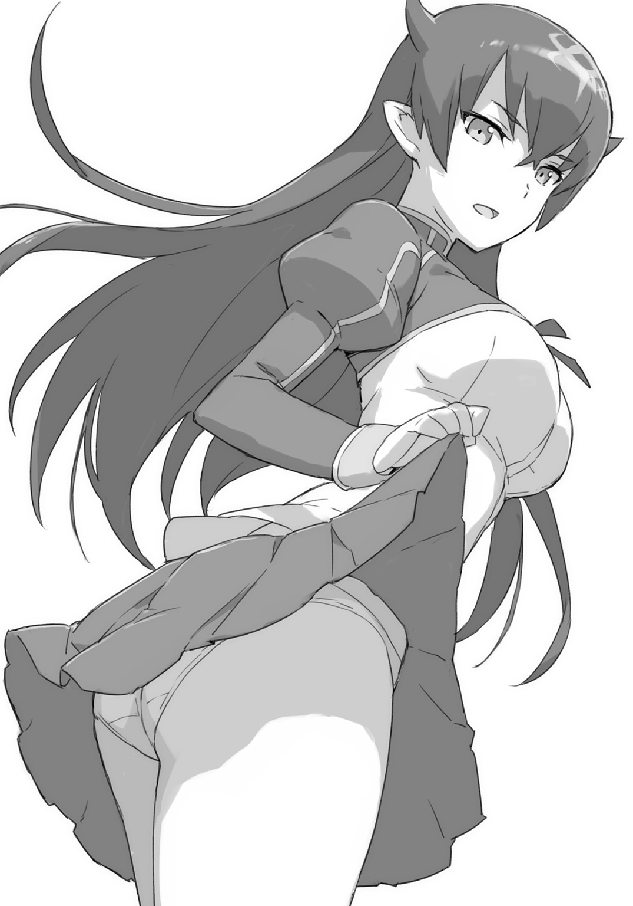
「なんだ？ 貴様？ 再戦が希望か？ ハンバーグにして食ってやろうか？」
「親さまー」
一睨みされただけで、最強生物ドラゴンは逃げ帰ってきた。ブレイドの後ろに隠れる。
「部屋で待ってろ」
クーの頭をぐりんぐりんやって、そう言った。
「親さま！ 我のかたきを取ってほしいのじゃー！」
「おま。負けるどころか死んだことになってるのか」
「勇――でなくてブレイドよ。やるのか？ 次やれば負けぬぞ？」
魔王はブレイドに向けて言ってきた。
あー、そうかもしれないなー。つぎは一五パーセント出したら死ぬって、釘を刺されている。ガン泣きされた。もう無理しないと約束させられた。女医に。
クーはブレイドの後ろに隠れて、イーッとやっている。それでも愛娘は意気地のあるほうだ。魔王と正対して戦って、ボコボコにされたメンバーのうちで、曲がりなりにも突っかかっていっているのは、クー一人で――。
「ちょっとマオ！ この子たちクラスに戻しなさいよ！」
――いいや。二人目もいたか。
アーネストが、ぎぬろ、と睨みながら叫んでいる。さすが女帝。フルボッコにされても怯えていない。
「我が呼んだのではないぞ。勝手に来ているのだ」
「ほら。貴方たちも帰りなさい。次の授業がはじまるわよ」
「えー、でもー......？」
女の子たちは魔王の傍を離れない。
「なあ。――マオってなんだ？」
ブレイドは聞いた。さっきアーネストは魔王のことを「マオ」と呼んでいた。
「愛称？ ――私が〝アンナ〟っていわれるのと同じよ。こういうのって、短くすればいいんでしょ？ だったら、魔王なら、マオでしょ」
「じゃあ俺の愛称は〝ブレ〟とか〝ブー〟になるのか？」
「なに？ 呼んで欲しいの？」
「カンベンしてくれ」
「うむ。我は王ゆえに寛大だからな。小娘がマオと呼ぶことを許してやろう」
「小娘ゆった！」
「マ、マ、マ......マイロード。あ、あまり怒らせないほうがいいんじゃないかなと......」
「下がってろヘタレ」
「ヘ、ヘタレ......」
レナードはがっくりと膝をついた。深刻なダメージを受けた。〝マイロード〟と憧憬を寄せる相手からヘタレ呼ばわりされては仕方がない。
「ソフィはどうなん？」
ブレイドはソフィのもとに、こそっと寄って、こそっと耳打ちしてみた。
「命令だから」
ソフィはぽつりと言った。
「現在の命令は魔王ちゃんと親交を深めること。命令だから、私は魔王ちゃんと仲良くするわ」
「魔王ちゃんって呼んでるのも、それ命令だからか？」
こくり。うなずきが返ってくる。
たしかに国王の采配なのだった。いま彼女が学園に通っているのも、ブレイドたちに混じって授業を受けているのも、すべて国王の采配なのだ。
ベッドにがんじがらめに縛り付けられて、何重にも封印をかませられていた魔王を解放したのは、国王だった。例によって「すべての責任は私が取る」の一言で、神鉄の封印鎖を断ち切ってしまった。
ブレイドが国王のことを、たった一つだけ信頼しているとしたら、それは〝人を見る目〟だ。それだけは確かだ。どんな大ボラ吹きだろうと、そこだけは確かなのだ。でなければ、あんな目つきの悪くて凶暴で動物みたいな言葉もろくに話せない剣技ばかり達者に育った三歳児のクソガキを、「勇者」として迎え入れたりしなかったろう。
その国王が言ったわけだ。彼女は学園に通うべきだ。――と。
講義の開始を告げるチャイムが鳴った。
「はい！ はい！ 帰る帰る！ はやくする！」
アーネストがぱんぱんと手を叩く。
女の子たちは廊下に駆けだしていった。「またねー！ まおーちゃん！」と黄色い声を引きずりながら消えてゆく。
指先だけをひらひらと振って見送って――魔王は、ブレイドに顔を向けた。
「なんだ。勇――ではなくて、ブレイド」
「おまえそれわざとやってるだろ」
ブレイドはため息をついた。
○ＳＣＥＮＥ・Ⅷ 「昼休みのテーブル」
昼休みが来た。
いつもの食堂。いつものテーブル。いつものアーネスト組のところに、もう一名追加だ。
もともと八人掛けのテーブルに十人が座る。クーはブレイドの膝の上が定位置なので実質九人だが、ちょっと窮屈な感じになっている。
「ね？ マオってさ？ マリアでいたころの記憶はあるわけよね？」
アーネストが訊いている。勝手に付けた愛称を当然のごとく使っている。
「違う人格だと言ったはずだ。マリアでいたのではなく、我は我、あいつはあいつだ」
「戦闘モードみたいなもんだろ」
ブレイドはそう言った。
「なによそれ？」
アーネストが首を傾げる。
ああ。そこからだったか。
「ええと......。戦闘時にブレない自分っつーか、明鏡止水の自分っつーか、目的に向かって真っ直ぐな、そーゆーヤツを作って、そいつに体を任せたりするだろ？」
「わかるひと......、いる？」
アーネストがテーブルの皆に顔を巡らせる。ソフィがちょっとだけうなずいたきりで、他の皆は、ぽかんとした顔をしている。
「ブレイド。わかんないわよ？」
「おまえだってビーストになるじゃん！ るるるるる、とか鳴いて、食欲に対してまっすぐになるじゃん！」
「なに言ってんのよ？」
アーネストは眉を寄せてそう言った。ビーストモードで暴走しているときのことは、記憶にないらしい。
クレアが指先をあげて発言をはじめる。
「あの......、そんなややこしく説明しなくても。単に二重人格でいいんじゃないんですか？」
「へ？」
「なに？」
ブレイドはアーネストと二人で、クレアに顔を向けた。
「物語でよく聞きますよ。......ねえ？」
クレアは皆に問う。皆のうなずきが返る。ただしソフィ以外。
「物語とかは、知らないから」
ソフィは首を横に振った。
「わた――私はっ！ 知ってるわよ！ も、物語ぐらい！ あ――、あたりまえでしょ！」
アーネストは胸を張っていばりんぼ。
「はっは――」
愉快そうな笑い声が響く。――魔王だった。
「わかりやすい女だな」
魔王はアーネストを笑った。
「だろ？」
「ちょ――!? なに!? いまの!? だろっ――って！ それなによ!? なにがわかりやすいっていうのよ！」
「はっは――」
魔王はさらに笑った。ひとしきり笑ったあとで、真顔に戻り――。
「我が二重人格かそうでないか。なんの関心もないな。我は我であり、他の何でもない。自己の実存に頭を悩ますのはヒトだけだ。我ら魔獣は自分が何者なのかということで、悩んだりはしない。我らの目的はただひとつ。強く、強く、強くあること。それだけだ」
魔王はそう言った。
そうだった。魔獣とはそうした存在だ。魔獣と多く刃を交わしたブレイドは、そのことを、よくわかっていたはずだった。
人の姿をしている魔獣とは、そうそう戦った事はないが、獣の姿をした魔獣とはよく戦った。魔界に行けば、野生の獣と同じ頻度で魔獣と出くわす。
相手が人の形をしているものだから、ついつい、そのことを忘れてしまっていた。
マリアは人の血と魔獣の血とが、半分ずつ混ざりあっている。いわば半魔獣というべき存在だ。マリアのほうの意識は完全に人間だった。だから魔王ちゃんのほうの意識は、完全に魔獣のものなのだろう。
人と魔獣の混血というのは珍しい存在だ。魔獣という存在は、たいていは人の形をしていない。クーみたいに例外的に人の姿に変化できるものか、もしくは夜魔族のように、最初から人の姿を取っている種族でなければ、人との混血は不可能だ。
なぜ人型でないと混血が不可能になるのかは、ブレイドにはよくわからない。実際にどうやって〝混血〟するのか。どうもその〝方法〟に関わってくるらしいのだが......。なんでも、夜、ベッドの中において行う方法で、血を混ぜるらしい。でもどうやって？
「おいそこのドラゴンの仔。そんなものを食っていても強くはならんぞ。魔獣ならば肉を食え」
「や......、野菜を食べないと、クレアが怒るのだー」
「えっ？ ええっ？ ドラゴンも......、野菜、食べたほうがいいんですよね？」
クレアの天然ボケの言葉に、皆は明るい笑顔になった。
○ＳＣＥＮＥ・Ⅸ 「月夜のデート」
ブレイドはクーを寝かしつけていた。
胸をぽんぽんとやってやる。すやすやと寝息が規則正しくなる。
ブレイドはもうすこし待った。こんこんと聞こえる。窓ガラスが鳴った。外側からノックされた。ちなみにノックがあるしばらく前からブレイドは気がついていた。ノックのかわりに大技でもぶっ放してきたなら、クーを抱えて逃げ出していたところだ。
だが相手は礼儀をわきまえてノックをしてきた。この部屋が三階であるということを除けば、なにもおかしいことはない。
ブレイドはそっとベッドを抜け出すと、窓を開けた。
「よう」
深夜の来訪者に、そう声をかけた。
「おはよう」
「ちがうだろ」
「そうか。夜は、こんばんは、と、言うのであったな」
少女はぺろりと舌を出した。
「おまえな。ここ三階だぞ」
「そうか。地べたを這いずる者たちにとって〝高さ〟は無視できないファクターであったな」
背中の羽をゆるやかに打ち振るい、彼女は空中で静止していた。
それは一見、華奢な羽に見えているが、実際には防御に使えるぐらい強靱だ。そして魔獣の超絶的な筋力が、差し渡し数メートルの羽ばたきを支えている。
「――で。なんの用なんだ？ こんな夜中に？」
「おまえに用があって来た」
「そりゃ用がなければ来ないわな。こんな夜中に。まさか殺しに来たとか言うなよ？」
「うむ。殺す。――ああ。いまではない。そのうち殺す。だがいまは違う用だ。ええと。こういうのは、なんと言うのだっけ？」
「俺に訊くか」
「で、で、で――」
「で？」
「そうだ。デートだった。エルサがそう言っていた。男を誘うことをデートというのだと」
「夜中だが」
ブレイドは知っていた。デートというのは、日曜の朝――一〇〇〇に待ち合わせを行い、その時点よりブートストラップされる一連のプロセスのことをいう。いまは夜中なので当然デートは行えない。
「女が誘っているのだぞ。男はほいほいと鼻の下を伸ばしてついて来るのが筋というものだ」
襟首を摑まれた。そのまま窓の外に引きずり出されて――。
「おっ、おい」
ばっさばっさと羽がはばたく。二人分の体重を乗せて上昇してゆく。
たどりついた先は屋根の上だった。
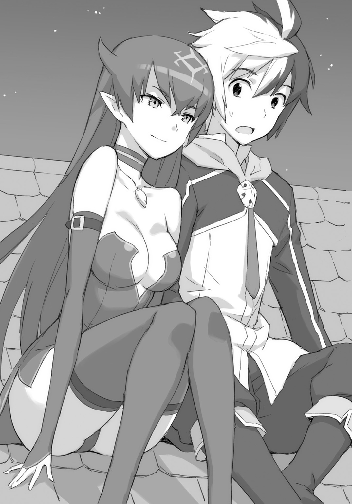
クーもお気に入りの一番の特等席で、二人並んで斜めの斜面に腰を下ろす。
「ほらみろ。勇者。月が綺麗だぞ」
「だからその勇者っての、やめろっつーの」
必要以上にぴったりと体をくっつけてくる魔王から、すこし距離を取った。
なんでこいつ。こんなくっついてくんの？
「なぜだ？ 勇者よ。ここには誰もいないぞ。聞かれなければ構いはしないのだろう？」
「俺はもう勇者じゃないからな。勇者って呼ぶのは間違いなんだ。間違いだから正しているだけだぞ。なにか文句あんのか」
「うるさいぞ勇者。静かに月も鑑賞できんのか」
「月なんか夜だったらいつでも浮かんでるだろ」
「我は月を見るのは、これが初めてだ。マリアはいつも下ばかり向いて歩いていたからな」
ブレイドは静かにすることにした。
「そういやおまえって、いくつなんだよ？ あんまり物を知らないみたいだし」
ブレイドも一般常識には疎いほうだが。それでもさすがに「おはよう」と「こんばんは」を間違えたりはしない。戦場育ちの戦場生まれであっても、朝の挨拶くらいは――戦の最中でないときには、まあ、たまには行う。
こいつはマリアの内側に棲みついて、外界を眺めていたという。その期間が何年くらいあるのかと、ブレイドはそう聞いたわけだった。
「我が自己の存在を意識したのは、五年ほど前のことだったな」
「五年？ ......って、おまえ、五歳？」
「魔獣に歳など関係あるまい。歳と戦闘力になにか比例関係でもあるのか？」
「そういやそうだ」
「だがレディとしては、いまのリアクションはお子様扱いされたようで気に入らんぞ」
「おまえレディだったの？」
「見ての通りだが」
彼女は月光に肢体をさらした。見せつけるように胸を張る。アーネスト未満ソフィ以上の形のよい膨らみが、青い月光になだらかに照らし出される。
いま彼女が着ているのは、登校時に着ている学園の制服ではなく、最初に覚醒したときに身にまとっていた薄衣だ。
こいつ。力を一六〇分の一に制限されても《物質化》ができるのか――。
「――で、何の用なんだ？」
月光に映える魔王のからだを見つめながら、ブレイドは話を切り出した。まさか本当に月を見に来たというわけでもあるまい。
「デートだと、さっき言ったが？」
本気かよ？ ブレイドは彼女の顔をじっと見つめ返した。
「私がこの学園に留まっているのは、勇者、貴様がいるからだ」
「学園生活をエンジョイしているように見えたが」
「うむ。それもある。ひらひらはよいものだな。甘いものもよいものだな。だが魔獣はいつでもそれらを捨てられる。強さを求める心こそが魔獣の本質。強さ以外の価値は、魔獣の心を微塵も揺らさない」
「じつはここにお菓子があるのだが」
ブレイドはポケットから焼き菓子を取り出した。アーネストの部屋にいくとお菓子がいつもたくさんある。一個くすねてきていた。
「よこせ」
黄金色によく焼けた、ふわふわのお菓子にぱくつく様を見ていると――本当に、単なる小娘なのだが。
「じつは我は迷っておってな。なぜおまえに固執しているのか、自分でもわからん。おまえは先代魔王と戦った後遺症で、本来の力を発揮できなくなっている。戻る見込みもない。それどころか、このあいだ我と戦ってから、さらにパワーダウンしている」
「次は一五パーセントで死ぬって女医から脅されてるよ」
「我が前回負けたのは、油断をしていたからだ。いや。はじめて外界に出て、自由を得て、力をふるう快楽に溺れていたというべきか。だが我は同じ過ちを二度と犯すことはないし、おまえはパワーダウンしてしまっている。したがって次に戦えば、我が勝つことは確実だ。つまりおまえは殺す価値もない相手だ」
「言ってくれるな」
「論理的に言っておまえに価値はない。戦う価値もない。だが我は決めてしまっているのだ。ここを立ち去るのは、おまえを殺してからにすると、そう決めている」
「物騒な話だな」
「自分の心がわからぬのはよくないことだからな。我は考えてみた。そして導きだした一つの仮説が、我はおまえに惹かれているのではないかということだ」
「は？」
なんか話が変な方向に行ってないか？
「我は魔獣であるが、半分は人だな。そしてこれは図書館で読んだのだが、魔獣でも我の種族である夜魔族は、伴侶を求め〝番い〟を作る種族なのだという。つまり我は、一度は我のことを倒したおまえのことを、強者と認め、伴侶として欲してしまっているのではないかと」
「は？」
やっぱ話が変な方向に突っ走っている。
「あくまで仮説だ。一度交尾をしてみればはっきりすると思うのだが。どうだろう？」
魔王は体を近づけてくる。ブレイドの手の上に、自分の手を重ねてくる。魔王のくせに、手が柔らかい。
「俺。そーゆーの、よくわかんねーんだけど」
ブレイドは困惑した。女医からもよく「交尾」とやらを迫られる。その度に逃げ出している。まさか魔王から「求愛」とかゆーものをされるとは。
「我にもよくわからんぞ。五歳をなめるな。それにはっきり言って我が一番困惑している。魔獣の我がこんな感情を抱くなど。迷惑だ」
「いまから試練場に行って、どっちが強いか――っていうほうにしねえ？ そっちのがお互いカンタンなんじゃね？」
「おまえはポンコツだし。我はこれを外せぬし」
と、魔王は自分の胸元を示した。ペンダントが掛かっている。
「これだけはどうしても外せぬのだ。我の中に残存するマリアの意識が、抵抗するらしい。我が全ての力を出すことを、まだ残存するマリアの意識が邪魔している」
なるほど。よく見れば、彼女は手枷足枷をつけていなかった。いま残っているのは、力を一〇分の一に抑制するというペンダントだけだ。ええと。そうするとつまり、三〇パーセントで相打ちっぽかった相手が、現在一〇分の一になっているわけだから、三パーセントほどで勝てる計算か。いまは一五パーセント以内だから、余裕だな。超余裕。
「おまえさ。ずっとここにいるっていうのはどうなんだ？ けっこう馴染んでるだろ」
「ないな。我は魔獣だ。魔獣の求めるものは一つだ。強くなり、強くなり、強くなることだ」
まあ答えはわかっていた。ブレイドが、昔、対話した魔獣たちも、皆、同じことを言った。人にとって「強くなること」は、なにかを達成するための手段でしかない。
だが魔獣にとっては、そのこと自体が「目的」となっている。
それに対して、人の目的は「幸せになること」である。「強さ」は幸せを得るためにいくつか存在する手段のうちの、ほんの一つでしかない。それは目的とはなりえない。
目的の違う両者は、対話と会話ができて、意思疎通が行えたとしても、結局は決別に至る。絶対に相容れない存在なのだ。
しばらく無言が続く。
ブレイドは、ふと気がついた。
あれ？ 俺？ これ？ 〝フッた〟とかゆーやつになってね？ 「求愛」とかゆーのをされて、拒絶したから、世間一般でいうところの〝フッた〟の状態じゃね？ よくわからんが。
まあそれをいうなら、「ずっとここにいろ」と言って拒絶されたわけだから、ブレイドも〝フラれた〟ことになるわけだが。
「我を生み出したのは、マリアの意識だと思う」
魔王は、ぽつりとそう言った。
「あれは弱い女でな。自分の不幸を嘆いて生きておった。母親との人間界での生活では、常に正体を隠していなければならなかったからな。うっかり羽を生やして、石をもって追われたこともあったぞ」
「魔獣は畏れられてるからな」
ブレイドはそう言った。街に住む者の多くは、実際に魔獣を見たことがない。話したこともない。話せば、意外と気さくなやつらだとわかるのだが......。
まあ魔獣と話をするためには、彼らの〝試練〟を受けて認められなくてはならないが......。魔獣の試練はひどくシンプルで、つまり、「強さを示せ」というものだ。勇者の得意分野だ。
「母は父のことを愛しておってな。父の素晴らしさをよく語って聞かせるのだが、あいつは信じることができなかった。父は母を愛していなかったのではないか。愛していたのなら、なぜ、人間界などに置き去りにしたのか。自分たちが苦しんでいるのは、父のせいではないのか。父の正体は汚らわしく欲望にまみれた魔物で、人間の女を毒牙にかけて、殺す価値もないから捨て置いただけなのではないか。そういう深く重たい疑惑が、あやつの中で育っておった」
魔獣の娘の語る身の上話を、ブレイドはじっと聞いていた。
こんな夜、こんな月の下では、魔獣だって身の上話を語りたくこともあるさ――。
「あやつは。あんな善良そうな、おとなしそうな顔を外には向けておるがな。心の底ではけっこう凶暴でな。自分たちを虐げ、差別する相手を憎み、ぶち殺してやりたいと思っていたよ」
「人間はどっちも持っているんだ。それで普通だ。魔獣みたいにシンプルライフじゃないんだ」
マリアの名誉のために、ブレイドはそう言った。まるでマリアが善人の皮をかぶった悪女みたいに言われている。マリアが悪女だったら、クレアあたりも毒婦ってことになってしまう。
「力を、力を、力を――そんな叫び声が、我を生んだのかもしれんな。我が〝意識〟を得たのは、あやつの母親が死んだときだった」
魔王は語る。みずからの誕生についても情報をもらす。
「母親が死に、もう誰も守ってくれるものがいなくなり、自分自身を守るために生まれたのが――我という存在だ。肉体は共有されておるからな。我もあやつの生存が脅かされるのは困る。そういうときには、すこしは手伝ってやったぞ」
ずいぶんな人生だなぁ。ブレイドが知る限り、一般人の生活というものは、「生存が脅かされる」ようなことは、まずないはずなのだが......。
「おまえたちの望みはわかっている。あやつを表に出して、我を再び内側に封じこめたいのだろう。あるいは我を完全に消滅させるか......」
いくつか検討されたプランのなかに、たしかにそれはあった。だが次善のプランＢというやつだ。ブレイドが提案して、皆も支持してくれたプランは、もっと他にあって――。
「だが無駄だろう。あやつは心の奥底に引きこもっている。真実を知るのが怖いのだ。自分は望まれない子であったと知るのが怖いのだ。このまま我に肉体も人生もすべてを明け渡して、引きこもり続けていようと思っている」
なるほど。いまそうなっていたのか。あんまり心の強い子にみえなかったもんなー。
「あやつ――第一人格と呼んでおこうか。あれは人間の側の性質を色濃く受け継いでいる。弱い人間そのものだ。そして我――第二人格と呼ぼうか。こちらは魔獣の性質を色濃く受け継いでおる。強き魔獣そのものだ」
そうなんだよなー、とブレイドは思った。
魔王の思考形態は魔獣そのものだ。トモダチのできる前のクーにもそういうところがあった。
魔獣と――話のできるほど強い魔獣と、たくさん話をしたことのあるブレイドにはそれがわかっていた。魔獣というのは、弱い頃は言葉も解さず獣並の知能しか持っていないが、強くなるに従って知能も上がってゆく。人間でいえばおよそ英雄レベルの強さに達したあたりで、言葉を解するようになる。そして古老連中――最強の魔獣ともなると、人類を凌駕する知性を持つに至る。
魔獣の精神というのは、傲岸不遜。恐れを知らず恐怖を持たず。強さ以外の価値観を理解せず。会話もできて意思疎通もはかれるが、その精神はやはり異質なのだ。
特に人間と異なるところは、自分が倒されることと負けることをなんとも思っていないところである。「弱い者が強いものに負けるのは当然」と、ブレイドに倒されるときにも、いい顔をして逝くのだ。あいつらは。
「おまえだからだぞ。我がこんなことまで話すのは」
見上げていた月から、顔をブレイドに向けて――魔王は言った。
「おまえはどちらかといえば、人よりも我らに近いな。そういうところも、我は好きだぞ」
「それ、もう終わっただろ」
さっきフッて終わったはずだ。そしてブレイドのほうもフラれたわけだが。
「勇者。ひとつ訊いてもいいか？」
「だからその勇者っての、やめ」
「おまえが勇者でないのなら、我も魔王ではないということになってしまうのだが」
「だから魔王じゃねーじゃん」
「《魔王力》のことを言っておるのか？ ふむ。あんなものは、いつか身につけてやる。先代魔王に使えたのだ。我が使えぬ道理はあるまい」
「いやそれ理屈がむちゃくちゃだけど」
「いいから。ひとつ訊かせろ。――勇者」
「なんだよ」
間近に迫る顔から、ブレイドは距離を取った。くちびるだけは、だめなのだ。どきどきしてしまうのだ。
そのくちびるが動く。言葉を紡ぐ。
「おまえ......、星の自転を、止められるか？」
「は？」
ブレイドは、彼女の顔をじっと見つめた。
「さあ、やってみなければわからないが......、たぶん」
だがそれは過去の話だ。ブレイドがまだ《勇者力》を持っていた頃の話だ。
「残念だな。その力があるかぎり、我らと人とは、決して相容れないだろうさ」
魔王は――いずれ本物の魔王になると宣言した少女は、そう言うのだった。
○ＳＣＥＮＥ・Ⅹ 「イライザ・マクスウェルの見解」
数日は、表面上、何事もなく経過した。
魔王は平穏に学園生活を満喫しているように見えた。友人知人も、ますます増えてゆくように見えた。
そんな、ある日のこと――。食堂にて、主だった面々が集まっていた。
「調べてみた結果、どうしても、あのアイテムに封印機能があるとは考えられないんです。ええ。はい。断定しましょう。このわたくし――イライザ・マクスウェルの見識にかけまして、あれはそういった類のものではありませんね」
きらり、と眼鏡を光らせて、その彼女は、そう断言した。
彼女は研究部志望の女の子だ。アイテムや魔法に関して、そこらの教授よりも知識を持っている。その彼女に、魔王が唯一身につけている封印アイテムであるペンダントを調べてもらっていたのだが――。
「そうか。封印アイテムじゃなかったわけか......」
「ええはい。絶対です。確実です。もし間違っていたら――わたくし、腹を切る所存です」
「いや。切らなくていいから」
クレアの友人でありマリアの友人でもある彼女は、どこかノリが変だった。眼鏡友達でもある彼女は、マリアを元に戻すために色々と研究を続けてくれていた。
学園の水面下で「マリアを元に戻そう委員会」が活動している。
「だが我はこのアイテムに確かに制限を受けているのだが？」
首のネックレスをいじりながら、魔王が言う。「マリアを元に戻そう委員会」の「特別顧問」となって協力してくれているのが、当の魔王本人なのだった。
いかにして自分を消滅させるか、あるいは再び精神内部に閉じこめるか、そういった算段をしている相手に、全面的にアドバイスをしている。
魔獣という存在は、まったく、おかしなものである。
魔王的にいえば、いかなる手段、いかなる策略、いかなる弱点を突かれようと、倒されてしまうようであれば、それは〝弱い〟というだけのことで、まったく全然なにひとつ困らないのだという。
まあそういった考えは、ブレイドにはわからなくもない。一般には理解されないかもしれないが......。
ブレイドも、昔、修業時代に、とある魔獣の偉大なる古老のところに一ヶ月ほど居候したことがあった。「どうすれば倒せるか」を、当の本人と一緒に考え抜いたこともあった。そのおかげでえらく強くなれたのだが......。結局、「師匠」と呼ばせてもらえることはなかった。
「あ。――そうだブレイドさん。『超生物討伐委員会』のほうも、明日、会合あるんで、顧問として、ご出席よろしくお願いします」
イライザが言う。
「誰が顧問だ。あと超生物はやめろ」
ブレイドは「ブレイドに勝つぞ！」を合い言葉にしている研究委員会に顧問として出席することになっている。ちなみに会長はレナードだ。メンバーにはアーネストもいたりする。
まあブレイドも異存はない。いかなる状況、いかなる奸計にはめられようとも、それで負けてしまうようでは、やはりそれは負けだろう。
魔獣ではないが、それは勇者に課せられた〝ルール〟だった。
たとえば――。七日七晩不眠不休で飲まず食わずで、さらに罠にはめられて、数百の精鋭相手に、武器も防具も壊れて、徒手空拳で戦うはめになっても、その程度で倒されてしまうようでは、勇者は務まらない。
もう勇者じゃないんだけど。あともう勇者じゃないから、負けてもべつにまったくなにひとつ構わないんだけど。自分が負けたら人類が滅ぶわけでなし。
ああ。一般人サイコー。
「――で。封印アイテムでないなら、なんなんだ？」
ブレイドはイライザに訊いた。
「ええ。封印アイテムでこそありませんでしたが、なんらかのマジックアイテムであることは確かでした。それで――。解析してみた、その結果なのですが――」
話が核心に入ったところで、彼女は急に顔を横に向けた。手をぶんぶんと振りたくって――。
「すいませーん！ マダムーっ！ ケーキお願いできますかー！ ケーキ！ ケーキ！」
食堂のオバちゃんにケーキを頼んでいる。
「私もっ！ 私もっ！」
アーネストが鼻息を荒くして注文を増やす。炎の魔人化によるダイエット法を発見してからというもの、アーネストは「食」に関して、一切迷わなくなった。
他の女の子たちの手も、みるみるうちに上がってゆく。魔王も手を挙げている。こいつも女の子のうちだった!?
「――すいません。わたくし。高度な思考のために脳が多量の糖分を必要とする体質でして」
眼鏡をついっと持ち上げながら、イライザが言う。
「わ！ わたしも！ 炎の魔人化するために、カロリーを蓄えておかなくちゃならないんだから！ べつに食べたくて食べてるわけじゃないのよ？ ないんだからねっ！」
アーネストもなんか言ってる。
ケーキとお茶が出回るまで待って、それから話が再開される。
「テクノロジーの形態が違うので完全に解析できたわけではないのですが、ある種の魔法装置、具体的には記録装置だと推定されます」
「記録？」
「メッセージキューブの類ですね。これまた推測ではあるのですが、個人的なメッセージかもしれませんね。そのペンダントを贈った人からのものでしょう」
「マリアの記憶によれば、これは死んだ母の形見だそうだ」
「入っているのはおそらく映像の類です。再生方法もわかりますが。いま再生しますか？」
イライザは眼鏡の奥の目を細めて訊ねてきた。
ブレイドは目線で魔王に訊ねた。
「我はいまこの場でも、まったくかまわんが......。すこし時間を置いたほうが良さそうだな」
魔王はそう言った。
皆に対する配慮ができるとは。すこし驚きだった。
○ＳＣＥＮＥ・Ⅺ 「メッセージ」
時間を置いて、深夜――。
ブレイドの部屋に、主だった面々が再び集まった。
「もう。いいのか？」
ブレイドは魔王に問うた。
「ん。体を清めてきたぞ。あと〝お別れ〟とやらも、済ませてきたぞ」
アーネストもそうだったが、なぜ女というものは、大事の前に体を洗ってくるのだ？ てゆうか。魔王も女だったのか。
あとやはり魔王にも、これが〝大事〟であることはわかっていたらしい。〝お別れ〟が必要になるかもしれないと、わかっていたわけだ。そしてさらに付け加えるなら、〝お別れ〟は自分には必要ないが、人間の友人にとっては必要なものだということも――。
「でははじめましょうか」
イライザが言う。ブレイドたちは、揃ってうなずいた。
「最初に言っておきますが。ここに入っているであろう記録は、魔王を倒し、マリアを救い出すために有用なものであると思われます」
「ふむ。それは楽しみだな」
魔王は言った。ブレイドは魔獣の古老を思いだしていた。あの強かった古老も同じことを言った。「楽しみだ」と。そしてブレイドが古老とともに編み出した技で――。
「貴方とは友達になれたかもしれません。――マリアと引き替えでなかったら」
「案ずるな。我とマリアはどちらかが消える運命らしい。そして残ったほうが、おまえの友となるだろう」
明日の天気を話すぐらいの気軽さで、魔王は言った。これはポーズではない。魔獣は自分の生死を、本当に、明日の天気ぐらいに考えているのだ。
イライザは睫を伏せた。感傷と感情とに耐える。
部屋の中を見回せば、クレアもイェシカも、ソフィも、レナードもクレイもカシムも、なんとクーさえも、皆、目を伏せている。
アーネストは目線が合うと、あわてて皆の真似をした。
「じゃ。いいか？」
ブレイドは言った。感傷に浸らない自分は、ひょっとしたら心が魔獣に近いのかもしれない。勇者だった頃は――勇者をやっていた頃には、感傷に浸る暇などなかった。勇者は誰よりも強くあらねばならなかった。
「ペンダントを開いてください」
イライザが指示を出す。魔王がペンダントに手を伸ばす。
「それ。ロケットになってます。開けるはずです」
「ふむ」
魔王がしばらくいじっていると、かちり――と音がして、蓋が開いた。
「男の写真だな。......魔族だ」
ロケットの中を見ながら、魔王がつぶやいた。その瞬間――。
部屋の中央。――空中に、男が出現した。
「うわっ」
「きゃっ」
ブレイドは声をあげてしまった。かつて戦った最大の強敵の姿を前に、思わず戦闘態勢に入りかけたところで――それが実体ではないとようやく気がついた。
ちなみに「きゃっ」という悲鳴はアーネストだ。アーネストと同じで悲鳴をあげてしまったとは――恥ずかしい。
「これは......、かなり高度な技術ですね。立体映像を空中に投射するとは」
眼鏡を持ちあげてイライザは観察した。
――と。映像に映っていた男が、手を動かした。
「うおっ」
「きゃっ」
ブレイドはまたもびっくりして、戦闘態勢に入りかけた。なにか技でもぶっぱなしてくるのかと思って皆をかばおうと――して、これは単なる映像でしかなく、技は撃ってこないのだと気がついた。
またもや恥ずかしかった。またアーネストと同じだった。
男の手は自分のほっぺたに向かい――。指先が、ぽりぽりと頰を搔いた。
「わりとイケメンよね。――けっこうタイプ♪」
イェシカが言う。場を和ませようとしての軽口か、あるいは本気の一言なのかもしれない。
「夜魔族......ですよね？ この人も」
クレアが言う。魔王と見比べながら、そう言った。ハーフである彼女には角はないが、背中の羽やらは一緒だ。そして額に浮きあがる魔王紋も同一であり――。上級の魔族はそれぞれ固有の紋を持つものだが、先代魔王の紋は「魔王紋」と呼ばれ、特に有名だ。
魔王紋を見るまでもなく、ブレイドには、その男が誰だかわかっていた。
先代魔王だ。本人だ。戦った自分にはよくわかる。
『我が愛する――エメリアよ』
「うわっ！ しゃべった！」
「きゃっ！ しゃべった！」
立体画像が動くばかりでなく、しゃべりはじめたので――。ブレイドは思わず驚いて――そしてアーネストと共に顔を伏せた。
まじ。はずい。
映像の男は話しはじめた。
『其方を置いて立ち去る我を、どうか許し――いや、恨んでくれ。我には果たさねばならぬ大義があり、そして戦わねばならぬ敵がいる。我は其方を連れて行くことはできない。血塗られた道に其方を引きこむことはしたくない。これは我の我が儘だ。......言うな。わかっている。其方は我に略奪されることを望んでいる。それは承知している。我もそうしたいと本心から願っている。だができぬ。できない理由がある。其方の身に新たな命が宿っている。まだ其方は気づいていないかもしれない。だが我には、においでわかるのだ。雄か雌か......。よもや魔獣の我が、子をなせるとは思っていなかった。名は考えておいた。雄が生まれたらオルトゥース。雌が生まれたらマリアと。そしてその子が言葉を解すまでに強くなったときには、こう伝えてくれ。――父は死んだと』
男女の機微といったものには疎いブレイドであったが、やつがその女性に対して本当に好意を持っていたことだけはわかった。たしかに魔獣の中でも、かなり人間くさいやつだった。魔王は。七日七晩、戦い続けていたから、初対面の人間などより、だいぶよく知った相手だった。
それからあと「愛」というのは、正直、よくわからなかった。トモダチを「好き」なのと、異性を「好き」なのとは、いったい、どう違うのか？ そこに違いがあるというのは、知識としては知っているのだが、ブレイド自身の経験として、相手が女だから特別に好きという気持ちを味わったことがない。だからよくわからない。
『其方のことを永遠に愛している。我が身朽ち果てるまで愛し続けることを我が紋に誓う。最愛のエメリアよ』
映像はそこで終わった。空間に浮かんでいた男は、突然、いなくなった。
部屋の中は、しーんと静まりかえっていた。
最初に気づいたのは誰だったろうか。
魔王の目から涙が流れていた。大量の涙が溢れ出して、頰を伝っていた。形のいい顎先から、ぽたぽたと滴る。
いや。ぼたぼただ。ぽたぽたなんて生やさしい量ではない。絶え間なく大量に伝ってゆく。
「魔王。おまえ。......涙？」
「うむ。肉体のコントロールがままならんな......」
あの夜――。月の下で、魔王は語った。マリアが引きこもっている理由を語った。
真実を知るのが怖いのだと。自分は望まれない子であったと知るのが怖いのだと。このまま第二人格である魔王にすべてを明け渡して、引きこもり続けていようと思っているのだと。
その理由が、いま――なくなった。
だから、魔王は――。
「おい。魔王」
「ふ。戦いには、精神の強さを比べる戦いもあるのだな。このように」
ブレイドが問いかけると、魔王は、うっすらと笑った。
「いままさに、マリアと我は戦っている。どちらが存在するべきかで争っている」
「おい？」
「どうやら我はマリアに滅ぼされるらしい」
「お、おい――」
ブレイドはそう言った。
自分にもよくわからなかった。マリアに戻って欲しいのか。それとも魔王にこのまま残ってもらいたいのか。
マリアとは約束した。力になると。しかし魔王は――。彼女は――。唯一の――。
皆も複雑な面持ちで見守っている。
「言ったろう？ 倒されるのであれば、それまでのこと」
あくまでも傲岸な顔で、彼女は言った。
流れる涙を拭いもしない彼女の気高い顔を――ブレイドは、綺麗だと思った。
「そろそろだぞ。さあ――。名を呼んでやれ」
彼女が言う。
全員の視線がブレイドに集まった。
ブレイドは、決意を固めた。
そして口を開いて――。
「マリア」
その瞬間――。傲岸不遜な表情が、顔から消え失せた。
泣きじゃくる少女が、そこにいた。ぺたんと床に座った少女は、手の甲で涙を拭いながら、いつまでも泣き続けた。
「彼女が......、彼女が......」
マリアは泣き続ける。その言葉に出てくる〝彼女〟が誰のことなのか、皆が理解していた。
ブレイドは後ろに下がると、クレアと――そしてイライザの、二人の背中をそっと押した。マリアの親友だったのが、この二人だ。
「おかえり......、マリア」
「うん......、うん......」
ぎゅっと抱き合う三人を見つめて、皆の目にも涙が浮かんでいた。クーでさえ泣いている。
しかしブレイドは泣かなかった。
最後まで気高く逝った彼女のために、一人ぐらい、泣かずに現実を受け止める人間がいてもいいと思った。
それは勇者の役目だろう。
○ＳＣＥＮＥ・Ⅻ 「エピローグ」
「ブゥーレイドっ！ ブゥーレイドっ！」
「マーリーアっ！ マーリーアっ！」
それぞれの名前が大絶唱で連呼される。
試練場の中央で、ブレイドはマリアと向かい合って立っていた。
突如はじまった腕試しチーム戦。五人ずつの団体戦の大将を務めているのが――ブレイドとマリアであった。
ブレイドは肩に担ぎあげた剣で、首筋をとんとんと叩きながら、やれやれと心の中でため息をついた。
観衆の応援は、ブレイドに半分。マリアに半分。マリアの側の応援は、どちらかというと、「アンチ・ブレイド」とでもいうべきか......。ブレイドが負けるところを期待されているのだ。
「ブレイド！ 負けちゃえー！」
アーネストのやつまで、大声で声援を寄せてくる。あいつは「超生物討伐委員会」とやらの副会長を務めているから当然だが。
だーら、しんどいんだっつーの。
女医から一五パーセント未満って言われてんの。
腹減ったっつーの。もう午前の授業おわってんだろ。早く大盛りカツカレーを食べたいんだっつーの。
「まーおーおっ！ まーおーおっ！ まーおーおっ！」
コールが沸き起こる。どこまでも止まらない。皆の声は際限なく声が大きくなる。
「えっ？ えっ？ えっ？ あの......、私、だめですか？ 私がやっちゃ......だめですか？」
「やってもいいけど。まー、三秒だなー」
ブレイドは言った。なにもないところで転べてしまえる彼女に、それ以上の時間を使う展開が、どうしても思い浮かばない。
「ま。そのほうが俺はカツカレーが早く食べられて、いいんだが......」
「まーおーおっ！ まーおーおっ！ まーおーおっ！」
コールが響く。観衆が許してくれない。全員一丸となって声援をぶつけてくる。ブレイドを応援する声は、もうまったく聞こえない。
「えーっと、あのー......」
マリアは困ったような顔をして立っていた。ブレイドに遠慮しがちな視線を向けてくる。
「いいよ」
ブレイドはため息をつきながら、そう言ってやった。
彼女はまるで性格が変わっていない。人の顔色を窺うばかりだ。
だが――。
彼女は、まず眼鏡を外した。
駆け寄ってきたクレアに眼鏡を預ける。あれがあると〝邪眼〟を浴びて金縛りになることもないのだが。
つぎに彼女は、母の形見のペンダントを外した。それはイライザのほうに渡す。
うん。バトルで壊しちゃいけないもんな。大事なものだからな。
最後に彼女は、三つ編みをほどきはじめた。
左をほどき、右をほどく。地味な三つ編みから一変して、背中にかかるロングヘアを、ふぁさっと払うと――。
「――ハーッハッハッハッハァ！」
哄笑があがった。
「魔王――！ ちゃ―――ん！」
男どもがタイミングを見計らって、野太い声を張りあげる。喉が破れんばかりに声援を注ぐ。
「さあブレイド！ 殺してやるぞ！」
彼女は言った。
そう。〝魔王〟の降臨だ。
魔王の精神は消えたわけではなかった。
マリアと支配権を争い、それに破れ、一旦は消滅したと思われた。
――が、マリアは戦っていたわけではなかった。自分のなかの魔獣の性質を受け止めようとしていたのだ。魔王を「友」と認めて。
母親を失って、一人きりとなったマリアを影ながら支えていたのは、内側に生まれてきたばかりの魔王の存在だった。その強さが彼女を生かしていた。
父親の件で毛嫌いしていたが、その理由もなくなり、彼女は真の自分――魔獣であり人でもあるという、新しい自分に一歩ずつ向かっている最中なのだ。
マリアと魔王の精神は、いま融合が進みつつあるそうだ。いずれ長い時間をかけて一つの人格に統合されてゆくそうだが。いまのところ「三つ編み」をしているときがマリアで、髪を解くと「魔王」の人格が表に現れるようになっている。
魔王モードのときでも、以前のような圧倒的なパワーは使えなくなっていた。人格統合が完全になされた折には、前と同じかそれ以上のパワーに戻るということだが......。以前の力を取り戻すことも、これから時間をかけて、ゆっくりやってゆくわけだ。
そして現在の状態における実力は――といえば。炎の魔人モードのアーネストより、すこし強いくらいの力関係。
つまり、相手をするのは、非常に骨が折れる。
「殺す！ 殺す！ 殺す！ 今日こそ殺す！ おまえを殺すのはこの私だということを忘れるな！」
「こーろーせー！ こーろーせー！」
声援もヤバい。皆エキサイトしすぎ。殺せとか言ってるし。せめて「負けろ」にしておいてくれ。
「いや。ほどほどにな。メシ食えなくなるからな」
ブレイドは剣を構えた。
昼飯前の軽い運動に、ブレイドは穏やかに笑った。
第三章「将軍と怪鳥」
○ＳＣＥＮＥ・Ⅰ 「セントール族の女性」
その日、ブレイドは街に出ていた。
アーネストとソフィ。あとクーを首筋からぶらーんとぶら下げて、三人と一匹で、街の通りをぶらりと歩く。
「なー。まだ回るのかよ？」
「だめよ。行かないと。もったいないわよ。つぎのとこはもーっと美味しいんだからー」
「俺もういいってば。もう食えないって。だいたいなんだよ、さっきの店のあの料理。バケツみたいなサイズで生クリーム出されて――いったいどうしろっつーんだよ」
だがアーネストとソフィとクーの二人と一匹は、げっそりとしているブレイドを尻目に、ぱくぱくと完食しきっていた。
「ソフィは？ まだいけるわよね？」
「もちろん可能よ」
ソフィが無表情のうちにも、なんらかのやる気をたたえて、そう言った。「もちろん」ってなんだ「もちろん」って。
「つぎのお店のは......、すっごいのよー。ポイントカードにハンコ溜まったから、スペシャルでゴージャスでデンジャラスなプリンよ」
「了解。次の任務は、バケツプリンの完食」
ソフィが言う。あいかわらずの無表情だが、ほんのりと嬉しそう。
「バケツプリンなのじゃー」
ブレイドの背中でクーも嬉しそう。まあ皆が楽しいならそれでいいか、と、ブレイドはアーネストの大きめのお尻を目印に歩いた。
「あら？」
「どうした？」
お尻が止まったので、ブレイドも立ち止まる。道が大渋滞を起こしていた。人も馬車もすべてが止まっている。この城下町は王城とともに湖に浮かんでいる。中央にある王城を中心にして、周囲を取り巻く五つの街区は、それぞれ橋によって結ばれている。したがって他の街区に渡るためには、必ず橋を渡ることになるわけだが......。
その橋が大渋滞なのだった。
「なんだなんだ？」
石畳の上に、乗合馬車や荷馬車の列が、ぎっしりと詰まっていた。その脇をすり抜けていって、いちばん前のほうに行ってみると――。
「あー。これか」
特に巨大な荷馬車が、橋のちょうど中央にある石の門を潜れずに立ち往生していた。ほろをかぶった荷物が大きすぎて――つっかえてしまっている。
「御者の方は？ どちらですか？ こちらの門から通れそうにないなら、正門のほうに回っていただかないと――」
アーネストが荷馬車の前に歩いて行く。ブレイドはクーをソフィに預けてから、馬車の下をのぞきこみにかかる。
「いや。車輪外せばなんとかなるんじゃないか？ 上、つっかえてるの、十センチかそこらだろ？ いっぺん車輪外して引きずってから、あとで組み直したほうが早いぞ」
石畳とのクリアランスを確認しての意見だ。もう手伝うつもりでいる。バケツプリンが蹴散らされてゆく様を、ただ横で見守るだけより、体を動かしたほうが楽しいし......。
「あの、ブレイド。御者......っていうか、馬車引いてた......、人？ 馬？ あのね、セントールの人だった......」
「いや。かたじけない。困っていたところでした」
「ん？」
アーネストが困惑顔で連れ戻ってきたのは――なんと、セントール族の女性だった。
セントール族というのは、上半身が「人間」で、下半身が「馬」という種属だった。遠い祖先は魔獣だったが、現在では定命の種属となっていて、「亜人」という分類に収まっている。
すらりとした馬体の上に、美人の上半身がのっている。
美醜については、いまだによくわからないブレイドであったが、顔立ちが非常に整っていることはわかる。清潔感のある出で立ちに、金色の長い髪が柔らかくなびいている。いわゆる世間一般的には、かなりの美人の部類――のはず。
王国領の一部にはセントール族の領地もある。ブレイドも昔、その土地にお世話になったことがあった。辺境ならともかく、こんな街中で出くわすのは、非常に珍しい......？ ん？
「ん？ ん？ んー？」
ブレイドはセントール族の女性の顔を、まじまじと見つめた。
「うん？ うん？ うーん？」
向こうもブレイドの顔を、まじまじと見つめ返してくる。
あっれー。なんか見覚えあるんだけどー......？
「なに？ 知りあい？」
アーネストに言われて、ブレイドは、はっとなった。
相手のおっぱいを見る。爆裂している。このおっぱいの大きさは......。間違いなかった。こいつは――。
「......ディオーネ？」
「そう言う貴方は、勇――」
相手があらぬことを口走ってしまう前に、ずびっと近づいて、ずびっと口を押さえた。くちびるの柔らかさに、やっぱり、どきっとする。
（俺が勇者だったのは！ 秘密だからっ！）
なかばぶら下がるような格好で、口を押さえたまま、耳元に囁き声を吹きこむ。こくこく、とうなずきが返ってきたことを確認して、ブレイドは馬身から飛び降りた。
「なんなの？ さっきから」
アーネストに不審がられる。
「いや、そ、そう、知りあいであるようなないような」
「どっちなの？」
「知りあいであります。勇――でなくて、ブレイド殿とは、旧知の間柄で」
「それよりもディオーネ。手伝うから」
融通の利かない堅物が、〝ぼろ〟を出してしまいそうで心配で、ブレイドはそそくさと手伝いを名乗り出た。
○ＳＣＥＮＥ・Ⅱ 「国王の出迎え」
荷馬車の目的地は、なんのことはない、王城だった。
いっぺん外した車輪はうまく戻せなかったのだが、そこはセントール族の馬力で、強引にずりずりと橇のように引いていった。
「うむ。ご苦労であった」
なんと国王みずからが迎えに出ていた。
まあ荷馬車を引いてきた人物の身分を考えれば、そう不思議なことでもないのだが――。
「将軍だしな」
ブレイドは頭の後ろで手を組んで、そうつぶやいた。
「え？」
ブレイドの隣で、アーネストが、目をぱちくりとさせている。
「え？ 将軍？ 誰が？ この人が」
「おまえ、知らないの？ 北の草原の――」
「――ディオーネ将軍でしょ？ 噂に名高い、あの最強騎馬兵団を率いている――。名前くらい知っているわよ――って！ ええっ？ この人もさっき――ディオーネって呼ばれてて――。えっ？ えっ？ つまり、どういうこと？」
「つまり。こういうこと」
ブレイドは後ろ頭に手を組んだまま、セントール族の彼女を、顎で示した。
「おお。ディオーネ。紹介しよう。こちらが我がローズウッド校の主席を務める、最も優秀なアーネスト君で――！ おほん！」
国王の咳払いで、アーネストはしゃんとなった。
「は！ アーネスト・フレイミングであります！ 将軍の御武功の数々は聞き及んでおります！」
いわく。たった一騎で千の蛮族の侵攻を食い止めただとか。
いわく。先の大戦――魔族との最終決戦では先鋒を務め、彼女とその率いる精鋭騎馬軍団は、半数になりながらも、敵の大軍勢を二つに割って、人類側に勝機をもたらしたとか。
ぶっちゃけ。生ける伝説。歩く武神。そして本人が物凄い美人ともなれば、人々の噂にのぼらないはずがない。馬だけど。そして美醜はブレイドにはよくわかんないんだけど。
「いえいえ。私など勇者殿の足下にも及びません」
また言った。こいつ。言ってから自分でも、はっとした顔をしているが――。アーネストのほうは「勇者」という単語を、一般的な話題として受け取ったようだ。現役の将軍であれば、かつての大戦で、勇者と面識があったとしても、なんら不思議はない。
「すごい。勇者様ともお知り合いだったんですね！」
「は......ははっ、はひっ、も、もちろんです」
整った顔をひきつらせる。冷や汗が流れている。「はひっ」ってなんだ？
「おほん」
無視されていた国王が、咳払いで自己主張した。自意識の相当強い男だから、無視がこいつにはいちばん堪える。
ディオーネは〝我が主君〟に対して、ずびっと軍隊式の敬礼をした。
「国王陛下！ ご命令のもの！ お持ちしました！」
積み荷は国王のものだったのか。あのデカい積み荷はなんだったのか。ちょっと気になる。
ディオーネから命令書を受け取って、国王はそこに受領のサインをさらさらと書きこんだ。
「うむ。任務ご苦労であった。――ところで君には、すぐに次の任務を与えたいのだがね。構わないかね？」
「は！ なんなりと！」
「教官をやりたまえ」
「は？」
さっきの「は！」と、こんどの「は？」は、音にすれば同じだが、ニュアンスが違っていた。
敬礼のポーズは崩さぬまま、ディオーネは、なにいってんのこのひと――的な顔で、国王を見つめている。
「アーネスト君も、よろしいかね？」
「は？」
こんどはアーネストが「は？」のほうの顔をする。
「以前から申請のあった〝教官陣の充実〟であるがね。現役将軍では、どうかね？ 足りそうかね？」
「え？ ディオーネ将軍が......、教官？ ええっ！ 教官っ!?」
「ん？ まだ役者が不足かね？」
「いえいえいえいえいえ！」
アーネストはぶんぶんと首を横に振りたくった。
「足ります足ります！ 滅相もございません！ ていうか！ そんな！ 現役将軍が教官なんて！ そんな恐れ多いっていうか！ 教えていただけるなんて光栄ってゆうか！」
アーネストが慌てている様は滅多に見れない。慌てるあまり敬語が壊れてオーバーに取り乱すところなどを、ブレイドは珍しい気分で見ていた。ソフィにちらりと顔を向けると、こちらはまったくの無表情。たぶんまったく驚いていない。ソフィの驚いた顔も、そのうち見てみたいなー、とブレイドは思った。ちなみにクーはブレイドの背中でおねむの最中だ。
「うむ。よかった。それでは励んでくれたまえ」
国王はそう言うと、悠然と立ち去っていった。
○ＳＣＥＮＥ・Ⅲ 「新任教官」
第二試練場の魔力障壁は、通常の百倍の強度で、うぃんうぃんとうなりをあげていた。
それは英雄クラスの実戦にも耐えられる強度であるが、いま実際にその場所を使っているのが、本物の〝英雄〟なので仕方がない。
ブレイドたちが教練のために試練場に訪れたとき、彼女は広々とした試練場を一人で使っていた。物凄い集中力で、ブレイドたちがやってきたことにも気がついていない。よってブレイドたちは彼女の運動を見守ることになった。
魔槍将軍、ディオーネ・オルフェウスの、一人練習を――。
「ねえ......、あれ、神鉄？」
「だろうな」
ブレイドはアーネストにうなずいた。広々とした試練場に、鈍い銀色の塊がいくつも置かれている。縦横五メートルずつはありそうな、小屋くらいありそうな――巨大な立方体だ。それが点々と散漫に置かれている。数は全部で二十数個ほど。
「ねえ......、なにやってんの？」
「さあな」
ブレイドは答えた。
アーネストにはすっとぼけた答えを返したが、じつは知っていた。あれは彼女が昔からよくやっていた修練法だ。
あいつ。まーた。あれやってんのか。あれやると岩場が平原になるんだよ。てゆうか。いまは岩じゃなくて神鉄でやってるわけか。ちょっとすげえな。
槍を手にした彼女は、闘気を練りながら、身を低く構えていた。後ろ脚でしきりに大地を蹴りつけている。力を溜めている。
溜めて、溜めて、極限まで、溜め抜いて――そしてスタートを切った。
魔槍将軍の質量を三倍するほどの岩と土とが後方に噴き上がる。蹴り脚の強さは、試練場の床石を掘り返すほどだった。
第二試練場の床は、コンクリートという強度の高い新工法のはずだったが――。
突き出した槍の先端は、早くも音速に届いて赤熱化を始めている。
「ハアアアアアァァァァァ――ァァァオオオッ！」
試練場の空気全体が震えた。
突っこんだ。第一の神鉄の塊はあっさりと貫かれた。続く第二の鉄塊も、第三の鉄塊も――ぼっ、ぼっ、ぼっ、と、あっさり巨大な穴を穿たれた。そればかりか、融解して形を失って流れ出して行く。
魔槍将軍は、障壁の端まで速度を保ったまま突進して、そこで跳ね返った。突進のベクトルが一瞬で反転する。
続く十数個もの神鉄の巨塊を、次々に貫き通す。
音はもう一つ一つ分かれて聞こえなくなった。ぼぼほぼぼぼぼぼぼぼぼほほぼ、と、連続した音となってブレイドたちの耳に届く。
じゅうううう......。
溶けた金属が排水溝に向かって流れている。金属の蒸気がもうもうとあがる中――。
魔槍将軍ディオーネは、軽く汗を光らせつつ、爽やかな笑顔で振り返った。
「ようやく体が温まりました。――さあ。授業を開始いたしましょう！」
彼女の口にした言葉が、耳に届いたときの、皆の顔は――見物だった。
びくう、と、皆は身を震わせた。その顔のまま三歩ぐらい後じさる。
「セントール族は体力あるしな。――馬だし」
ブレイドはそう説明してやった。あれは彼女にとって、軽い「運動」なのだ。
「馬ではありません。誇り高きセントールです」
その誇り高きセントール族が住み着くと、山脈が五十年ぐらいで平原になるわけだ。どうやって山が消えてゆくのかは、いま見た通りだ。
「さ。さ。さ！ ――どなたから稽古をつけましょうか！ 後進の方々を指導できると聞きまして、柄にもなく高ぶっておりますぞ！」
「まず自己紹介しろよ」
血気にはやる彼女に、ブレイドはそう言った。
「そうでした」
だん！ と、槍のお尻側――石突きを地面に突き立てる。
マジに石が爆裂するぐらいの勢いで飛散する。そして彼女は名乗りをあげた。
「我が名はディオーネ！ 魔槍のディオーネと呼ばれる者なり！ 腕に覚えのある者は！ 我と死合われたし！ 刃もて我の前に立つならば！ 其が合図なり！」
「一騎打ちの名乗りじゃないから」
「そうでした」
彼女は槍を手放した。
両手を体の脇に揃えて、ぺこりと頭を下げる。
「えー。貴官らの教官役を国王より仰せつかりました。将軍のディオーネと申します。以後お見知りおきを」
金色のロングヘアがたっぷり前に傾いた。それから戻った。
にこにこと人の良さそうな笑顔が浮かんでいる。
「え？ し......、将軍って？」
クレアがきょとんとした顔でつぶやく。
アーネストとソフィは、昨日、紹介を受けている。それ以外の面々は今回が初めての顔合わせとなる。魔槍将軍の名で轟く北の将軍が、セントール族だということを知っている者は、けっこういるだろう。似顔絵などを見たことのある者もいるはずだ。
だが、いつもそうなのだが......。
彼女の気取らない物言いに、最初は皆、「は？」という顔をする。新兵なんかはまず舐めてかかる。だからもっとエラそうにふんぞり返っていろと、昔から言っているのだが――。
まあ彼女の「実力」を目にすれば、舐めるやつなど、一人もいなくなるわけだが。今回はそっちが先だったわけだが。
「あ、あの......」
「あのあの、あのっ......」
クレアとマリアの善人コンビが、「あのあの」言っている。しばらく待っていると、二人は顔を見合わせた。マリアのほうが代表して、片手を挙げてくる。
「え、ええと......、北の草原の、最強騎馬兵団を率いる......将軍も、その、ディオーネというお名前なんですけど。......ええと。だからつまり？」
「マリア。それもうやった。アーネストが昨日やってた」
「やってないから」
上級クラスの全員が、目の前にいるこのセントール族の爽やかな女性が、現役の〝将軍〟であり、本物の〝英雄〟であるのだと理解したところで――。
「さあ！ どなたから稽古をつけましょうか！ このディオーネ、未来ある若者に指導できると聞きまして！ 血がたぎっております！」
皆は一斉にぷるぷると首を横に振った。死ぬ。死んじゃう。未来なくなっちゃう。――と、そういう顔だ。
例外はソフィとアーネストくらい。ソフィは例によって無表情。アーネストは冷や汗を流しながらも、顎はがっちり正面に固定している。
「さあさあ！ どなたからですかな！ 槍の穂先を合わせていただけるのは！」
槍――と聞こえて、皆の視線がレナードに集まる。槍使いとしては第一人者である。
かなり抵抗していたレナードだが、皆に背を押さえて、一番前まで押し出されてくる。
「れ、レディ......、お会いできて光栄ではありますが、しかし――」
腰の引けたレナードは、謹んで辞退の言葉を述べようとした。
だがアーネストが――。
「やめときなさい。レナード。貴方じゃ怪我で済まないわ」
――そう言った。《アスモデウス》を鞘から引き抜き、自分が名乗り出ようとする。
「いや！ マイロード。ここは譲れないね。先鋒を務めるのは槍使いの役目と決まっているよ」
レナードの態度はアーネストの言葉ひとつで、百八十度変わった。
「なんと頼もしい！ では全力でお相手いたしましょうぞ！」
「い、いや......、半力くらいで......、または十分の一力くらいで......」
レナードが、その後、医務室送りになったことは、言うまでもない。
○ＳＣＥＮＥ・Ⅳ 「菜食主義のセントール」
「ここの飯はうまくてよいですね！」
ばりばりと食う。もりもりと食う。馬のように食う。
いつものアーネスト組のテーブルには、一頭増えていた。セントールの彼女が、椅子を使わず、脚を折って地べたに伏せると、上半身の人間部分がちょうどいい高さにくる。
テーブルには彼女の食事の皿がいくつも載っている。学生食堂は、ビュッフェ形式の食堂となっていて、好きなものを好きなだけ取ってよいことになっているのだが......。この食堂にある野菜のおよそ半分がテーブルの上に運ばれてきているに違いない。
「このキャベツの新鮮なこと！」
キャベツをまるごといった。
「このレタスもなんと瑞々しい！」
レタスもまるごといった。
ほっぺたが膨らんでまるで別人だ。整った顔が台無しだ。
もぎゅもぎゅごっくん、とやると、元に戻る。整った顔の美人が大食いしている様は、じつに見応えがあった。顔が歪んだり整ったりする。アーネストもよくやるが、あっちはお菓子だ。
「なんか言った？」
ぎぬろ、とアーネストが睨んでくる。
「言ってないよ。思っただけ」
「思うのもやめなさいよ」
「内心の自由くらい許されろ」
セントール族は人間からすると大食漢に見える。だが体重比でいえば、その食事量は適正か、むしろ小食なくらいだ。この大きな馬体を野菜メインで維持しようというのだから、大量に食べなければならない。そして口は人間部分にしか付いていない。
「この野菜は、はじめて食べます！ なにかの花でしょうか」
「それはカリフラワーだな」
「この野菜も、はじめて食べます！ なにかの根っこでしょうか」
「それはゴボウとかいうやつだな」
ブレイドは自分の皿から、カリフラワーとゴボウを、ディオーネの皿にごっそりと移した。
「ブレイド。野菜たべなさい」
アーネストがなんか言ってるが、無視だ無視。
「ディオーネ様を見習いなさいよ」
「こいつだって肉食ってんじゃん」
フォークの先で彼女の皿を指し示す。サラダバーにあったササミとシュリンプとツナが、しっかり山盛りにされている。
「ブレイド殿。なにを言いますか。これらは野菜です。サラダバーのコーナーにあったので間違いありません。ニワトリとエビとマグロという名の野菜です」
「言ってろ。このエセ菜食主義者め」
セントール族は平和主義で菜食主義だ。力を戦いに使ったり、肉を食ったりして、戒律を破ってしまうと、一族から追放の身となる。そして彼女はとっくに追放されている身であった。孤高のセントールなのだった。
「肉を食いたいなら素直に食え。野菜とか言い張って食うのはやめろ」
「なんのことでしょう？ ......ああしかし、ここの野菜はうまいのですが。火を通したものが多すぎます。やはり野菜は生がいちばん美味しいです」
「生肉を食いたいとか言う気か。この生臭セントールめが」
「あのう......、マダムから、生のニンジン――もらってきたんですけど」
クレアが言った。いつものクレアはクーに「あーん」とやる役なのだが、今日はクーは一人で食べていて、かわりにクレアは、生の葉っぱの付いたニンジンを手に、うずうずとした顔でディオーネの前に立っている。
「ニンジン！」
ディオーネの目が、ニンジンにロックオン。その口から、ぽろりと葉っぱがこぼれ落ちる。
「え、えっと......、はい......、あーん......？」
「あーん！」
ぱくり。
「たべた！ たべたよ！ ねえねえ！ 見てたイェシカ!?」
「そうね。よかったわね」
ニンジンはカゴに乗せられて何十本もある。イェシカも一本を手に取って――。
ぱくり。
「うまいです！」
すっかり餌付けされていた。ニンジンの赤いところだけでなく、緑の葉まで口の中に引きこまれてゆく。
「わたしもわたしも！」
「あたしもあたしも！」
女の子たちが群がってくる。もう辛抱たまらんといった顔で飛びついてゆく。我先にと競うようにニンジンを手に取って、ディオーネのところに詰めかける。
ブレイドは女の子たちの津波にもみくちゃにされた。転覆して押し潰された。
女の子たちは、手に手に、鼻面――もとい、顔の前に差し出して行く。
ばくん、と、それをディオーネはほぼ一口で食べてゆく。次々に食べる。女の子たちは、ぱぁっと顔を輝かせると、また次のニンジンを取って、差し出しにかかる。
女の子たちの下敷きになってぺしゃんこになりながら、ブレイドの考えることは一つだった。
はやくどいてくれ。
○ＳＣＥＮＥ・Ⅴ 「パジャマ会」
「い、いや、私にはこうしたものは似合わないかと......」
薄くて白くてひらひらした、ワンピース型のネグリジェをあてがわれて、ディオーネは顔を引き攣らせる。
「いいえ。似合うと思います。きっと似合います。もお絶対です」
「諦めろ。クレアに勝てるやつは、ある意味、うちの学園には一人もいない。みろ。我もひらひらを着せられている」
魔王が言う。三つ編みをほどいているので、いまはマリアではなく魔王の人格が現れている。
「マオはそれ、自分で着てるんでしょうが」
「ばれたか」
食事を共にしたあとは、アーネストの部屋で女子だけのパジャマ会だった。
ソフィもイェシカも、普段から着ているのかどうかはわからないが、いまは白い寝間着を着用している。そのせいか、ちょっと別の女の子に見えている。
「ああ。あの......？ ちょっと抱きついて、かまわないですか？」
「は？」
「あー、もふもふですー。もふもふー」
返事を待たず、クレアがディオーネの毛並みに、ぎゅうと抱きつきにいった。
「わたし、実家にこんなおっきなぬいぐるみを持ってましてぇ......、この寮にもってこれなくてぇ......、どうしようかと思って......、えへへー......」
「い、いや。どうしようかと思っているのは私のほうであり――」
「諦めろ。クレアはぎゅーとやってきたら離れないのだ。我もよく餌食にされているのだ」
魔王がそう証言する。
「ところで――」
と、アーネストが流し目を向けてきた。
「なんでここにブレイドがいるわけ？」
「え？ だめか？」
ブレイドは訊き返した。
「女の子だけのパジャマ会だって言ったわよね？」
「きいてたけど？」
アーネストと、しばし、見つめあう。
「ま。いいけど」
なんかよくわからなかったが。よいらしい。ブレイドは引きつづきパジャマ会にお邪魔することにした。
ブレイドがここにいるのは、ディオーネがちょっと心配だったからだった。
女の子たちのパワーに捕まって、へろへろにされてないかという心配をしている。彼女は戦場では物凄いのだが、戦場以外ではどこか抜けていて、頼りないところがあったりする。そのへんのところは、女の子連中に言わせると「かわいー」となるっぽい。ディオーネとクーとが、同じ次元でもって「かわいー」となるのが、ブレイドにはよくわからない。
そのクーはブレイドの膝枕で、くーくーと寝息を立てている。いつもならおねむの時間なので仕方ない。背中をぽんぽんやってやると、こいつはすぐに寝る。
クーをソフィに預けて、ブレイドはディオーネの近くに寄っていった。セントール族のエルフみたいな長い耳を引っぱる。
「ふわん。......なんですか勇――ではなくて、ブレイド殿？」
じつはブレイドがここにいるもう一つの理由があった。旧友として心配というのももちろん噓ではないのだが......。彼女が、ついうっかり口を滑らせてしまうのではないかと、それが心配なのだった。――いまみたいに。
（頼むぞ。ほんと頼むぞ。ばれたら恨むぞ。俺泣くぞ）
ちょっと大袈裟に、そう言っておく。
（ご安心を。私の口の固さはご存じのはず）
（いいやまったく信頼してないし安心もしてないし。おまえここにきてからすでに何度も口走りそうになってるし）
「もう。なにこそこそ話しているのよ。......怪しいわね？」
アーネストににらまれた。ぎぬろ、ではなくて、じろりと一瞥された。
「いや怪しくないヨ？ まったくなにひとつこれっぽっちも怪しくないヨ？」
ブレイドは平静極まりない態度でそう返した。
「そうですとも！ たとえこの身を八つ裂きにされたところで絶対に話しませんとも！」
アーネストは、じーっとブレイドとディオーネとのことを見つめてきていたが......。
やがて嫌疑が晴れたのか。目を優しく笑みの形に変えて、ほかの話をはじめる。
「そういえば私、将軍にはお訊きしたいことがあったんですけど」
「なんでしょうなんでしょう」
「ブレイドとは昔からお知りあいだったそうですけど。――いつ頃からなんですか？ ブレイドったら、ぜんぜん話してくれなくて」
「きかれてねーし」
「貴方になんか訊いてないの。ディオーネ様に訊いてるの。黙ってなさいな」
「黙ってるし」
ブレイドはそっぽを向いた。具体的にはディオーネのほうに顔を向けた。表情で思いっきり脅して、「うまくやれ」とサインを送る。
「え゛？」
ディオーネの第一声が、それだった。
「わ、わ、わ、私は――、そ、そ、そ、そんなこと言いました？ ブレイド殿と旧知の仲であるなどと――、ブレイド殿とは、つい先日知り合ったばかりでして――」
「でもアンナが言うには――」
つぎはイェシカが口を開く。
「最初に出会ったときから、ブレイド君と、おたがいに名前を呼び合っていたそうですよね。そして、旧知の仲――というこれは、ご自身の口から言われたことだそうですよ？ ――あっ。あたし。情報部志望なんで。尋問とかはけっこう得意な感じなんです。――お姉様♡」
イェシカはにっこりと微笑みを浮かべた。
ディオーネはひくひくと頰を引きつらせている。
ブレイドはオークのように顔を歪めて、睨み殺すような顔をディオーネに向けていた。使えないやつめ！ 八つに裂かれてしまえ！
「あっ。いけない。もうこんな時間。――みんな。お風呂いきましょう。大浴場、貸し切りにしておいたわ」
アーネストが唐突に、そう言った。
○ＳＣＥＮＥ・Ⅵ 「ブレイドのはなし」
風呂でも尋問は続いていた。
馬体が沈むと、湯船からざばーっと湯が溢れる。洪水のように押し寄せて、桶がくるくると一箇所に集められてゆく。
いまのすっごく面白かった！ もういっぺんやってほしい！ だめかな？
「いやー。風呂というものに入ったのは......あれ？ ひょっとして私は生まれて初めてなのでしょうか？ いつも水浴びですので。ですが......、これはよいものですねー。ふわわー......」
ディオーネはさっそく湯船の中でぐんにゃりとなっていた。愉悦の表情を浮かべている。
風呂が良いものであると認めることは、やぶさかではない。暖かな湯に浸かっていると、すべてを忘れて、ぐんにゃりとしそうで――。
だが目的を思いだして、意識を保つ。
「お姉さまー。お背中お流ししますわー」
「んー......」
「お体お流ししますわー」
「んー......」
「お尻失礼しますわー」
「んー......、ふわわー」
ディオーネはすっかり懐柔されている。特に効果があるのは「ブラッシング」だった。女の子たちはそれぞれ馬用のブラシを一つずつ装備していて、軍隊のように統率された動きで、馬体のほうにブラシをかけている。人間に使うと、いかにも固くて痛そうな剛毛のブラシだが、彼女の馬体の毛皮にとっては、ちょうどいい強さとなるらしい。
女の子たちは、なんか、目の色が違う。熱心にブラシをかけてゆく。
「ほわわ～」
もうダメだ。こいつはもう単なる駄馬だ。
イェシカが耳元に口を寄せ、囁いた。
「ねえお姉さまー？ ブレイド君の昔のこととかぁ、いろいろ、お聞きしたいんですけどぉ♡」
「うおっほん！」
ブレイドは大きな声でわざと聞こえるように咳払いをした。
「だからなんでいるのよブレイドは。......ここ女湯よ？」
「だからなんだよ？ 俺がいちゃわるいのかよ？」
「いや悪いでしょ普通に」
「なんで？」
アーネストが、なんか、あたりまえのように言ってくるので――ブレイドはソフィに訊いてみた。うにゃうにゃ湯のなかを漂っているクーにも訊いてみる。
「......？」
「親さまー......、あたまー......、洗ってー......、な、の......ぐう」
ほうらみろ。
「ま、まあ、どうせついてくるだろうと思っていたから......。水着......。着てるから......、べつに......、いいんだけど」
アーネストはこのあいだ水泳特訓のときにも着ていた赤い水着を身につけていた。風呂では誰もが裸になるものなのだが。変なやつ。
「まあまあ。アンナ。いいじゃないブレイド君なんだし。五歳ぐらいの男の子だったら、普通に入ってるわよ、女湯にだって」
「え？ そういうものなの？ ......てゆうか違うでしょ！ ブレイドぜんぜん五歳とかじゃないでしょ！」
「そうかなー？ 精神年齢でいえば、そのくらいな感じじゃない？」
「それは......、そうだけど」
「おい。そこ。認めるのかよ」
ブレイドはアーネストに突っこんだ。誰が五歳だ。失礼な。
「ねえ。ねえ。ブレイド君......？」
イェシカが手招きをする。なんだろうと思ってそっちを向くと――。
「うりゃ！」
ぺろん、と、水着をずらして胸を見せてくる。
「......なに？」
ブレイドは訊いた。だからなんなんだ？
「ほらね」
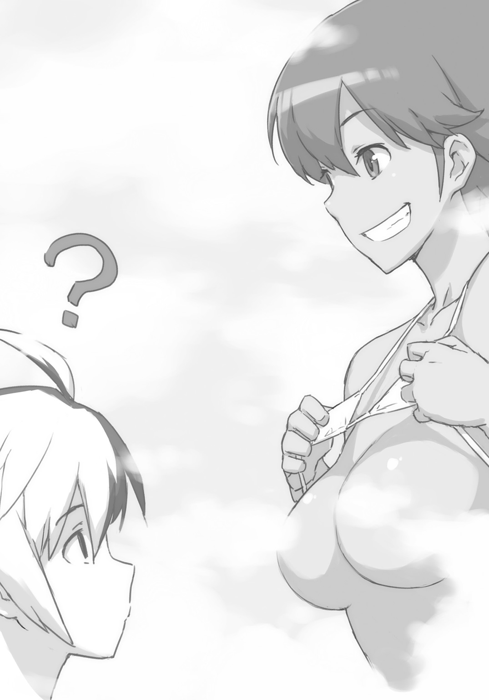
イェシカはブレイドには答えず、アーネストにそう言っている。
「ほらね――じゃないでしょ！ なにやってんのよイェシカ!? 隠しなさい隠しなさい!? しまいなさい!?」
「いや。ほら無反応だし」
「無反応だったらいいってもんじゃないでしょ!?」
「なんなんだよ。アーネスト。おま。さっきからうるせーよ」
「怒られてる!? わたし!? 怒られてんの!?」
「うーん......。我も脱ぐとしようか。水着ではくつろげん。マリアのやつが心のなかでギャーギャーとうるさいのだが」
水着を着用しているのは、クレアとアーネストとソフィの三人だけとなる。ディオーネも誰かに上半身の水着をはぎ取られて、巨大なそれを湯の中に浮かべている。そして下半身は、はじめからなにも着けてない。
「ああ......。そこ――、もっとお願いしますー」
「うふふふふ。お姉さまー？ ここに欲しかったらぁー、ブレイド君の昔のことを、どんどん話してくださいねー？ そしたら、たーっぷりとあげますよー？」
裸身を絡み合わせるようにイェシカはブラシを操り、馬体をマッサージしてゆく。
ディオーネはもう、とろとろで、すっかり言いなりだ。
「そういえばー......、さっきー......、五歳児という話が聞こえてまいりましたがー。ブレイド殿とはじめて出会ったのが、ちょうど、そんな時でしたねー」
ブレイドは、ぎくり、となった。
「えーっ！ それでそれで！ 五歳のときのブレイド君って！ どんなんだったんですか！ ですか！ ですかーッ！」
クレアがえらい勢いで食いついた。
「そこは興味あるわね。――ソフィは？」
「ん。話して」
アーネストとソフィが結託している。
「ほう。五歳とな。あやつが我と同じ年齢だった頃か。それは是非とも聞きたいな」
魔王さま五歳も鷹揚にうなずいている。
やーめーてー！
思いだしたくもない。記憶の底に埋めておいた記憶が蘇ってくる。
「その頃のブレイド殿は――ですね。はじめ出会った時には〝獣〟かと思いました。言葉はそれほど話せず。凶暴で。捕獲された魔獣みたいな暴れっぷりでしたね」
「へー」
アーネストは目を丸くしている。
「かわいー」
クレアがほんのりと頰を染めて言う。かわいー？ どこがっ!? 消してしまいたい黒い歴史なんだけど!?
「私のことを馬と思ったらしく、食おうとしてました。お尻のところにまだ歯形が残っておりませんか？」
「あった」
イェシカが馬体のお尻の毛をかきわけて言う。
「いやー......。ブレイドらしいわー」
「なんでだよ！」
「あら？ いたのブレイド？」
アーネストはしれっと言い返す。
「あの頃はまだ私も修行中でしたので、いまほどの強さは身につけておらず――あやうく食われかけました」
「ほんとにたべようとしてた！」
「馬でなくて人だと、ようやくご納得いただいたときの言葉が――、〝ち。人かよ〟と」
「いちおう分別はあったのね」
「どうやって落ち着かせたんですか？」
クレアが聞く。
「それは、このように......」
と、ディオーネの手が、ブレイドの首筋にすうっと伸びてきた。
顔を挟まれて、引き寄せられる。ぎゅうぅ、と、巨塊の間に顔がすっかり埋まる。いまは水着を外しているから生巨塊だ。
「あー。やっぱ......。おっぱいなのね......」
アーネストが呆れたようにつぶやいた。
柔らかで張りのある物体に顔をうずめきっていると、ブレイドは、なんか色々なことがどーでもよくなってきた。
○ＳＣＥＮＥ・Ⅶ 「勇者のはなし」
ぬるま湯で適温の風呂のなかで、話はもりもりと続く。
風呂で長くなって、たゆたゆと湯に浸りながら、ブレイドはぼんやりと話を耳にしていた。
話に出てくるキーワードに思い出を引っかかれる。思い出に浸りながら、湯にも浸る。
話の中では、ブレイドの過去のあれやこれやが、色々とほじくり返されていた。五歳のまだ凶暴児だったころに初めて出会って、七、八歳ぐらいのヤンチャ盛りに再び出会っていた。この頃にも隙あらば食おうとしていた気がする。返り討ちにあって後ろ脚で蹴られて五〇メートルぐらい吹っ飛んだ。
さらにその次は礼儀作法も身につけた十歳の頃。この頃は国王の庇護のもと、勇者としての活動を本格的にはじめた頃だった。地方に行っては、街を襲う魔獣を討伐したりと――。そしてとある地方の、とある強い魔獣を討伐するのに、まだ軍属でもなく王国にも所属していない自由戦士だったディオーネと、共同戦線を張った覚えがある。
最後のが、十二歳の頃だったか。これはちょっと長い期間、一緒にいた。大戦の初期の話だ。魔王討伐の命を受けてブレイドが活動を始めた。その最初の頃のパーティにいたのが――まだ将軍ではなく、単なる王国騎士だったディオーネだ。
「お姉さまは、あの〝勇者〟と仲間だったという話は、本当なんですか？」
アーネストが訊いている。「お姉さま」とか言うようになっちゃってる。アーネストもついに堕ちたか。
ブレイド自身の回想は、いつのまにか皆の会話を追い越してしまっていたらしい。
皆の会話は、まだ勇者をはじめたあたりで――。
――って!? いま勇者とかゆった!? それＮＧワード！ だめそれ絶対！
「もちろんですとも。私は勇者様を背に乗せたこともあるんですぞ？」
ディオーネはそう言った。......言っちゃった。あーあ。
ブレイドは大きなショックを受けていた。だが言ってしまったのなら、もう仕方がない......。
皆の反応を待つだけだ。
ブレイドが勇者であると知ったとき、皆は、どういう顔をするのか――。
もう〝トモダチ〟として付き合ってもらえなくなるのではないか――。
自分が怖れていたのは、つまりそういうことだったのだと、ブレイドは気がついた。勇者がバレることが怖いのではない。トモダチを失うことが怖かったのだ。
「私は勇者殿のパーティで先鋒を務めさせて頂いておりました。魔王との戦いに連れて行っていただけなかったことは、誠に残念でしたが――。自身の力不足と思い、戒め、さらなる修練に励んでおります」
「ご立派だと思います」
ディオーネの言葉に、アーネストはうなずいてる。
......あれ？ なんか変じゃね？
なんでみんな、俺のこと見ねえの？ いま俺の話だよね？
「ねーねー！ お姉さまー、勇者様って、どんな人だったんですかー？ 聞かせて聞かせて聞かせて！」
イェシカがすがりつく。
「え？ どんな人と申しますと......？」
ディオーネは、目をぱちくり。ようやく自分が「言っちまっていた」ことに気がついて、顔がすーっと蒼白になる。ブレイドと目線を合わせる。ブレイドは「そのまま誤魔化せ！ でなければ馬刺しにして食う！」と、物凄い顔でプレッシャーをかけた。
「あたしの予想だとぉー、渋くてダンディなおじさまかとー！」
「イェシカっておじさん好きだよね」
おとなしい顔をして、クレアがぶすっと刺しにいく。
「いやー、若いのはちょっとー」
「でも勇者様って若いって話よ？ 二十代なんじゃないの？」
アーネストも勇者様には興味津々の模様。
......あれ？ ......俺？ 大人気？ ......じゃなくて、勇者、意外と、大人気？
「いやいやいやいや。アンナ。二十代ってこたぁないでしょ。三十代でしょ。むしろそこは夢を込めて四十代とかでもオーケーでしょ」
「いやよ。四十代なんて、お父様と同じじゃない。二十代ぐらいじゃないと、私、いやよ？」
アーネストでさえ、いやとか、いやじゃないとか、そんなあたりの話をしている。だからいったいなんの話をやってんの？
（大丈夫......。ブレイド。皆は気づいていないから）
ソフィがブレイドの耳元でそう囁いた。おっぱいをブレイドの腕にあて、他の誰にも聞こえないように、小声で言ってくる。
（気づいていない？）
（皆、勇者はもっと年上だと思っているわ。十代だなんて、誰も考えてもいない）
（ああ。なるほど......）
ソフィの解説を受けて、ブレイドはようやく理解した。
（だからこのことは二人だけの秘密）
ソフィはそう言った。
そして、はにかむように、わずかに微笑んだ。
（いやー......、それがなー......）
非常に珍しいソフィの笑顔には悪いのであるが――。ブレイドは浴槽の端で全裸で寝そべる魔王に目を向けた。ブレイドたちの目が向くと、彼女は、にいっと妖しく笑った。ソフィの微笑と同じ笑顔でもだいぶ質が違う。
「もう。バレてんだ」
「......」
ソフィにじっと見つめられる。その無言の抗議が、本日、一番痛かった。
○ＳＣＥＮＥ・Ⅷ 「クーをさがして」
風呂からあがる。
部屋にぞろぞろと戻ってゆく一行から外れて、ブレイドはクーを捜しにいった。
体を拭いてやって「先に行ってろ」と送り出してやったのだが――。
クーの姿は、学園の中庭で見つかった。ディオーネがやってきたときに運んできた大きな荷馬車が駐められている。その前でクーはぼんやりと突っ立っていた。
「なにしてんだ？ こんなとこで」
「お話をしているのじゃー」
「お話？」
とんちんかんな返事が返ってくる。ブレイドは馬車を見あげた。まだホロも外されていない。わざわざ将軍に護衛させて運んできたわりには、表に出しっぱなしで、ぞんざいな扱いである。もっともこんな大きな荷馬車が入る建物はこの学園にはないのだが。
クーは目を閉じている。なにかに耳を澄ます顔だ。
「もうすぐ出るのでそのとき親さまいないとだめなのだー、と言っているのだー」
「なんだそりゃ。もうすぐっていつだ？」
「七日後の夕方って言ってるのじゃー」
さっぱりわからん。
「ほれ行くぞ。おまえの親さまならここにいるだろ」
頭をぐりんぐりんとやってやる。
「先行ってろ。みんなのとこへ」
クーを行かせて、ブレイドは部屋に向かわず、寄り道をしてゆくことにした。
○ＳＣＥＮＥ・Ⅸ 「国王の居室」
窓から直接、失礼することにした。中庭からだとこっちのほうが早い。
地上四階にある窓を、こんこん――と、外側からノックした。すぐに押し入ってもよかったのだが、返答があるまで、しばらく待つ。
ここは国王の居室だった。学園の一角に居室を設けているのだ。警護する者たちは大変だろうに。廊下にも建物の外にも、元勇者の超感覚にも捕捉しきれない気配がいくつかある。窓を叩いたのがブレイドでなかったら、手裏剣が何十本も飛んできているところだ。
「入りたまえ」
ブレイドは窓を開いて室内に入った。ガウンを着た国王がちょっと慌てた顔で立っている。
部屋の隅のテーブルセットのところには、宰相のセイレーン女史の姿もあった。同じく素肌の上にガウンという姿だ。こちらは国王とは違って、余裕の笑みを漂わせつつ、水差しの水をコップに注いでいる。
「悪い。寝てたか」
「いや。ちょうど終わったところだ」
「......ん？」
嚙み合わない返事に首を傾げながらも、ブレイドは要件を切り出した。
「あの荷馬車の中身。......なんなんだよ？」
「ふふふ。秘密だよ」
「おまえのその〝秘密〟っていうので、ろくな目に遭ったためしがないんだが」
「お楽しみは後にとっておいたほうがよいだろう」
「そうか」
聞くべきことは聞いたので、ブレイドは引き上げることにした。とりあえず話すつもりがないということだけはわかった。そういうときに訊いても絶対吐かないんだ。このオッサン。
「なんだ。もう帰ってしまうのかね」
「帰るよ」
「なんなら混ざってゆくかね？」
「なにに？」
ブレイドは訊いた。――と、投げつけられたコップが国王の頭で砕ける。コップを投げたのはセイレーン女史だ。さっきまでの満ち足りた感じの余裕が消え失せて、なにやら怒った顔になっている。
ブレイドはとっとと退散することにした。
なにがなにやらわからなかったが、怒った女の近くにいて、いいことはないと思った。自分はアーネストだけでたくさんだ。
○ＳＣＥＮＥ・Ⅹ 「怪鳥あらわる」
朝も朝から大量の野菜がテーブルに並ぶ。
ディオーネは、もりもりと馬のように食っていた。馬だけど。
食堂のおばちゃんの話によれば、今日は荷車一台分の野菜を仕入れたという。それでも明日までもつかどうかは、半々だという。
「いやきっと、もたんわな」
「なんでしょう？ ブレイド殿」
「いいから食え。カボチャうまいだろ」
「うまいです！ ここの料理は！」
生のカボチャを、ばりん、ぼりんと、三口ぐらいで食い尽くしつつ、オレンジと緑の破片を口のまわりに撒き散らしながら、ディオーネは答えた。
でもそれ料理っていわないよね。サラダでさえないよね。単なる野菜だよね。
ぎよええええええええぇぇぇぇぇぇぇぇェェェェェェェ......。
その時、突如として――。不気味な音が食堂中に鳴り響いた。
誰もが食事の手を止めて、あたりをきょろきょろと見回す。だが室内のどこにも音の元はない。その音は、〝外〟から聞こえてくるようだった。外......というか、上？
食堂中の生徒たちは、不安そうに顔を見合わせた。
ぎえええええぇぇぇぇぇぇェェェェェェェ......。
なにかを呪うかのような声が、再び響く。間違いない。上からだ。つまり〝空〟からだ。
「シームルグですな」
ばりん、ぼりん、ごきゅんと、二つめのカボチャをやはり三口で平らげながら、事もなげにディオーネが言う。
一人、まるで動じていない者がここにいた。いや――一人というか、一頭というべきか。
「シームルグ？」
「辺境ではよく飛んでおりますよ」
「あの。お姉さま......？」
アーネストが訊く。すっかり〝お姉さま〟が定着してしまった。
「それは北の大平原の話ではありませんか？」
「このあたりでは飛びませんか？」
「飛ぶわけが......！ 王都に霊鳥シームルグが出没したなんて話は、少なくとも、この数百年、ないはずです」
「そうですか。ああっ。次はどうしよう。カボチャもいいですが、ジャガイモもいいですね。火を通していない生のマッシュポテトがあるとよいのですが」
火を通していないそれは、マッシュポテトといわない。
「シームルグってなんだっけ？」
ブレイドは訊いた。
「ばか。この大陸の四大霊鳥も知らないの？」
「ばかゆった」
「南のフェニックス。北のシームルグ。西のロック。東のサンダーバード。――教科書に載ってるでしょ。このくらいは試験に出るから、覚えときなさいよね」
「知るか。名前知ってたら倒せるわけじゃあるまいし」
「もう！ ばか！ 倒せるわけないでしょ！ 霊鳥よ！ 霊鳥！」
「倒せるだろ。英雄クラスがパーティ組めば」
霊鳥というのは、飛行型の魔獣のことだ。しかも単なる飛行型魔獣では霊鳥とは呼ばれない。物凄く強いもののことだけを指す。その〝討伐〟にあたって、英雄クラスの複数名による〝パーティ〟を必要とするものだけを〝霊鳥〟と定義する。さらにその上には、〝神鳥〟と呼ばれるランクもある。英雄クラスの複数パーティによる〝レイド〟が必要とされるものだけをそう呼ぶ。だが歴史上、討伐された神鳥クラスはまだいない。
「なに。こっちからちょっかいを出さなければ襲ってはきません」
と、ディオーネが言う。
「被害はでない？」
「そうですね。せいぜい牛や馬が連れ去られるぐらいでしょう」
生の洗っただけのジャガイモが運ばれてきた。皮ごと、ぼりん、ぼりんと、スナックのように食べている。
「牛や馬って......、それ......、餌で？」
「ウシはうまいのだー。アタマから丸かじりがいいのだー」
クーが言う。ドラゴン形態のときの食事は、だいたいそんなもん。牛や馬の一頭が食事の単位となっている。
「農家の方々のなかには、わざと牛や馬を一頭だけ離して繫いでおいたりしているところもあるとか。まあお供えですね」
「お供えって......」
「霊鳥シームルグには、なわばりを守る習性がありますので。守り神みたいなものなのです。他の霊獣クラスとしょっちゅうケンカして追い払ってますよ」
そのなわばりに固執する霊鳥が、どうしてこんな場所までやってきているのか、それが問題であるような気がするのだが......。ブレイドは黙って話を聞いていた。
「人が......襲われることは、絶対にないんですか？」
「そこは教科書に載ってないのか？」
言ったら、びゅっ――と、フォークが飛んできた。あぶねー。あぶねー。あぶねー。
ブレイドの避けたフォークは、壁に突き立って、びいいいんと震えていた。
「人は彼らにしてみると、肉の量が少なすぎるんでしょうな。人がアリンコをわざわざ食べようとしないのと同じで、食事の対象とはならないのでしょう。人が襲われて食われたという話は聞きません。なので北方では神のように敬われているわけです」
「はぁ......」
アーネストは納得していない顔でうなずいた。
上空からはまた例の「ぎょえええええええええ」という鳴き声が聞こえてくる。
食事が進む者は、あまりいないようだった。ディオーネとブレイドを除いては。
○ＳＣＥＮＥ・Ⅺ 「街でアーネストと」
その日、ブレイドはアーネストと二人で街に出ていた。
怪鳥が上空を旋回する日々は、日常となっていた。例の「ぎよええええ」という声も慣れるとそんなに気にならない。
街はいつものように活気に満ちあふれていた。
今日はちょっとした買い物だ。つきあってと言われたのでつきあった。一〇〇〇に待ち合わせて、買い物をした。なんか当然のように荷物を持たされた。
それから食事。炭水化物と脂質過多のスイーツに文句を言ったらプリンなら蛋白質もあるでしょと、バケツのような容器に入ったプリンを出された。いや。「ような」はいらないか。比喩ではなくあれはバケツだ。バケツそのものだ。
道を歩きながら、ブレイドはアーネストに訊いた。
「これからどこ行くんだよ？」
「つぎは違うお店に――」
「また食うの？ まだ食うの？」
さっきも推定一万キロカロリーぐらい腹に収めたはずなのだが。
「あそこのスイーツ美味しいのよ。この時間は狙い目なのよ。待たずに入れるのは情報によればこの時間だけで――」
「つまんねー」
ブレイドは言った。アーネストとは気が置けない間柄だ。つまり言いたいことはなんでも言える間柄だ。
「貴方の私服もあとで選んであげるから。いまは私につきあいなさいよ」
「もう一軒はつきあっただろ？ あと服なんかいいって。自分で買うし」
「貴方が自分で選んだら、どんなダッサいの選んでくるか」
「ダサ......」
「もし本当に自分で選ぶつもりなら、やめといたほうがいいわね。一生制服着ていたほうがいいわよ。制服着ていれば、貴方ってそんなにダサくないから」
ほうらみろ。アーネストも言いたいことはなんでもズバズバ言ってくる。そういう間柄なのだ。トモダチだ。
ブレイドはアーネストに笑いかけた。
「デートなんだから俺のおすすめポイントにも行こうぜ」
「ふえぇっ!?」
「なんだ？ 変な声あげて？」
「い、いま......なんつった？」
「いや、デート」
「なんでデートなの！ 誰がデートなの！ 誰と誰がデートしてるの!?」
「いや。俺とおまえが」
ブレイドは自分とアーネストの顔を、交互に指差した。
「――デートってのは、あれだろ。一〇〇〇に待ち合わせをして、一連の作戦行動を共にすることだろ。だったら今日のこれはデートじゃん。一〇〇〇に待ち合わせしたじゃん」
「あ......、ああっ！ そ！ そういう意味ね！ ブレイド的にそーゆーのを、デートって呼んでいるわけね。あーもーびっくりしたっ。変なこというから。変な意味じゃなかったのね。そーゆーのじゃなかったのね。つまりブレイドが〝ばか〟だったってことね」
アーネストは安心した顔で失礼なことを言う。
「――で？ どこ？ 貴方のお薦めポイントって？ 行ってあげても――まあいいけど？」
髪を払ってアーネストは言う。
「じゃあ。ザリガニ釣りに行こう」
「ばか？ ほんと？ ばか？」
「ザリガニって食えるんだぞ。おいしいんだぞ？」
「え......？ おいしいの......？」
アーネストはすこし興味を示した。もう一押しで完全に釣り上げられるだろう。釣りかたはザリガニとまったく同じだ。食い物で釣るのだ。
「おっと」
ブレイドはアーネストの肘を摑まえた。ぐいと自分のほうに引き寄せる。
「ちょ――なに！」
アーネストのすぐ後ろを荷馬車が凄いスピードで走り抜けて行った。
「あ......、ありがと」
アーネストはお礼を口にする。顔を赤くさせている。
「ちょ――あのね？ 離して？ 街中でこんな――誤解されるでしょ？」
ブレイドはアーネストの体を抱いたままでいた。そして不意に――彼女の体を抱えたまま、横へ跳んだ。アーネストの体を地面に押し倒し、その上に、覆い被さる。
「なっ――なっなっ！ なああぁぁぁ――っ!?」
悲鳴に近い声があがるが、ブレイドはアーネストの上からどかなかった。
――と。太陽が陰った。上空から巨体な物体が降ってきた。ブレイドたちは風圧に覆われた。
さっき通り過ぎていった荷馬車が、巨大な爪に襲われていた。爪だけで馬車を鷲摑みにできるほどの大きさがある。全身は――というと、見上げても羽毛に覆われた〝天井〟が見えるばかり。全身を視認するには、ちょっとばかり近寄りすぎている。
霊鳥シームルグだった。奇声を上げて空を回るばかりだったのに――はじめて、街を襲った。
上空から明らかに荷馬車を狙ってきた。しかし、なぜ荷馬車を？
「なんで！ シームルグが......。人は襲わないんじゃないの!?」
「静かに。できるなら気もころせ」
ブレイドはアーネストの口を押さえて、そう言った。
アーネストレベルになると無意識に〝気〟の衣をまとうようになる。常人なら死ぬような目にあっても「痛い」で済むのはそのせいだ。
それも抑えて、単なる普通の人間のように装うことで、相手の感覚を欺く技がある。ブレイドは気をころした。完全に一般人となった。
シームルグの目が、こちらを見ていた。
その一抱えもあるような巨大な眼球のなかで、緑色の炎が燃えている。攻撃色とも違う。だが魔獣が平静なときに見せる青色とも違う。苛立っているような感じだ。
霊鳥はその鋭い爪で、荷馬車をばらばらに引き裂いていった。完全に分解して、木材と布と金属の破片にしてしまった。積み荷は食料品だった。しばらく匂いを嗅ぐように嘴を近づけていた。食料が目当てなのかと思いきや、なにを食べるわけでもない。
そして――。飛び立っていってしまった。
ふたたび物凄い風圧がかかる。立っている人間が吹き飛ばされるほどだ。街中の店ではガラスが割れる。商品が吹き飛ぶ。
霊鳥が飛び去って――。
空が戻ってきた。
人が乗れそうなサイズの巨大な羽根が、一枚――空から降ってきて、ブレイドとアーネストの上に落ちてきた。
○ＳＣＥＮＥ・Ⅻ 「学長室に殴りこみ」
「陛下！ お話があります！」
蹴り破る勢いで――学長室のドアを、アーネストが開く。
ノックもしない。当然やらない。
ブレイドはアーネストのあとから、のっそりと部屋に入っていった。
「どうしたのかね？ 血相を変えて」
「いったいなにを隠しているんですか！」
ばん――と、執務机の上に手をついて、アーネストは叫んだ。
風圧で書類が何枚か落ちてゆく。セイレーンが腰をかがめ、書類を拾いあげ、机の上に戻した。そして退出してゆく。その彼女の逞しいお尻を見送って――ブレイドは国王に顔を戻した。
「さあ話してもらうぞ」
「そのまえに。いつ気がついたのか。訊かせてもらっていいかね？」
「たったいまです！ 霊鳥が襲ってきたんですよ！」
「うーん。最初かなぁ」
ブレイドは手を頭の後ろで組みながら、そう言った。
「最初というと？」
「おまえがニコニコ笑顔で上機嫌で出迎えてたとき」
ブレイドはちらりとアーネストを見た。国王のことを〝おまえ〟呼ばわりしても「不敬よ」とか怒らない。やはりアーネストにも段々と分かってきたようだ。
「そうか。笑顔が良くなかったのだね。今後は慎もう。――他には？」
「将軍とはいえ一国の国王がわざわざ出迎えに出るってのが、まず変だろ。あとなんで将軍が荷馬車を護衛すんだ？ いったいどんな物を運ばせたら将軍の護衛が必要となるんだ？ かと思えば、あの荷馬車、中庭にほっぽり出してあるし」
「結界を張ってあるから、空からは見えんのだよ。あと護衛をさせたわけではなくてだな。将軍には、たまたまついでに運んできてもらっただけであるがね」
「ちょっとちょっと！ 二人で話していないで！ わたしにもわかるように話してください！」
「ふむ。......アーネスト君。私がここにいるのは、なんのためかね？」
「え？ そ、それは......。ええと。学長の職務を果たすため......ですか？」
「うむ。学長として、君たちを教育、監督し、適切に導いて、英雄として――ひいては勇者として育成するためだね」
「まーた、〝実戦的な訓練〟ってやつかよ」
「うむ。そうなのだ。こんどのはすごいんだぞ。聞いてくれたまえよ」
国王は子供のように目を輝かせている。セイレーン女史が呆れて出て行ってしまうわけだ。
「だから！ わかるように言ってください！ あの荷馬車の中味はいったいなんなんですか!?」
「卵だよ」
「ばか。ばかですか？」
アーネストは言った。国王を〝ばか〟とか言った。もっと言え。
「だいたい、荷馬車で運ぶような――そんな大きな卵なんてあるわけが......って!? ええっ!? まさか!?」
「そう。そのまさかなのだよ」
国王は揉み手をしながら、満面に笑みを浮かべる。いま最高に上機嫌だった。
「荷馬車の中味は、霊鳥の卵なのだよ。ディオーネ将軍に与えた命令は、霊鳥の卵の採集だ。そしてついでに運んできてもらったわけだ」
「卵!? 盗んだんですかっ!?」
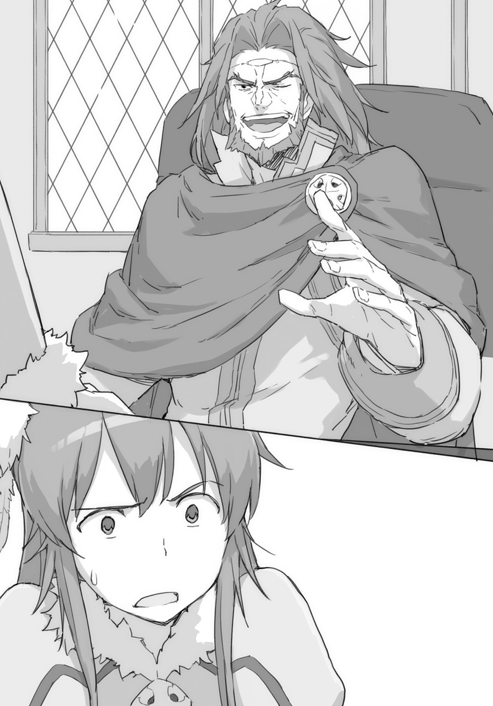
「人聞きの悪いことを言うものではない。ちょっと借りただけだよ」
「なんてことを......!?」
アーネストは絶句していた。蒼白な顔で立ち尽くしている。
そんなアーネストの反応を見て、ブレイドは「ああここは蒼白な顔になるところなんだ」と学習した。アーネストみたいな胆の太い女でもそうなのだから、これはきっと相当なことだ。
ブレイド自身は、呆れはするが、まあそれはいつものことであって――。この国王が、かつて、どんな無茶な作戦を立てて、どんな悪魔な顔をしていたかと、その数々を思い返すと――。
「へ、陛下は......、い、いま......、な、なにが起きているのか、わかっているんですか？」
「うむ。把握しているよ。霊鳥は怒り狂って、卵を取り返しにきているね」
「わかっているなら！ なんとかしなさい！ 卵返すとか！」
「卵はあと数日のうちには孵る」
「その孵すじゃなくて！ 返すです！ 返却です！ 親に返すんです！ いますぐに！」
「シームルグの卵には、孵るための条件が二つあってね。一つは高い場所。もう一つは夕陽を浴びること。この二つの条件が揃わなくては、孵化しないのだよ」
「それとこれに何の関係があるんですか」
「あの親鳥たちは、どうも巣作りするのが初めてのようでね。巣がよくないのだよ。夕陽が差しこむ方向に開口部が向いてない。あれでは卵が孵らない。そしてもうひとつ困ったことにだね。卵を置くべき高度に関しては、樹齢一万年を超える神木クラスが必要となるのだが......。その高さの人工建造物となると、我が王都の、王宮の、尖塔の頂上ぐらいしかなくてね」
「えっと。あの。その......。ということは。つまり？」
アーネストがもごもごと言っている。
「つまり、このオッサンは、卵を助けると言い張るつもりのようだ。霊鳥が自分たちでは上手く育てられず、卵を殺してしまうから、盗んできたのだと」
「保護したと言いたまえよ」
「同じだ」
「どうかねアーネスト君。建前としては完璧だろう？」
国王はウィンクを一つ。
「で――本音は？」
「もちろん君たちの実戦的な訓練のために決まっている。こんどのは凄いぞ。なにしろ〝実戦〟だぞ」
「い......、いつなんですか？ 卵が孵るのは......？」
「数日以内なのは確実なところだ」
「四日後だ」
ブレイドは言った。
クーが〝お話し〟していた内容が、卵の中にいる相手だったとすれば、卵が孵るのは〝四日後〟のはずだ。
○ＳＣＥＮＥ・ 「戦闘前の訓示」
「戦闘前の訓示」
「アテンション!!」
地面に突き立てた魔剣の柄に、両手をのせ、学園の女帝が大声で叫ぶ。
早朝の朝靄の中に、彼女の声が、凜と響く。皆の心に勇気を奮い立たせる声質で、ほんと、こいつは、人の上に立つ人間だと思う。
「総司令官より!! 戦闘前の訓示がある!!」
呼ばれてブレイドは皆の前へと出ていった。
司令官なんて柄じゃないんだがなー。アーネストのほうが、よっぽど向いているんだがなー。
しかしなぜか、アーネストは自分から「副官」のポジションを取っていた。司令官はブレイドに譲られた。こんなん。誰がやったって一緒なのだが。今回はクーと戦ったときとは違って、自分も前線に出る。たいして指揮してらんないんだけど。
「司令官より訓示がある!!」
アーネストがまた叫ぶ。ブレイドのほうは見ないで前を向いて叫ぶ。
「へいへい......」
ブレイドは仕方なく、顔を持ちあげた。ローズウッド学園、百八人の精鋭たちの顔を見る。頼もしい仲間たちの顔を見る。トモダチたちの顔を見る。
「今日！ 俺たちは霊鳥と戦う！ だが怖れるな！ いつもの訓練とまったく同じだ！ なにひとつ変わらない！ 自分らがこれまでやってきたことを信じろ！ 自分を信じろ！」
「あのう......」
と、手が挙がる。クレアとマリアの、自信なさそーなコンビが、二人揃って手を挙げていた。
「自分を信じられないときには――」
「――どうすればいいでしょう？」
物凄い意気投合ぶりだ。一つの台詞を二人で言っている。
「もし、だめだと思ったらー」
「思ったら？」
「マリアは三つ編みを解けー」
「はいっ!!」
三つ編みを解けば、マリアは魔王と交代だ。
「わっ、わわっ、わたしはっ!?」
残るクレアには――。
「おまえが自分を信じられなくても、大丈夫だ――」
ちょっと気恥ずかしい台詞だが、ブレイドはあえてそれを口にした。
「――俺が信じてる」
○ＳＣＥＮＥ・ 「序盤戦」
「序盤戦」
「ブレイド君っ。第三隊が半壊よ。行動不能二名。軽傷三名」
イェシカが告げる。
「あちゃー。しくじったな。――第四隊に替われ。軽傷三名は治療が終わり次第、第一に編入。第四の動きが鈍ったら、ミスるまえに第五と交代。ローテーションの維持を徹底させろ」
ブレイドはそう指示を出した。
べつにこんなん、誰にだってできる指示だった。アイビス教官の「戦略・戦術」の授業でＡ判定をもらっている者なら、まったく同じ判断となるはずだ。
「了解」
イェシカは握ったグリップで遠くの建物に狙いを付けた。トリガーを引くと、銛が撃ち出された。ワイヤーを引きながら伸びていった銛は、通りをいくつも越えていった先の建物の壁に命中した。グリップにあるもう一個のトリガーを引くと、ぎゅるぎゅるとワイヤーが巻き取られて、イェシカの体は物凄い勢いで吹っ飛んでいった。
あれは発明家のイライザの作った新装備だ。ワイヤーのついた銛を撃ち出して、建物の壁に打ちこむことで、高速移動に使ったり、建物の屋上にあがったりということができる。
これが意外と便利。名付けて「空中機動装置」という。
上級クラスのなかには壁走りのできる者がけっこういる。垂直の壁を上る技術だ。気の応用で壁面に足を貼り付けるのだ。それができない者には「空中機動装置」が支給されている。
「ぎよえええええええええぇぇぇぇぇ」
霊鳥が鳴く。あれが卵を盗られたことに対する怨嗟の声であることは、もう、誰もが理解している。霊鳥は手当たり次第に街を破壊していた。建物に落下し、その爪と体重とを持って、家をぶっ壊しにかかる。
ひょっとしたら卵を探しているつもりなのかもしれない。だがあれでは、たとえその場所に卵が隠されていたとしても、家と一緒に壊してしまっているだろう。そのくらい頭にきているのだ。本来、知能はかなり高いはずだが、激昂して完全に我を忘れてしまっている。
ブレイドたちの今回の戦いは、ある意味において――霊鳥を守るための戦いとなっていた。親鳥から卵を守らねばならない。ぜんぶ国王のせいだ。あいつがすべて悪い。
親鳥は当然ながら二羽存在していた。陽動と挑発のために、ブレイドたちの戦力も二分させられる。相当にきつい戦いを強いられる。
怒れる霊鳥が、街で破壊の限りを尽くしている最中は、朝から戦い続けているブレイドたちにとっては、短い休息の時間だった。
街の破壊は気にしない。家がいくら壊されてもブレイドたちは関与しない。卵が保管されている学園近辺に霊鳥が行ってしまいそうなときだけ、威嚇して陽動して引っぱってくる手筈だ。
家が壊されてもブレイドたちが気にしないのは、もう、とっくに避難済みとなっているからだった。全住民の避難は完了している。そして霊鳥の被害で家が壊された場合には、充分な保証が王国から出ることになっている。具体的には、家を三回ぐらい新築で建て直せてしまえる金額だ。よって、住民たちは、「むしろ壊して！ そこじゃない隣の家だ！」ぐらいな勢いで声援をしている。王国の湖を取り巻く環状の丘陵地帯には、人々が大勢見えている。たぶんあそこではお祭り騒ぎになっているのだろう。
「ぎよえええええええええぇぇぇぇぇっっっ」
中級層の住む集合住宅をいくつか破壊し終わった霊鳥は、ふたたび、空へと羽ばたいた。
「あー。インターバル終わっちまった」
目の上に手をあてて、遠くを見ながら、ブレイドも移動した。
大局を見通せる指揮官ポジションから、前線の兵士の位置へと――。
○ＳＣＥＮＥ・ 「中盤戦」
「中盤戦」
三小隊が戦っていた。
地に降り立った霊鳥に向けて、上級クラスの面々が率いるトップスリーの小隊が波状攻撃を行っていた。
レナードがバリアを張って部隊の女の子を守る。断続的に明滅させてエネルギー消費を抑えるなどという、器用なマネまでやっている。
アーネストがでっかい火球を吐いた。撃ち出すのではなく口から吐いている。炎の魔人状態だとそういう芸当もできる。もうほとんど怪獣だ。――かと思えば、急に、燃え尽きた。火が消えて、まっぱになって、瓦礫となった街中で手近な店舗に裸足で逃げこんでゆく。半壊しているがそこはスイーツ店。アーネストがカロリーを補給して再点火するまで、たとえ、どんなに台無しの顔になって大忙ぎでスイーツを詰め込んだとしても、数分はかかるだろう。
アタッカーとして、かわりにソフィが前に出る。人工勇者力は、最後の最後の切り札としてとってあるから、通常戦闘だけで戦っていた。氷の精霊力を手足に帯びて、殴る蹴る殴る蹴る。
だが相手は霊鳥。ダメージなどほとんどゼロだろう。逆に言うなら、一切の手加減をせずに全力を出しても、怪我をさせてしまう確率がゼロとも言う。
それでも怒りをかきたてる効果は充分にあって、霊鳥は赤い攻撃色に目を輝かせて、ソフィを睨む。翼を打ち振るって、飛び上がろうとする。
「上を押さえろ！ 魔王！ クー！」
ブレイドは空に向けて叫んだ。
魔王とクーの二人は空中戦要員だった。魔王は魔族形態のときに生えてくる自前の翼によって飛行する。夜魔族はもともと空中戦を得意とする魔族だ。クーのほうは、ここ数日の猛特訓のおかげで、半獣モードとでもいうべき形態を獲得していた。完全に竜化してしまうのではなく、ドラゴンをちょびっと「はみださせる」ことにより、翼と手足の先だけを竜化させるというカッチョええモードだ。体重は人のままなのでスピード感のある空中戦が可能だ。
「ふははっ！ この魔王を使うか！ よかろう！ 使われてやるぞ！ ――魔王雷ッ！」
数十本の雷が天より落ちる。「魔王雷」とかカッチョええ名前を付けてはいるが、あれは実は単なる「サンダー」だ。魔法初心者が最初に覚える雷系の１レベル魔法だ。ただし威力はハンパない。その膨大な魔力容量から放たれる１レベル魔法の威力は、すくなくとも通常の数十倍。かつての暴虐的なまでの魔力は振るえなくなっているものの、上級クラスのなかでもトップレベルだ。
――が、霊鳥の羽毛でほとんど弾かれる。霊鳥の身に宿る獣気は、ほんの羽根一枚に宿るぶんだけで、大型魔法機関を数年は稼働させられるほどである。その羽毛が数万枚も体を覆っている。物理攻撃でも魔法攻撃でも闘気攻撃でも、なかなか貫通しない。もし本当に、ざくざくとなます切りにしたいのであれば、《聖魔剣》あたりから上の技が必要となる。
「くらえー！ なのじゃー！」
ぼっ。ぼっ。ぼっ。クーも火球を連発する。もともと完全竜化すればブレスが吐けたが、炎の魔人モードのアーネストと張りあっているうちに、半竜フォームでも小火球を吐けるようになっていた。しかも従来型よりも〝溜め〟が少ない。連発も可能だ。
炎は多少は堪えるのか、霊鳥は飛び立ちかけた出鼻を挫かれて、もたもたとしていた。
そこに別働隊が仕掛けてゆく。無数の〝糸〟を引きつつ、男子と女子の制服が、建物の間を飛びまわる。イライザの発明品「空中機動装置」は、移動に使うばかりとは限らない。右手と左手のそれぞれにグリップを握り、乱れ撃ちで、空中にワイヤーを架け渡してゆく。ワイヤーは、無論、神鉄製だ。ローズウッド学園では、わりとすぱすぱ斬ったり砕いたりされているものの、いちおう世間一般的には「破壊不能」とされている物質だ。
霊鳥はようやく飛び立った。
――が。
「遅いんだよ」
ブレイドはつぶやいた。ほんの十数秒のタイムラグのおかげで、蜘蛛の巣のようなトラップが、もうすでに架け渡されていた。
「ぎよえええええぇぇぇぇぇ」
奇声があがる。神鉄のワイヤーによる網に背中を押さえられ、飛ぶに飛べず、物凄い風圧を撒き散らして大暴れに暴れる。常人なら立っていることもできないような風圧だ。
ブレイドは数歩、前に出た。足の裏に気を流しているから風圧のなかでも歩いていける。垂直の壁を歩くこともできるのだ。その同じ技は、地をしっかり摑まえることにも応用できる。
破竜饕餮の一発ぐらい、ぶっ放しておくか。そう思って、剣を構えたとき――。
「まったまった！ 待あぁった――っ！」
食い終わったのか。あるいは食らい尽くしたのか。アーネストが駆けてきた。全裸で駆けてくる最中で炎化して変身――そのままデッカい火球を吐きつける。
「ぎよええええええええええ！」
怒った。暴れた。神鉄のワイヤーをいくつかは引きちぎり、いくつかは絡んだままで、霊鳥は強引に飛びあがった。周囲の建物が、掘り起こされるように土台から持ちあげられる。街の一区画を、そのまま空に運びあげて、霊鳥は飛翔した。
ブレイドたちは空中に投げ出された。瓦礫と一緒に運ばれて、そのあと、投げ出された。
落下して大地に激突するまでの数秒――。
壁や、床や、石畳だったものが、あちこちに浮かんでいる。そのわずかな〝平面〟を頼りに、蹴って、移動を繰り返した。
落下する瓦礫の一群のなかから抜け出して足を下に、頭を上に、何事もなく着地する。
「みんな無事か？」
《当然よ！》
アーネストが吠える。上級クラスの面々は、もとより心配していない。ワイヤー張りの組のほうは、だいたい下級クラスだったが――しかし、全員が揃っていた。
皆、目を大きく見開いている。呼吸もひどく荒い。自分がいまやったことが信じられないという顔をしている。だがパニックは起こしていない。
戦場でもっとも恐ろしいことは、パニックを起こすことだ。そして〝死線〟を踏み越えてしまうことだ。戦いの中には〝流れ〟がある。そこを越えると死ぬ。――そういう線がある。それを〝死線〟と呼ぶ。
歴戦の古強者がしたたかなのは、〝死線〟を感知しているからだ。
生きて戦場から戻ってくるのは、〝死線〟がわかるからだ。
たいていの新兵は古強者になることはない。その前に死ぬ。うっかり〝死線〟を跨ぎ越えてしまって〝あっち側〟へ行ってしまうのだ。何度も死にかけては生還し、何度も〝死線〟を感じては、その度ごとに生きて帰ってくることで、新兵は古参兵へと成長する。
――が。ローズウッド学園の生徒たちは、何度も〝死線〟と触れていた。国王のはた迷惑な〝実戦的な訓練〟とやらで、〝死線〟に触れた回数は、そこらの古参兵が目を剝くほどである。
よってローズウッド学園の生徒たちは、もっとも成績の低い下級クラスの生徒といえども、〝死線〟を感じながらも萎縮することなく、パニックにも陥らず、〝死線〟のすぐ近くを紙一重で通り過ぎる術を、体で覚えこんでいるのだった。
しかし死線をかすめて生還してこれるのはいいのだが、攻撃力が根本的に不足しているために、ダメージを与えることができない。
「ぎよえええええええええ！」
怒った。怒った。めっちゃ怒った。
霊鳥は暴れた。まだワイヤーで繫がっている「家」を振り回し、投げつけてくる。
「ほーら逃げろ！」
ブレイドたちは駆けだした。追いかけっこに入る。次のチームの待つ戦略地点まで引っぱって行って霊鳥を押しつければ、このチームの任務は完了だ。しばし休憩を取ってローテーションに備える。力に劣り、決め手に欠けるブレイドたちであったが、勝機がないわけでもない。
この戦いは、勝つための戦いではないのだ。負けないための戦いだ。霊鳥を釘付けにしておくための戦いだ。つまりブレイドたちは、負けずにいるだけで自動的に勝利するのだ。
まだまだ日が高い。戦いは、ほんの中盤戦といったところだった。
○ＳＣＥＮＥ・ 「トリアージ」
戦いは後半戦に入っていた。
戦死者こそ出ていないものの、重体、重傷、軽傷、多数。擦り傷切り傷程度なら全員にできている。ただしブレイドは除く。まだ擦り傷もない。完全な無傷だ。
重体の意味は、損傷がひどく生命が危険な状態なこと。重傷は命に別状はないが戦闘続行が不可能な状態。軽傷は戦闘続行も可能だが治療しなければ戦力が減退してしまう状態。擦り傷切り傷は治療なしで全然かまわない。無傷も同様。
クレアの復元能力は万能に近いが、限界はあった。本人の精神力よりも、ボトルネックは、周囲に存在するなんらかのフィールドの〝密度〟にあるらしい。同じ地域で繰り返し使うと効力が減衰してゆく。よって〝トリアージ〟が必要だ。
重体は女医や医療機関に任せる。重傷と軽傷は感情で判断せず理屈で判断する。
重傷者一名を戦線復帰させるのと、軽傷者三名を戦線復帰させるのとでは、どちらのほうが戦力となるか。同じクレアの復元力の一単位の使用で、戦力を何単位戻すことができるのか？
感情でも感傷でもない。単純な数式によって、傷病者は選別された。腕に色違いのタグをつけて行く。アーネストの発案によって始まった「トリアージ・タグ」は、いずれ大陸中に広まってゆくことだろう。戦場では死者と傷病者を選別することになるのだろうが――。
日没まであと数時間――。戦いはますます過酷になっていった。
○ＳＣＥＮＥ・ 「終盤戦」
「終盤戦」
「こらえろーっ！ あとほんの十数分だーっ！」
ブレイドは大声を張りあげた。ぼろぼろになった剣を捨てて、そこらに落ちていた、まだ使えそうな剣を拾う。これで四本目なのか五本目になるのか。いちいち数えていられないくらいの本数、剣を使い潰してしまっている。闘気を通わせると、並の剣だと、素材が持たないのだ。
戦いの最初から刃こぼれもなく健在なのは、アーネストの魔剣か、レナードの槍ぐらいなものだった。
時刻は夕方となっていた。
太陽はすっかりオレンジ色となり、熟した果実のように、落ちかけている。
ブレイドは霊鳥に剣を構えて威圧しつつ、背後を振り返った。すっかり見晴らしがよくなって、王宮がよく見える。尖塔の下から、急ごしらえのエレベーターデッキがせり上がってゆく。ゆっくりと上昇を始めたところだった。
厳重に結界で覆われた場所から卵が運び出されるのは、最後の十数分となる手筈だった。最後の十数分間で、エレベーターデッキで、一気に、尖塔の先端まで運びあげるという作戦だ。
つまり、ここからが正念場というわけだ。
――だがしかし。
こちらの残存者はもう十名を切っていた。ブレイド以下、アーネスト、ソフィ、クー、魔王、レナード、クレイ、カシム、イェシカ......。いつものメンバーだけだ。たったそれだけだ。
「とにかく気を引け！ 手を止めるな！」
二羽の霊鳥は、一羽は地におり、もう一羽は半壊した建物の上にとまっている。
一度に二羽を相手にするのは、正直、しんどい。だが攻撃の手を休めたなら、霊鳥は無差別に暴れはじめてしまう。二羽分、四つの目は、攻撃色の深紅に染まりきっている。もはや卵のことなど完全に忘れ去っているかもしれない。
親鳥の注意を引き続けなければならない。孵ってくる卵のためにも！
「アーネスト！ 右をたのむ！」
ブレイドはアーネストに叫んだ。炎の魔人化と、素っ裸とのあいだを、しょっちゅう行き来しているので、いま身に帯びているのはマント一枚きり。素っ裸でマント一枚で黒い魔剣を手にして、すっかりアブナイお姉さんである。
「でも......！ もうカロリーがっ......!?」
アーネストはマントの端っこをぎゅっと摑む。
「これを食うのじゃ！ アーネスト！」
空からなにかが投げ落とされてくる。それは乾燥肉の塊のように見えた。
「お肉？ ビーフジャーキー......？」
「ドラゴンジャーキーなのじゃ！ し、しっぽの先を落とすのは......、痛かったのじゃーっ！」
クーのやつ。何日か前にお尻に絆創膏を貼っていたと思えば、そんなものを用意していたとは......。魔獣の肉は栄養価が高い。その獣脂は数年間は燃え続けるランプの脂となるほどだ。そしてドラゴンの肉といえば、あらゆる魔獣の肉の中で、最も栄養価が高く――。
むしり、と、アーネストは、ドラゴンジャーキーを嚙みちぎった。咀嚼して飲みこむ。
「――たぎるわっ!!」
吠えた。ぶわっと炎が燃え上がった。マントが端から燃えていって空中で火の粉とかわる。
アーネストは両手両足をついて駆けて行ってしまう。あー。もうビースト化してるわ。正気吹き飛んでるわ。あと、ジャーキー食った瞬間、一瞬、ぼんって、体が物凄く太くなってた気がするんだけど......気のせいだろうな。
正気が吹き飛んでる魔獣同士の、怪獣大激突がはじまった。空中から魔王とクーが、雷と火の玉を降らして援護する。
「レナード！ アーネストについて行っていいぞ！ あいつは任せた！」
「言われるまでもなく！」
瓦礫にとまっていたほうの一羽は、アーネストたちに任せるとして――。
「こいよ」
ブレイドは剣を構えた。
「参る!!」
隣にクレイが並んでくる。
「剣士ばっかじゃん」
「あたしたちもいるけど」
「だな」
イェシカとカシムも横に来た。
「ブレイド。命令を」
ソフィが言ってくる。
「みんなで生きて帰ろう」
これまで、何度、この言葉を口にしたか......。そして帰ったのは、たいてい、ブレイド一人きりだった。だが今日はそうならない。過去の戦いほど、ひどくはない。
あとほんのすこしだけ、もたせればいいのだ。エレベーターは尖塔を登り続けている。あれが頂上に到着し、夕陽を浴びれば――作戦終了だ。あと数分間の戦いで、こちらも一人二人は脱落するだろう。ひょっとしたら三人四人くらいはリタイヤするかもしれない。
ただし時間差で、自分たちの勝ちだ。それはもうほぼ確定事項であり、たとえば、あのエレベーターが止まってしまうとかいうトラブルでも起こらない限りは――。限りは――。
あれ？
「なあ......。あれって？」
ブレイドは剣で尖塔を指し示した。
「止まって......なくなくね？」
「え？」
「なくなくなくなくね？」
「そう......よね。ぜんぜん動いてないみたいよね」
「え？ ええ――っ!?」
なんでなんでなんでーっ!? なんで止まってんの!? エレベーター!? なんで止まってくれちゃってんのーっ!?
エレベーターは途中で止まってしまっていた。頂上までの半分をすこしいったところで、完全に停止してしまっている。
「ブレイド。行って」
ソフィがクールな声で告げる。
「いや――、しかし」
「十秒。すべて残しているわ。こんなときのため」
「いや――、だがな」
「私を信じて。皆を信じて」
「そうだ。行け。ブレイド。ここは俺たちに任せておまえは行け！」
クレイのやつが格好を付ける。
一瞬だけ、昔の記憶がフラッシュバックした。皆が敵を引きつけて、ここは俺たち、私たちに任せろとブレイドに言う。そしてブレイドは自分一人で――。
いいや。そうはならない。ブレイドは頭を振った。昔とは違う。もう一人じゃない。俺はもう勇者じゃない。一人じゃない。仲間がいる。トモダチがいる。
「わかった」
ブレイドは顔を振り上げた。尖塔を見上げる。
○ＳＣＥＮＥ・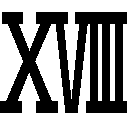 「尖塔」
こえー！ こえー！ こえー！ 落ちたら死ぬー！
ブレイドは走っていた。尖塔の外壁はつるっつるで、どこにも手がかりとなって摑むような場所はない。
この尖塔は、空から落ちてきた船が地面に突き立って、その船尾部分だという伝承がある。だが、そんなわけあるか、ばーか。だいいち船が空飛ぶか、ばーか。
ブレイドは走り続けていた。気を足裏に集めて吸着させる。体重を支える。実際には、垂直にちかい急斜面を駆け上がっていることになる。
ちょっとでも気を抜けば、どこまでも滑り落ちていってしまうだろう。この高さから落ちたら、いくらなんでも、ちょっと助かりそうにない。
朝から全開（ただし一五パーセント未満）で飛ばしつづけている。いくらブレイドでも、疲労は重たく溜まっている。そのせいで十歩に一歩くらいは足を踏み外す。落ちそうになる。
「勇者殿！ ――どちらまででありますか!?」
気軽な声が聞こえてきた。ディオーネの声だ。後ろから、ぱからんぱからんという軽快な足音とともに彼女が壁走りをしてきた。あっという間に追いつかれ、追い抜かされてしまう。
「ご一緒してもよろしいでしょうか！」
まるで散歩の途中に出くわしたかのような気楽さだ。
いいや。英雄連中にしてみれば、これが本当に〝散歩〟に見えていても不思議はない。霊鳥と〝遊んで〟いるように見えるのかもしれない。その懸念は拭えない。
「手伝わねーんなら、あっち行け」
「陛下より厳命されております。絶対に手伝ってはならぬと。これは実戦的なナントカであるのだとか。私が混じっては訓練にならぬのだとか」
「だったらあっち行けよ。俺は見ての通り忙しいんだ」
「手伝うことはできませぬが――」
腕が伸びてきて、ひょい、と抱え上げられる。ぽいっと背中に投げあげられる。
「おっ、おい――!? 手伝うなって言われてたんじゃないのか？」
「このくらいはよいでしょう」
落ちないように、彼女の体にしっかりと腕を回す。
「勇者殿？」
「なんだ？」
「私が背に乗せるのは、後にも先にも、勇者殿一人だけですぞ？」
「ふうん？」
ブレイドは首を傾げた。意味不明だった。
○ＳＣＥＮＥ・「卵のもとへ」
ディオーネの背から下りて、エレベーターデッキのフロアの上に立つ。
平坦な地面に数分ぶりに立つと、なんだか傾いでいる気がする。たぶん錯覚なのだろう。
地平線を見る。太陽の色はオレンジから赤に変わりつつある。いまにも落ちてしまいそうだ。
そして卵を見る。
柔らかな干し草の山の上に載せられて、卵はそこにあった。
「で、でけえ......」
シームルグとは違うが、霊鳥クラスの卵を見たこともある。その二倍の大きさはゆうにある。
「これを......、運ぶのか？」
ブレイドは尖塔を見上げた。頂上まではまだだいぶある。数百メートルはありそうに思える。
そして卵の重さは――、一トンはあるように思える。
これを運びあげるのか？ あそこまで？ 俺一人で？ 気で垂直面に足を貼り付けながら壁走りして？ そして制限時間はあと数分もなくて？
いやー......。
無理かなー。無理だなー。無理じゃないかなー。
いや。無理でもやるのが勇者なんだけど。不可能を可能にするのが勇者の仕事なんだけど。
いや。しかし......。これは......。
できないも！ だめだも！ 俺もう勇者じゃないんだも！
ブレイドは地団駄を踏みたくなった。幼児化したくなった。
「勇者殿。しっかり摑まえておくのですよ」
「え？ ディオーネ？ おまえなにを――うわっ！ ちょ――!?」
ブレイドは背中を押された。ディオーネに背中を抱えこまれて、卵に向けて、ぐいぐいと容赦なく押されて行く。
「うん？ なんでしょう？ 私はただ、勇者様の背中を押しているだけですから。――決して手伝っていたりなんて、していませんからー!!」
空々しい棒読みが、頼もしく響いた。
ブレイドはディオーネに押されるまま、まず卵をしっかりと抱きしめた。体内の気をすべて筋力増強に回す。
ディオーネは走り始めた。
「ぐおお......」
ブレイドは押し潰されそうになった。
セントール族の――。王国最強騎馬軍団の魔槍将軍の――。真の英雄の――。本気走りだ。
それが背中にかかってくる。そして体の全面には、一トンはくだらない、巨大な卵の質量がかかっている。
だがブレイドは耐えきった。卵を決して離さなかった。元勇者でなければ、潰れていたかもしれない。いいや。絶対ぺしゃんこだ。
物凄い勢いで数百メートルを一気に駆け上がる。
そしてブレイドは、卵とともに、尖塔の先端へと辿りついた。
○ＳＣＥＮＥ・ 「尖塔最上部にて」
「やあ。ゴールへようこそ」
国王が腕を広げて待ち構えていた。
ブレイドはものすごーく、嫌な顔を作った。すべてはこの男だ。この男のせいなのだ。
「君ならやり遂げてくれると思っていたよ」
国王は言う。くわっと目を見開いて、額に青筋まで浮かべて、今日ばかりは、誰にも邪魔されることなく――。
「なぜなら君は――ッ！ 勇者だからだッ!!」
もう勇者じゃねーよ。皆に助けまくってもらわなかったら、出来やしなかったよ。
「卵は運んだ。時間もセーフだ。夕陽もまだある。これで終わりか？」
「うむ。あとは私の仕事ということだな」
「おまえの仕事？」
ブレイドは首を傾げた。
国王はフロアの縁まで歩いてゆくと、なにもない大空に向かって――。
「我！ ギルガメシュ・ソウルメーカーの名において宣告す！ 命の恩は！ 命をもって贖うべし！ 確かに返すぞ！ いまここに！」
「あの人は――ギルは、その昔、霊鳥シームルグに命を救われたのです」
「うわあ！ びっくりした！」
王国の宰相――セイレーン女史だった。背後に立たれて気がつかなかった。勇者の後ろを取るとは――。いや。もう勇者じゃないけど。元勇者だけど。
「あの人は、ずっと気にしていたんですよ。でも恩を返すことができて......よかった。ありがとう。ブレイド」
宰相の地位にいる彼女は、国王の無数にいる愛人の一人だ。第一位の愛人だ。臣民の中には、どうして彼女が王妃とならないのか不思議がる者が多い。まあ大人にはなにか色々あるんだろう、と、ブレイドはそう思う。
「だったら、そう言えよな。......ったく。素直じゃねえ。ばーか。ばーか。ばーか」
ブレイドは国王の背中に向けて、悪態をついた。セイレーン女史がくすくすと笑っている。
霊鳥が飛んできた。国王の声は届いたのだ。国王の言葉の意味も理解したはずだ。あれほどの強さを持つ魔獣が、まがりなりにも霊鳥と呼ばれるほどの存在が、言葉も解さぬ単なる獣であるはずがない。その目を満たしていた真っ赤な光も、攻撃色も、いまは消え失せ――。
「って？ あれ？」
ブレイドは目をしばたたいた。消え失せて......ない？
「あれ真っ赤じゃね？ 攻撃色じゃね？ むしろもっと赤くなって、なくなくね？」
「そのようですね」
セイレーン女史もうなずいた。
「ギヨエエエエエエエエエエエエエエエエエエエエエエエエエ！」
霊鳥が吠えた。
国王の姿を目にした途端、目の色は深紅さえ越えた。赤く赤く赤く。どこまでも赤く。レーザーが迸るようだった。
ああ。怒っていらした。何十年か昔に、あの男にどんな「ひどいめ」に遭わされたのか、霊鳥は覚えていらした。そしてめっちゃ怒っている。――まあそうだよね。
霊鳥は国王に向けて、飛びかかった。
――が。
青い稲妻が走った。ソフィが空中を走っていた。空気を蹴りつけて多角形の軌跡を描きつつ、霊鳥の後頭部に、物凄い後ろ回し蹴りを叩き込む。上から下へと蹴り抜いた。真下に向けて叩き落とす。
「人工勇者力......あと五秒よ」
ソフィの声はそう聞こえた。そして一瞬も止まることなく、もう一羽の霊鳥に向けて空中戦を仕掛ける。蹴り落とされたほうもすぐに上昇してきて二対一の戦いとなる。
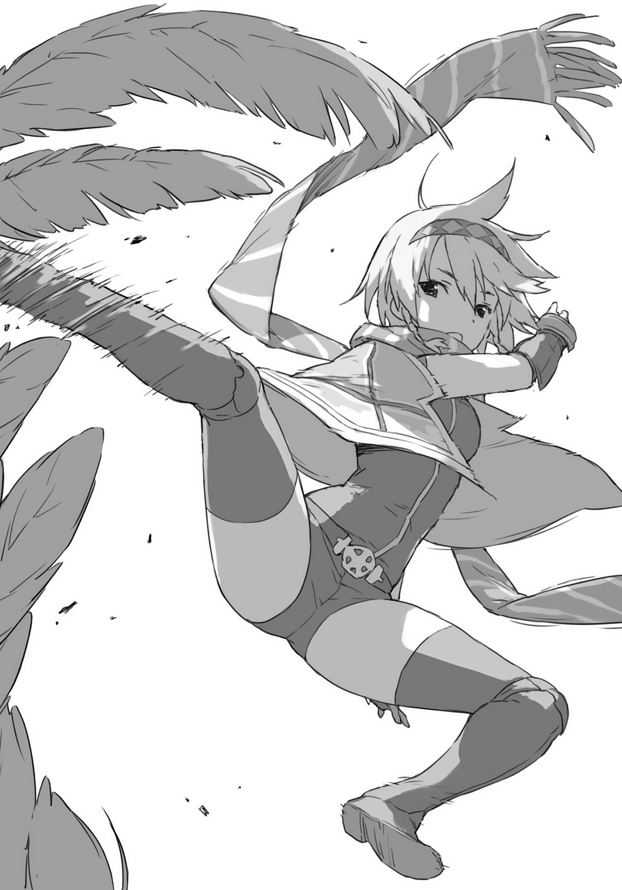
五秒――。それだけあれば充分だ。
ブレイドは気を練りはじめた。もうこれが最後だ。すべてを吐き出したって構わない。すべてを闘気へと突っ込んだ。
「ド、ラ、グ......」
腰だめに剣を構える。気と闘気の二重螺旋を刀身にこめる。
「饕餮――ッ！」
うねる螺旋が吹き荒れた。二羽の霊鳥はそれぞれ違う位置にいたが、螺旋はホーミングして二羽とも呑み込んだ。気と闘気のエネルギーの超螺旋の中で、二羽はもみくちゃにされていた。
そしてブレイドは、その場に前のめりにぶっ倒れた。すべての力を使い果たした。
「ブレイド！」
駆けつけてきたソフィだが、体から青い輝きが消失すると、ブレイドと同じように前のめりに倒れた。やはりソフィもすべての力を使い果たしていた。
「重いよ。ソフィ」
「重くはないはず。アーネストよりは軽いわ」
二人とも、もう一ミリだって動けない。軽口だけをなんとか言いあう。もう本当に空っぽだった。立つことさえできやしない。しかし......。大丈夫。死んでない。一四パーセント未満で止めたから、今回は死んでない。意外と俺、器用じゃーん。
ブレイドは、なんとか頑張って首を横に傾けた。
卵があった。
落ちきる寸前の夕陽を浴びて、卵は真っ赤に輝いている。
自分たちが守り切った卵を見つめる。
その卵の表面に――ヒビが走った。
「ぴいぴい」
鳴き声がする。卵の殻を割り開いて、ヒナ鳥が顔を出してきた。
おや？ 二匹いねえ？
どうやら卵は双子だったようだ。どうりで重いと思った。二倍あると思った。
見つめていたら、ヒナ鳥と目が合った。向こうとこちらで、じいーっと見つめあう。
「ようこそ。世界へ」
ブレイドはそう声をかけた。
ヒナ鳥は、殻をはねのけると、おぼつかない足取りで、何度も転びながら、ブレイドのところに歩いてきた。そしてなにを思ったのか、嘴を開いて――。ブレイドの顔を――！
舐めた。
鳥にも舌があるんだな、意外とざらざらしてんだな、とか思いつつ、ブレイドは二匹のヒナ鳥に顔中を嘗め回されていた。しかしビビった。一瞬、食われるのかと思った。
「ひい、ひい、ひい、ふーっ......、よ、ようやく......頂、上......」
アーネストの声が聞こえた。また苦労してそっちに顔を向ければ、よじ登ってきたアーネストと目と目が合った。
「よ」
「ブレイド......、なにやってるの？」
アーネストの声はいきなり冷え切った。
「もうっ！ ばか！ 心配したのに！ 登ってきてみれば――ソフィと抱き合ってるし！」
「いや。これはただ単に動けないだけで......」
「あとなんで、そのヒナ鳥......懐いてんの？」
「さあー......。なんでなんだ？」
「それって......インプリンティングとか？ ブレイド、ひょっとして、生まれてきたヒナ鳥たちに、最初に見られた？ 目と目が合ったりした？」
「いや俺、動けねえから......。目は合ったけど」
「ばか！ それ絶対！ 親だと思われちゃったわよ！ どうするの！ ばか！ ばかばか！」
ばかを連発。そしてアーネストの指は、びしっと、ブレイドに突きつけられる。
「また子供作って！ ――どーすんのよ！」
「お姉ちゃんと呼ぶのじゃー！」
空から下りてきたクーが、ソフィの上に乗っかってきた。
ぐええ。二人分の体重を受けてブレイドは潰れかけた。
○ＳＣＥＮＥ・ 「エピローグ」
よく晴れた青空。澄み渡る空気。
今日は散歩日和だった。地平線もいつもより広く見えている。
高い高いところを、二匹の霊鳥が、ゆっくりと旋回している。まるで我が子たちを見守るように――。
「ちょっと！ ちょっと！ そっちじゃないのよ！ おねがいだから言うとおりに飛んで！ 飛んで！ ね！」
アーネストが、きゃあきゃあ言いながら手綱を力一杯引いている。
「おーい。アーネスト。馬じゃないんだぞー。自由に飛ばしてやれー」
「わかってるわよ。わかってるけど――でもねっ！ ああもうっ！ わかったから！ わたしおとなしく荷物やってるから！ だから落とさないでっ！」
アーネストが支配することを諦めると、飛行も安定する。
ブレイドとアーネストは、二匹のヒナ鳥に乗って空中散歩としゃれこんでいた。
二匹のヒナ鳥たちは、生まれて何週間も経っていないが、さすが霊鳥。もう飛ぶこともできる。親鳥のほうは建造物サイズの巨大さだが、ヒナ鳥のほうはちょうどグリフォンぐらいのサイズで、人間が乗るのにちょうどいい大きさだった。鞍を着けて手綱もつければ、ばっちりだ。
「親さまー」
クーのやつが、そこらをひゅんひゅんと軽快に飛び回っている。クーのやつが「親さまー」と言ってきたら、手を振り替えしてやるのが、親さまの仕事だ。
一人と一匹と二羽と、一家団欒の空中散歩だった。アーネストもいる。
どうやらブレイドはヒナ鳥に「親」と認識されてしまったようだった。そして上空を舞う二羽の霊鳥も「親」だった。ヒナ鳥たちは、双方を親と思っているらしく、餌は上の親にもらい、下の親であるブレイドのところには遊んでもらいに来るようになった。
まあこうして空を飛べる便利な「足」を手に入れたことになるわけで――ブレイドとしても悪くはない。すでにクーもいる。いまさら子供が一羽二羽増えたところで、どうということもない。クーはクーで、「妹と弟」が出来て喜んでいる。
ヒナ鳥がブレイドを慕って王都から離れようとしないので、親鳥のほうも必然的に王都に留まることになった。すっかり棲みついてしまっていた。尖塔のてっぺんに巣が作られている。そして毎日毎日、餌として、牛一頭ずつをせっせと運んでくるのだった。
近隣の農家の方々には申し訳ないが――まあいいのか。通常の家畜の売却価格の数倍が気前よく王国から支払われているようだし。むしろ感謝されてしまっているようだし。
眼下で農作業をしていた人たちが、手を振ってくれている。ブレイドも上空から手を振り返した。
王国のはずれの農村地帯まで飛んできてしまったようだ。
さて。引き返そうか。
「帰るぞー。アーネストー？」
「えっ？ ちょ、ちょ――待って！ 右！ 右に回るの！ そっちは左！ おねがいだから言うこときいてーっ！」
ブレイドは笑った。
片手を伸ばして、自分の乗っている霊鳥の、羽毛で覆われた首筋を撫でてやる。くるるるる、と心地よく鳴き返してくる。
しかし......。まーたトモダチ増えちまったなー。ブレイドは笑いながら感慨に浸った。
現在のトモダチ達成数――。百八人と一匹と二羽。
あとがき
ども。新木伸です。
英雄教室１巻では、皆様から、たいへんなご支援をいただきまして、正直、ビビっております。
今回のこの２巻では、皆様のご期待に応えられるのかどうか？
もちろん、作家として、１巻を出すにあたって、「いまの時代に求められているものはこれだ！」的な確信を持って、事に臨んではいるのですが......。
果たしてその方向で本当によいのか。１巻を受け入れていただけた理由は、本当に、作者が思っていた「それ」と同じなのか。
大きな不安がありました。
皆様のご意見を、ネットで、あるいはアンケートで寄せられたお便りなどで、拝見させていただきつつ、編集さんとも協議を重ねて、２巻の方向性を探ってゆきました。
そうして編集のＹ氏共々。確信を持ちました。
生きるか死ぬかなんていうバトルなし！ 心が痛くなるシリアス成分ナッシング！
規格外すぎる男が、あれやこれや――あらゆる物事の仕組みと道理とを、ぶっ壊してゆく、そんな超生物コメディ成分はメガ盛りでっ！
ゆるくて楽しくて心が豊かになり、最後にはみんなＷＩＮ-ＷＩＮで笑顔になる。
本書は、そういう物語であればいい。
たった一種類の「楽しさ」をお届けできれば、本書はそういう役目でいい。
そういうふうに、編集のＹ氏共々。腹を括りました。
本書は、「元勇者の引退後のスローライフの物語」であります！
緑の芝生で主人公が昼寝していて、無口系美少女が膝枕かつ「笑顔」で見ている。
本書は、そんな「のんびり平和な物語」です。
まあ、魔王の娘が現れたり、王都に怪獣ぐらいは攻めてきたりしますけど。
大丈夫っ！ なぜなら彼はッ！ ――げふんげふん。
そんなわけで、３巻以降も、おんなじようなノリでやってゆきます。
構成もだいたい同じとなる予定です。１冊が３本立て。
シリアス展開......たぶんない。
命がけのバトル......たぶんない。
超生物のフラグ立て人生......たぶん多め。
マニフェスト類も１巻と同じです。
あ。そうそう。１巻でも「命がけのバトル......たぶんない」とお約束しておりましたが、じつはこの２巻において、ブレイドは一回死んじゃってます。（本編未読の方は、ネタばれごめんなさい）
でもあれ、いわゆる『ドラゴン○ール』で言うところの、「だいじょうぶだ！ ドラゴ○ボールがあるから！」的な感じですので。ノーカウントですので。死にますけど死にませんので。すいません何いってるかわかりませんね。
とにかく大丈夫です！ なぜなら彼はッ――!! げふんげふん。
そういうことで、今後とも、よろしくお願いします。
つぎの３巻でもブレイドは死ぬかもしれません。でも大丈夫。
また怪獣出てくるかもしれません。でも大丈夫。
あと新キャラというか、新ヒロインは一人ぐらい出るかも？ たぶん？ 赤、青、黄ときて、今回は黒ヒロインだったので、つぎは色でいうなら緑色？
３巻は、なる早で、出していきたいと考えております。元勇者の心を豊かにするスローライフ超奇譚のつづきを、いましばらく、お待ちください。
最後に宣伝です。ご興味のない方は飛ばしちゃってください。
新木は皆様のご意見をお聞きして、作品の向上に繫げるため、アンケートページなどを開いています。こちらのＱＲコードから著者サイトに飛べますので、ご意見、ご要望、感想、応援、励まし、叱咤、などなど。お寄せいただければ幸いです。
また新木は最近、「小説家になろう」という小説投稿サイトで、小説の連載を始めました。
よろしければお越しください。連載作品はすべて無料で読むことができます。アカウントがなくても読めます。でもアカウントを作りますと、好みの作品をブックマークできたり、更新があると通知されたり、評価や感想を書くことができたり、色々と便利になります。
２０１５年５月７日現在で、新木の最新の連載は、『異世界Ｃマート繁盛記』です。異世界に迷いこんだ主人公が、向こうの世界でお店を開いて、ほんの小さな４坪ほどのスーパーマーケットを大繁盛させる話です。『英雄教室』のスローライフ感が楽しいと思っていただけた方なら、きっと楽しんでいただけるのではないかと......。
↓新木伸百科事典

http://www.araki-shin.com/araki/eiyu2.htm
↓小説家になろう著者ページ
http://mypage.syosetu.com/605697/
↓最新連載『異世界Ｃマート繁盛記』
http://ncode.syosetu.com/n6170cq/
著者紹介
新木 伸 あらき しん
キャラクター小説家。ライトノベル界隈で色々とお仕事が同時進行中。本シリーズは久々のファンタジー小説なので張り切っている。「表紙が笑顔のライトノベル普及委員会」会員番号００１番。
illustration
森沢晴行 もりさわ はるゆき
東京都在住富山県出身のイラストレーター。
引き続きガンバリマス！
ダッシュエックス文庫DIGITAL
英雄教室２
著者 新木 伸
© SHIN ARAKI 2015
２０１５年６月30日発行
この電子書籍は、ダッシュエックス文庫「英雄教室２」
２０１５年５月27日発行の第１刷を底本としています。
発行者 鈴木晴彦
発行所 株式会社 集英社
〒１０１－８０５０
東京都千代田区一ツ橋２丁目５番10号
０３－３２３０－６０８０（読者係）
制作所 株式会社デジタルディレクターズ
本作品の全部また一部を無断で複製、転載、改竄、インターネット上に掲載すること、および有償無償に関わらず、本データを第三者に譲渡することを禁じます。なお個人利用の目的であっても、コピーガードを解除しての複製は、法律で禁じられています。